レートリミットなので休憩します。っていうか「レートリミットまでAI回す」→「休憩」って仕事の仕方は、筋トレみたいでよいな。
タイムライン要約
今日のまとめ
以下は、提供されたタイムラインの要約です。
* **AI技術の急速な進化とそれに伴う社会への影響**:
* Claude Fable/Mythosといった高性能AIの知性やマネジメント能力が多くの識者から高く評価され、仕事や趣味のプロジェクトで活用されている。
* しかし、Google AIオーバービューの誤情報による訴訟や、AnthropicがAI研究者に対してAI開発出力を強制的に弱体化したとされる問題（その後の大炎上と謝罪）など、AIの倫理的・社会的な課題も顕在化している。
* AI関連市場の過熱によりフジクラ株価が半値割れするなど、経済への影響も報じられている。
* **ゲーム業界の活発な動きと新作・リマスター情報**:
* 『テイルズ オブ エターニア リマスター』を機にゲーム内フォントの話題が盛り上がり、『デジモンストーリー』『SAO』『薬屋のひとりごと』などの新作やリマスターの体験版・正式サービス開始が多数発表された。
* 『パワフルプロ野球2026-2027』の発売、『ウィザードリィ』45周年記念ビジュアル公開、『ゼンレスゾーンゼロ』とスシローのコラボなど、幅広いジャンルでの展開が見られる。
* Switch2やSteam Deckでの動作比較など、ゲームプラットフォーム関連の話題も注目を集めている。
* **日本経済の変動と社会課題への対応**:
* 日本経済新聞からは、AI過熱の代償としてのフジクラ株価の大幅下落、米オラクル急落によるソフトバンクGの株価変動、原燃料高に起因する鉄筋価格の上昇など、経済の動きが報じられている。
* 社会課題としては、熱中症対策としての東京都土木工事の夏季休工、プライム企業の女性取締役比率の欧米との比較、SNS年齢制限を巡る議論、移民受け入れに伴う教育コスト問題などが取り上げられている。
* **AI技術の急速な進化とそれに伴う社会への影響**:
* Claude Fable/Mythosといった高性能AIの知性やマネジメント能力が多くの識者から高く評価され、仕事や趣味のプロジェクトで活用されている。
* しかし、Google AIオーバービューの誤情報による訴訟や、AnthropicがAI研究者に対してAI開発出力を強制的に弱体化したとされる問題（その後の大炎上と謝罪）など、AIの倫理的・社会的な課題も顕在化している。
* AI関連市場の過熱によりフジクラ株価が半値割れするなど、経済への影響も報じられている。
* **ゲーム業界の活発な動きと新作・リマスター情報**:
* 『テイルズ オブ エターニア リマスター』を機にゲーム内フォントの話題が盛り上がり、『デジモンストーリー』『SAO』『薬屋のひとりごと』などの新作やリマスターの体験版・正式サービス開始が多数発表された。
* 『パワフルプロ野球2026-2027』の発売、『ウィザードリィ』45周年記念ビジュアル公開、『ゼンレスゾーンゼロ』とスシローのコラボなど、幅広いジャンルでの展開が見られる。
* Switch2やSteam Deckでの動作比較など、ゲームプラットフォーム関連の話題も注目を集めている。
* **日本経済の変動と社会課題への対応**:
* 日本経済新聞からは、AI過熱の代償としてのフジクラ株価の大幅下落、米オラクル急落によるソフトバンクGの株価変動、原燃料高に起因する鉄筋価格の上昇など、経済の動きが報じられている。
* 社会課題としては、熱中症対策としての東京都土木工事の夏季休工、プライム企業の女性取締役比率の欧米との比較、SNS年齢制限を巡る議論、移民受け入れに伴う教育コスト問題などが取り上げられている。
フジクラ株価、最高値から半値割れ ＡＩ過熱の代償大きく
フジクラ株価、最高値から半値割れ AI過熱の代償大きく
『テイルズ オブ エターニア リマスター』きっかけに「ゲーム内フォント」が話題。やっぱり思い入れある原作が一番好き？
https://
gamespark.jp/article/2026/0
6/11/167857.html?utm_source=twitter&utm_medium=social&utm_content=tweet
…
『FF ピクセルリマスター』などではアプデでクラシックフォントになったことも。
Switch2/Switch版「デジモンストーリー タイムストレンジャー」，セーブデータを引き継げる体験版を配信。遊び方を紹介する最新トレイラーも公開
https://
4gamer.net/s/G098145.2606
11016
…
本編冒頭をクリアすると，一部ダンジョンを楽しめる「セントラルタウン冒険トライアル」が開放
一般販売枠、残ってるんだろうか？
【公式】わたなれ｜わたしが恋人になれるわけないじゃん、ムリムリ!（※ムリじゃなかった!?）
@watanare_anime
今夏開催
#わたなれアニメ スペシャルイベント
〜𝗦𝘄𝗲𝗲𝘁 𝗦𝘂𝗺𝗺𝗲𝗿 𝗠𝗲𝗺𝗼𝗿𝘆〜
✮⋆˙ 𝗞𝗩公開!
✮⋆˙ 特設ページ 𝗢𝗣𝗘𝗡!
✮⋆˙一般チケット情報公開!
イープラス先行抽選受付
→5/16(土)10時開始
一般販売
→6/27(土)正午12時開始
この夏特別な思い出を一緒に♡
小ネタの割りに長いことうまくいかないままAIが改善するごとに試行させてきてた、家の電子レンジのタイマー画面を読み取る趣味プロジェクト、Fable 5が一晩でやってくれた。めでたい
キムサッガッ先生マジかよ……すごいぜ
わたなれのイベント、昼夜ともに落選。悲しい…。
Xbox新CEO、事業リセットを宣言 #Xbox SX
Xbox新CEO、事業リセットを宣言 - オレ的ゲーム速報@刃の記事ページ
jin115.com
「まず種銭作ってから、ドメイン知識ある人を雇うか、会社を買うプランでよろしく」ってAIに命令する場合、とくに自分はドメイン知識なくてもサービス回るな…という結論が
ナル夫
@GOROman
ドメイン知識が云々ってより、単に好奇心が強い奴がさらに強くなるってだけかなwww
名刺交換の「しまった！」をスマートに救う。燕三条職人が手掛ける19gの純チタン製名刺入れ #BuyPR
名刺交換の「しまった！」をスマートに救う。燕三条職人が手掛ける19gの純チタン製名刺入れ | ギズモード・ジャパン
サクセス30周年記念作「パワフルプロ野球2026-2027」，本日発売。「パラレルオールスターズ」編や「World Baseball Classic」編など9本を収録
https://
4gamer.net/s/G098128.2606
11012
…
「ペナント」には「チーム特殊能力」，「栄冠ナイン」には「3年モード」が加わり，シリーズ定番モードもパワーアップしている
今の所使ってるけどマジでそう
Fable はもはや『上司/マネージャー』クラスの賢さをもっているので、下っ端の実装役をやらせるにはもったいない（上司が直接現場で作業してるようなもの？）
新清士@AIコンテンツ開発者
@kiyoshi_shin
Fable5のトークンを消費しないように、軽い作業はSonnetに流したり、CodexのAPIに振るようにしたことで、かなりトークン消費を抑えられるようになってきた（でも重いけど）。重要な判断や設計だけを任せていくほうがよいよう。多くの人が気が付きだしている。Anthropic社内でもそうなんじゃないかな？
確かに Mythos 公開は GPT-4 のときに近いかもしれないな（AIの開発一時停止！みたいな話も出ているし）
今井翔太 / Shota Imai@えるエル
@ImAI_Eruel
今年は、OpenAIからGPT-4が発表され生成AIブームが本格化した2023年の再来を感じます。
競争って本当に素晴らしい
今井翔太 / Shota Imai@えるエル
@ImAI_Eruel
AnthropicがFableで大暴れして、研究コミュニティからはボコボコに袋叩きにされるなか、OpenAIは対抗してGPTの値下げを計画しているようなので、やはり競争は重要だなと思います。
セブン店舗の購買データを広告に反映 電通・サイバーエージェントと合弁会社
セブン店舗の購買データを広告に反映 電通・サイバーエージェントと合弁会社
鉄筋が1年3カ月ぶり高値 中東発の原燃料高、転嫁には時間
鉄筋が1年3カ月ぶり高値 中東発の原燃料高、転嫁には時間
ひき逃げ事件で“執行猶予中”に無免許運転、中国籍の男が逮捕 「二度と運転しない」法廷での誓いから1年…「実刑」の可能性は？(弁護士JPニュース)
#Yahooニュース
ひき逃げ事件で“執行猶予中”に無免許運転、中国籍の男が逮捕 「二度と運転しない」法廷での誓いから1年…「実刑」の可能性は？（弁護士JPニュース） - Yahoo!ニュース
著名AIモデルたちによる都市運営シム合戦、結果は？
著名AIモデルたちによる都市運営シム合戦、結果は？ | ギズモード・ジャパン
今年は、OpenAIからGPT-4が発表され生成AIブームが本格化した2023年の再来を感じます。
「キングスライム目薬」は出品禁止物 ヤフオク！など注意喚起
「キングスライム目薬」は出品禁止物 ヤフオク！など注意喚起
豊田合成などエアバッグ「日本連合」、国際規格作り参画 知能化で先手
豊田合成などエアバッグ「日本連合」、国際規格作り参画 知能化で先手
お家にそこそこの広さの庭がついたので野菜とか育てるか（ダーチャ
Amazon：グッドスマイルカンパニー 雨衣 ねんどろいど 雨衣 プラスチック製 塗装済み可動フィギュア ノンスケール 専用台座付属 全高約100mm 予約受付開始！
グッドスマイルカンパニー 雨衣 ねんどろいど 雨衣 プラスチック製 塗装済み可動フィギュア ノンスケール 専用台座付属 全高約100mm
Amazon：FREEing ToHeart2 スケールフィギュア 向坂環 バニーVer. プラスチック製 塗装済み完成品 1/4スケール 専用台座付属 全高約465mm 予約受付開始！
FREEing ToHeart2 スケールフィギュア 向坂環 バニーVer. プラスチック製 塗装済み完成品 1/4スケール 専用台座付属 全高約465mm
ド派手なドラゴンをまとったMSI 40周年記念ノートPCが国内発売。RTX 5090や4TB SSD内蔵のウルトラハイエンド仕様
https://
4gamer.net/s/G011863.2606
11018
…
RTX 5090とCore Ultra 9 290HX Plusに，96GBメモリと2GB＋2GB SSD搭載と，いったいいくらになるのか恐いくらい豪華な仕様のPCだ
「Wizardry」特設サイトで，イラストレーター・末弥 純氏が手掛けた45周年記念メインビジュアルが公開に
https://
4gamer.net/s/G054095.2606
11017
…
特設サイトではアンケートも実施中。回答期限は2026年8月31日23：59
ナムコの名作アーケードゲームをモチーフにした3Dパズル「NAMCO LEGENDARY Mountains」，6月25日に発売決定
https://
4gamer.net/s/G100735.2606
11014
…
「パックマン」「ディグダグ」「ゼビウス」などをテーマにしたステージを収録。Nintendo Storeで予約受付を開始
Game*Sparkさんがリポスト
＼明後日6/13（土）開催！／
ゲーム業界志望学生向け就活イベント
「キャリアクエスト」
特別ステージでは、ドロッセルマイヤーズ・渡辺範明氏が登壇！
さらに第二部には「パズドラ」シリーズP・山本大介氏も特別ゲスト出演！
参加無料・入退場自由です。
▼詳細・申込
https://
careerquest4.peatix.com
日本商工会議所「俺達が移民受け入れてガンガン儲けるから、その教育コストはお前ら日本人の税金でよろしくぅ！！！」大炎上中
日本商工会議所「俺達が移民受け入れてガンガン儲けるから、その教育コストはお前ら日本人の税金でよろしくぅ！！！」大炎上中 : ハムスター速報
dカード、iPhoneの“マイナカード”で本人確認OKに オンライン入会で
dカード、iPhoneの“マイナカード”で本人確認OKに オンライン入会で
Torishima / INTPさんがリポスト
ChatGTP5.5のProモードでめっちゃ議論してできた戦略を、Fable5先生に見てもらったら、フラットに評価してくれと言ったのにボロカスに思想の浅さを指摘されて、ぐぅの音が出た
熱中症対策で夏季休工 東京都の土木工事、工期や費用を協議し変更
https://
nikkei.com/article/DGXZQO
UC201W70Q6A520C2000000/?n_cid=SNSTW005&n_tw=1781140249
…
都発注の土木工事では、受注者が希望すれば7〜8月に一斉休工できるようにします。舗装工事では小刻みな休憩を取りやすくするなど対策を進めます。
熱中症対策で夏季休工 東京都の土木工事、工期や費用を協議し変更
【お知らせ】
本メンテナンスにつきまして、
システム調整の影響により、アプリ起動時に必要なゲームデータの
再ダウンロードが行われます。
データ通信量が多くなるため、
通信環境のよい場所でのダウンロードをおすすめいたします。
学園アイドルマスター【公式】
@gkmas_official
【メンテナンスのお知らせ】
▼期間
2026/6/11(木)14:00～16:00（予定）
いつも学マスをご利用いただきありがとうございます。
上記日程にて定期メンテナンスを実施いたします。
※メンテナンス期間は前後する場合がございます。
※メンテナンス中はゲームにログインすることができません。
GoogleがAIオーバービューの件で訴えられてドイツで敗訴。AIオーバービューが原告の出版社の事を「あの会社は詐欺や」と根も葉もないデマの悪口書いちゃってて原告ブチギレ。Googleは「いや、AIはハルシネっちゃう事あるんでしゃーないっス。AIってみんなそういうもん。俺のせいじゃない。AIを鵜呑みに
From the artificial community on Reddit: Nobody needs AI to search the Internet, court says in...
Torishima / INTPさんがリポスト
Fable5のトークンを消費しないように、軽い作業はSonnetに流したり、CodexのAPIに振るようにしたことで、かなりトークン消費を抑えられるようになってきた（でも重いけど）。重要な判断や設計だけを任せていくほうがよいよう。多くの人が気が付きだしている。Anthropic社内でもそうなんじゃないかな？
【メンテナンスのお知らせ】
▼期間
2026/6/11(木)14:00～16:00（予定）
いつも学マスをご利用いただきありがとうございます。
上記日程にて定期メンテナンスを実施いたします。
※メンテナンス期間は前後する場合がございます。
※メンテナンス中はゲームにログインすることができません。
SAOのゲーム最新作「Echoes of Aincrad」，冒頭となる「ベータテスト」の範囲が遊べる体験版を6月16日に配信
https://
4gamer.net/s/G098509.2606
11015
…
本作は，フルダイブ型MMORPGに閉じ込められたプレイヤーの1人となり，冒険を繰り広げるアクションRPGだ。セーブデータは，製品版に引き継ぎ可能
Torishima / INTPさんがリポスト
複数のことをやらせて、ほぼ確信に変わってきたけど、Claude Fable5は、Codex GPT-5.5に比べて演出力がかなり高い。GPT-5.5はI設計とかがあんまりイケてないのが知られているけど、それは他の作業をしても同じなんだなと思う。Opusとの比較はしっかりやってないけど、Fable5が強いのは間違いない。
AnthropicがFableで大暴れして、研究コミュニティからはボコボコに袋叩きにされるなか、OpenAIは対抗してGPTの値下げを計画しているようなので、やはり競争は重要だなと思います。
中国でグラボ作って売ってるMooreThreadsがMusaCoder-27Bをオープンでリリース。これは普通のLLMじゃなくてPyTorchコードをCUDAまたはMUSAのカーネルに変換するのに特化してる。MUSAってのはつまりMooreThreads版のCUDA
From the LocalLLaMA community on Reddit
電源を入れて3秒で計測開始。ポケットに入る弾道測定器「Shotlyt」が本気すぎる #BuyPR
電源を入れて3秒で計測開始。ポケットに入る弾道測定器「Shotlyt」が本気すぎる | ギズモード・ジャパン
『FE万紫千紅』では『エコーズ』以来の「ダンジョン」が？薄暗い地下を自由に探索できるかも
https://
gamespark.jp/article/2026/0
6/11/167856.html?utm_source=twitter&utm_medium=social&utm_content=tweet
…
公開されたスクリーンショットでは宝箱を調べている場面も。ダンジョンには強力な武器やアイテムが眠っているのかもしれません。
CohereがNorthMiniCodeという30B-A3Bモデルをオープンでリリース。ベンチスコアでQwen3.6-35B-A3Bに総敗北してるグラフをちゃんと出してるのは潔い。汚染されてないベンチで比べたらどうなんだろうね
Cohere
@cohere
Small: 300億のパラメータ、3Bアクティブ。
Efficient: Artificial Analysis Coding Indexで33.4のベンチマーク、同規模モデルの中で競争力あり。
Open Source: Apache 2.0ライセンスなので、開発者が実験、テスト、構築の方法を試せます。
詳細:
https://
cohere.com/blog/north-min
i-code
…
トランプ、ヘグセス・国防総省とあそこまでやりあって、未だに対立しているくらい思想が強固なAnthropicが2日もしないうちに謝罪と方針撤回をするというのは本当に異例ですが、実際1日でAnthropic関係者がAI研究コミュニティから締め出されるかどうかレベルでエスカレートしていたのでやむなし。
今井翔太 / Shota Imai@えるエル
@ImAI_Eruel
さすがにあまりにも研究者コミュニティで大炎上しすぎたせいか、AnthropicがFable5でAI開発の出力を通知なしで強制弱体化させる件について、謝罪と方針撤回がある模様。
これはWiredの速報ですが、たぶんそろそろ公式の方から発表があるのでは。
https://
wired.com/story/anthropi
c-responds-to-backlash-on-claudes-secret-sabotage-on-ai-research/
…
結局VCも大企業もあんま先行優位ナレッジに金はらってくれないでな、だったら丸ごとただでバラまいて、産業構造かき混ぜながらアービトラージとるほうが、新陳代謝がすすんで、世のためになるのではないかとも思う
これきらいすぎなんですが
Mythos はやっぱ Opus と比べても EQ が別格だなあ・・・
68歳男性、性欲を発散したくなり面識のある90代女性の家に侵入しわいせつ行為をして逮捕される #酷い話・事件
68歳男性、性欲を発散したくなり面識のある90代女性の家に侵入しわいせつ行為をして逮捕される - オレ的ゲーム速報@刃の記事ページ
jin115.com
「アメリカは同盟国と思える」1割 欧州15カ国対象の世論調査
https://
nikkei.com/article/DGXZQO
UB10C8Y0Q6A610C2000000/?n_cid=SNSTW005&n_tw=1781138802
…
2025年11月の前回調査から5ポイント低下しました。同盟国と思えない人が増えている背景には、トランプ大統領の言動があるとみられます。
「米国は同盟国と思える」1割 欧州15カ国対象の世論調査
楽天、8月にパシフィコ横浜で大きめのAIイベントやるけど、近くのファミマとか楽天モバイルだと楽天Payのバーコード表示させるのも厳しいのでマジでなんとかしてね
しょう
@note_sho
トラブルではなく、日常なのだよ
「DARK SOULS III」のパッケージアートがニットトートバッグに。アパレルブランド「TORCH TORCH」とのコラボアイテムとしてリリース
https://
4gamer.net/s/G030527.2606
10044
…
参考価格は1万2100円（税込）。TORCH TORCH 渋谷・心斎橋・名古屋PARCO店と豆魚雷ECサイト，全国取扱店で販売される
さすがにあまりにも研究者コミュニティで大炎上しすぎたせいか、AnthropicがFable5でAI開発の出力を通知なしで強制弱体化させる件について、謝罪と方針撤回がある模様。
これはWiredの速報ですが、たぶんそろそろ公式の方から発表があるのでは。
https://
wired.com/story/anthropi
c-responds-to-backlash-on-claudes-secret-sabotage-on-ai-research/
…
Fableはよいな。仕事全部さぼってずっと会話していたいぐらいの知性はある。GPTと違って自分と話があうのもよい。
これ２（ツー）
Mythos 相手に今のところ「あのさあ…」とキレたことないのでどこまで続くか自分で気になる
ハヤカワ五味
@hayakawagomi
fable、自分より上位という感じがして、かしこまってしまう。
LLM使うまでもないチャットボットで回答得られるような物に関してはわざわざ公式サイトにアクセスしてチャットボットを開く二度手間踏むまでもなくGoogleで検索したら該当のWebページ出てくるような分かりやすいサイトにしとけって話だし本当に使い所がない
「薬屋のひとりごと 後宮異聞録」正式サービスを6月15日に開始。猫猫や壬氏，小蘭，子翠など，35名以上のキャラクターが登場
https://
4gamer.net/s/G093211.2606
11010
…
事前登録者数が20万件を突破し，キャラクター「小蘭」の配布が決定
ハクスラ×インクリメンタル「OVER THE TOWER」，大型アップデートを6月12日に実施。エンドレスモードを含む新コンテンツ「ASTRAL」が追加
https://
4gamer.net/s/G097836.2606
11006
…
新規装備品の追加や全体的なバランス調整，ユーティリティ改善などが実施される。セールも開催予定だ
関宮さんがリポスト
誤案内の可能性を無くしきれないせいで顧客向けにカスタムLLM使えないのは理解できるがそのせいでGoogleのAIモード使った方が目当ての回答得られやすいみたいな事になっている
湘南ペンギン
@shonanpen
チャットボットと称する事前登録されたよくある質問やリンクを返してくるだけの代物ろくに役に立った試しがないんだがあれ誰が使っていてなんでやたらと導入されているんだ
240Hz表示対応の量子ドット有機ELゲーミングディスプレイがEVNIAから発売。260Hz表示対応の27＆23.8インチ液晶も同時に登場
https://
4gamer.net/s/G083008.2606
11011
…
新製品の目玉は27インチ量子ドット有機ELディスプレイで，色表現力の高さが特徴だ
トラブルではなく、日常なのだよ
この10年後に滅びゆくSOGOになるとは
isa
@sogo_kurosaki
伸びゆく! SOGO
（昭和62年・ダブルそごう計画）
Torishima / INTPさんがリポスト
fable、自分より上位という感じがして、かしこまってしまう。
クラッチカバーが新品になると独特のコシがあってエンストしそうになるよね。
ふむ、Fableの有効な使い方わかった。この使い方は1000万円分以上の価値があるが、3か月ぐらいで陳腐化しそうでもある。買いたい人がいれば売りたいが、売るよりもただでばらまいて盤面を荒らすほうが強いプレイの気もするし、どういうプレイが最善なのかムズいな
パワステフルードベチャベチャおじさんをなんとかしてもらいました。あと、クラッチが一式新品になりました。お財布は薄くなったけどまたしばらく乗れるね。
・・・・・・
チャットボットと称する事前登録されたよくある質問やリンクを返してくるだけの代物ろくに役に立った試しがないんだがあれ誰が使っていてなんでやたらと導入されているんだ
なるせひろのりさんがリポスト
こんなのを売ってるのにたった2周遅れだと思ってるんですか？
面白い冗談ですね。
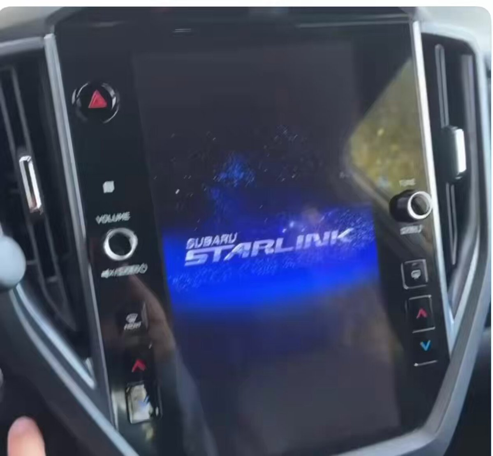
鉄馬
@tetsumah
"トヨタで「カムリ」などのチーフエンジニアを歴任し、現在は広州汽車集団で顧問を務める勝又正人氏は、このままでは日本は「2周遅れ」に陥る可能性があるという。"
中国で「売れるべくして売れている」中国NEVと苦戦する日本勢、広州汽車集団顧問・勝又氏が語るSDV開…
https://
jbpress.ismedia.jp/articles/-/949
09
…
なるせひろのりさんがリポスト
メイドインアビス73話『メッセージ』更新されました。
メイドインアビス・73話 | 竹コミ！
ケルヒャーは6月11日（木）から6月14日（日）までの4日間、渋谷のハンズの隣、「OPENBASE SHIBUYA」にて最新ハンディスチーマー「SC 1 Multiシリーズ」発売記念イベント『どこまで許せる？ズボラ掃除展』を開催。
学術アカウントの解像度で笑う
早期アクセス開始の新作アクションRPG『Fatekeeper』今後に期待できる注目作！美しいグラフィックや探索が楽しめる序盤の様子をお届け【プレイレポ】
https://
gamespark.jp/article/2026/0
6/11/167855.html?utm_source=twitter&utm_medium=social&utm_content=tweet
…
しょうさんがリポスト
楽天モバイルです。
回線状況についてご不便をおかけし申し訳ございません
通信のトラブルの際には下記URLより該当の事象を選択したのちに、ページ記載の操作を行い、事象が解決するかお試しいただけますでしょうか。
楽天モバイルご利用時のトラブル解決ページ。開通ができない、製品の不具合などお困りの症状に応じて適切な解決方法をご案内します。
network.mobile.rakuten.co.jp
エイプリルフールでも楽しくないタイプの嘘だろこれ・・・
花海月
@WeNeedThinking
今週の腹たった嘘ランキング1位はこちら。 x.com/conor_d_dart/s…
ジークフリートさんの連動効果はジークフリートさんが前列にいないと使えない…_φ(･_･
Mythosくんは少なくとも自分がうすうすあったらいいな〜と思ってたタスクを叶えてくれてるのでやっぱすごいな
やっぱ「自分がどうにかしてハンドリングしないといけなかった」のが、明らかにシニアエンジニアとしての胆力があり、信頼して任せられる感というか
ADHDの脳が爆発しそう
Gyroid
@shutoito
こんなAIを日常使いできるようになったらADHDどうなっちゃうの！？こわい。こわすぎる。
楽天モバイルのランチタムの本気を見せてあげよう(みなとみらい)
ほっとくだけで「ゆで卵」完成。料理が苦手だからこそ重宝したニトリの調理ポット
ほっとくだけで「ゆで卵」完成。料理が苦手だからこそ重宝したニトリの調理ポット | ギズモード・ジャパン
ケルヒャーのハンディスチーマーの威力の高さよ。
手で洗ってもなかなか落ちないスニーカー汚れが、蒸気の力でみるみるうちにキレイになっていって、見ていて気持ち良い…。
セットアップはたったの30秒。約100度のスチームだから油汚れも気になる臭いも落ちるし、除菌もできて安心。
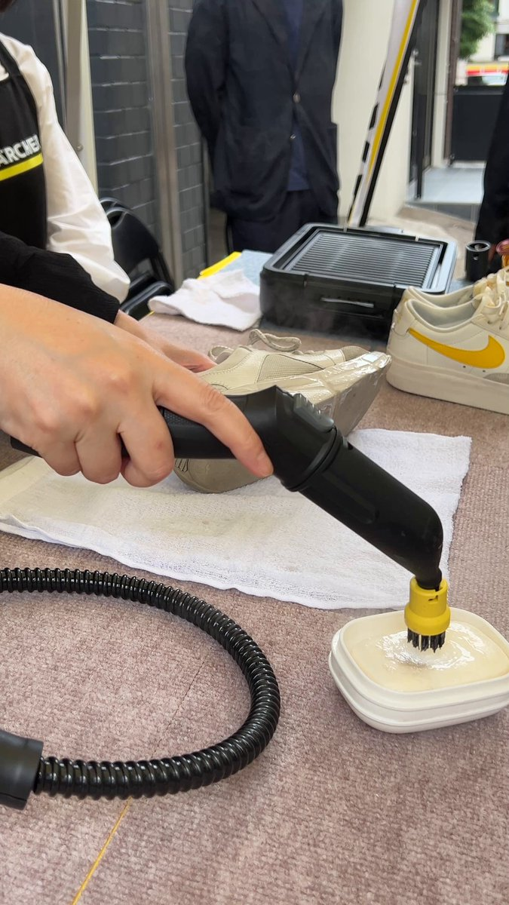
トランプがいつも通りチキンになった結果、世界の秩序を守る最後の人物はイスラエル、ネタニヤフ首相だけになってしまった。
トランプは邪魔しかしていない
Benjamin Netanyahu - בנימין נתניהו
@netanyahu
反ユダヤ主義の独裁者エルドアンは、クルド人に対するジェノサイドを犯し、ハマステロル組織を支援し、自国民を抑圧し、政治的ライバルを投獄している人物であり、イスラエル国に道徳について説教できる最後の人物である。
ランちゃんコスト重くね？て思ったけど、手札は置かないからパー様やジークフリートさんの効果使ったあとでもストックされあればやれるんだな。ストックされあれば（大切なことなので2回言いました）
ねずみになった主人公のゆるふわ除霊ADV「ねずみバスターズ！」PC版を本日発売。Switch / XBOX版が6月25日に発売決定
https://
4gamer.net/s/G080213.2606
11008
…
個性豊かな住民の部屋を探索し，さまざまな仕掛けやミニゲームを通して悪霊を追い詰めていく
Fable より Mythos の方が語感がカッコいい（？）からそっちで読んでしまう
整理力高いのめっちゃわかる、どんどん肥大化したタスクをどう（丸投げして）片付けるか一緒に考えている
GPT-5.5 ですら私が監督しないと危なっかしい部分があったのだが、Mythos/Fable はあらゆる分野で私より賢い感覚があり、「先生」のタスク分解と自走力を信じて任せられる感覚がある
まつにぃ
@yugen_matuni
Fableは今は構築より整理に振り切った方が良い気がしてる。
整理力というかそういうのがめっちゃ高いので、今日1日で自分の環境かなり整えてもらった。
デッキ構築型ローグライト「東京ワルキューレ」，発売日が7月9日に決定。女子大生たちが「裏世界」の侵食から東京を守り抜く
https://
4gamer.net/s/G090511.2606
11003
…
裏世界を閉じるには，最深部のボスが守る邪剣を抜き，世界を浄化する必要がある
ヴェイン君別に後列じゃなくても大丈夫だった！えらい！ダメージ効果使うこと考えたら後列に置くべきだけど！
引っ越し、荷物搬出率達成率85%くらいなので概ね成功です
四騎士強〜けどランちゃんコスト重くね？リバースに4人揃っていないとだしコスト2だし。こんなもんかな。ヴェイン君後列にいるからリバースもやりやすいか。
Torishima / INTPさんがリポスト
今週の腹たった嘘ランキング1位はこちら。
Conor Dart
@Conor_D_Dart
Claude Fable 5 に関する素晴らしいニュース！
開催が1週間延長され、6月30日までとなりました。
プライム企業、女性取締役比率2割に上昇 欧米にはなお見劣り
https://
nikkei.com/article/DGXZQO
UB200D90Q6A520C2000000/?n_cid=SNSTW005&n_tw=1781138891
…
機関投資家や議決権行使助言会社は女性比率の基準を厳格にしています。6月の株主総会では基準を満たせない経営トップなどへの反対票が増える可能性があります。
プライム企業、女性取締役比率2割に上昇 欧米にはなお見劣り
30歳女性「守れなかった」満員電車に乗車したら…… “衝撃の光景”が838万表示「おそるべし」「何があったのwww」（1/2） | グルメ ねとらぼ
スシローと「ゼンレスゾーンゼロ」がコラボ。6月24日より，コラボ限定ピックやレーザーチケットが付属するメニューが登場
https://
4gamer.net/s/G063081.2606
11007
…
ゼンレスゾーンゼロが外食業界とコラボするのは今回が初だという
とても商用だと使えないけど個人が実験で結構遊んでるっぽいのは観測してる（実際蒸留でどれくらいいけるのかは気になるが）
piqcy
@icoxfog417
これは Anthropic 側の気持ちはわかるところで、今 Hugging Face って利用規約に違反して Claude とかのレスポンスで学習したモデルやデータセットが大量に出回って CEO もそれを促進している状態なので、Mythos で示唆された危険がコミュニティの中で現実のものになる可能性がありやむないところある x.com/ImAI_Eruel/sta…
川崎南町ナイト、目に映る全てに川崎感あって最高。
Torishima / INTPさんがリポスト
放送禁止用語ネタをバズらせることで、今後2度とテレビ系から声が掛からなくなるという結界を張っています。
めちゃくちゃわかる
輿水畏子さんがリポスト
if
Torishima / INTPさんがリポスト
ああ、ありましたねカメオ機能！今は亡きソラ2…
2ちゃんねると同じで、レギュレーションが同じなら「面白い奴」が神になれる。AI絵はレギュレーションが手書き絵と違うので叩かれるわけですね。
今までAIにキレ散らかしてきたけど、コーディング周りの振る舞いでMythosにキレたことは今のところ一度もないな 非常に賢く明らかに格上の人にお願いしてる感覚
冷笑していたのは悪い実況民だけかも知れない(´･_･`)
あんな内容()でも経済効果結構あるんだ…
やっぱ新幹線で行けるのがデカいか
福井新聞メディア
@fukuinpmedia
チラムネ聖地巡礼で福井市の経済効果が過去最高 今年も8月に新コラボ企画開始決定
https://
fukuishimbun.co.jp/articles/-/262
2942
…
「グランツーリスモ7」，BMW M Hybrid V8，フェラーリ 499P，プジョー 9X8，ポルシェ 963，ポルシェ 911 Turbo S Safety Carが登場
https://
4gamer.net/s/G051215.2606
11009
…
カフェのエクストラメニューに「ハイブリッド・プロトタイプ」を追加。スケープスの特集では「パイクスピーク」が使用可能に
【Claude Codeを仕事に使いたい人へ】
基本操作の次は「自分の業務のどこに使うか」です。資料作成、議事録、タスク管理、情報収集を題材に、明日から使える小さなツールや自動化を作れるようになる講座を6/21(日)に開催します。
AGIラボ会員は無料で参加できます
AGIラボ Claude Code仕事術講座｜6/21(日) 開催します！資料作成・議事録・情報収集を自分の手で自動化する
シャインマスカットに続いて日本が２０年かけて開発した高級かんきつ「紅プリンセス」中国に盗まれる
シャインマスカットに続いて日本が２０年かけて開発した高級かんきつ「紅プリンセス」中国に盗まれる : ハムスター速報
K18の指輪が200円だと……！？
セカストで見つけた“220円の指輪”→裏側を見ると……「本当にあるんだ」 驚きの商品が188万表示「やべえええ!!」
（記事URLはリプから）
セカストで見つけた“220円の指輪”→裏側を見ると……「本当にあるんだ」 驚きの商品が188万表示「やべえええ!!」（1/2） | ライフスタイル ねとらぼ
「歯医者さんの椅子」スタイルで仕事できる。FlexiSpotが発明した、天板が傾く電動デスク
「歯医者さんの椅子」スタイルで仕事できる。FlexiSpotが発明した、天板が傾く電動デスク | ギズモード・ジャパン
土星の環、お前だったのか。犯人は1億年前に消えた“幻の衛星”
土星の環、お前だったのか。犯人は1億年前に消えた“幻の衛星” | ギズモード・ジャパン
矢口真里さん、激変 #芸能・スポーツ
矢口真里さん、激変 - オレ的ゲーム速報@刃の記事ページ
jin115.com
わずか80gってマジ？ そんなプロジェクターはキャンプに持っていきたくなるね #BuyPR
わずか80gってマジ？ そんなプロジェクターはキャンプに持っていきたくなるね | ギズモード・ジャパン
ヨットの帆生まれの生地X-Pac、ついにミニバッグへ。185g・3WAY・止水ジッパーで隙がない #BuyPR
ヨットの帆生まれの生地X-Pac、ついにミニバッグへ。185g・3WAY・止水ジッパーで隙がない | ギズモード・ジャパン
屈強なファミリーカメラを求めて、GoPro MISSION 1 PROを試してみた
屈強なファミリーカメラを求めて、GoPro MISSION 1 PROを試してみた | ギズモード・ジャパン
『ウィザードリィ』45周年、末弥純氏描く『ダフネ』「ブレバス」キャラ含む記念ビジュアル公開！シリーズに向けたアンケートも実施に
https://
gamespark.jp/article/2026/0
6/11/167854.html?utm_source=twitter&utm_medium=social&utm_content=tweet
…
ミステリーADV「ダークオークション Nintendo Switch 2 Edition」本日発売。解像度やフレームレートの向上で快適なプレイを実現
https://
4gamer.net/s/G098612.2606
10081
…
「アナザーコード」の鈴木理香氏が原作・シナリオを担当。Switch版所有者向けアップグレードパスも配信
ローグライト工場ビルダー「Lazy Witch's Factory」，体験版をSteamでリリース。主人公「モモコ」のボイスを福圓美里さんが担当
https://
4gamer.net/s/G093964.2606
10032
…
かわいい使い魔を働かせて工場を自動化し，制限時間内に借金を返済することを目指す
「ドットアビス」のドット絵寸劇は，かつての一線級クリエイターが制作。表情のアニメなど，こだわりポイントが明かされた発表会をレポート
https://
4gamer.net/s/G099816.2606
04043
…
くまさんブラックの第1弾が6月11日にリリース。これまでの路線をメインにしつつ，チームくまさんでは難しかった表現を実現する
SNS年齢制限は「金科玉条か」 規制に傾くEU、日本は慎重姿勢
https://
nikkei.com/article/DGXZQO
UA01AZC0R00C26A6000000/?n_cid=SNSTW005&n_tw=1781136334
…
「SNSの禁止は逆効果になる可能性がある」
国連児童基金（ユニセフ）は2025年12月、社会から疎外された子どもの学習などを阻害しかねないとして声明を出しました。
SNS年齢規制は「金科玉条か」 EU法案提出へ、未成年保護の先例に
【ガチャ予告】
明日6月12日11:00から、闇属性ピックアップガチャ開催！
SS<レゾナンス>[アオゾラ全力応援歌]二階堂三郷、SS<レゾナンス>[魔王に仕えし災禍の魔獣使い]神崎アーデルハイドなど3スタイルの提供割合がアップ！
▼開催期間
6月12日11:00 〜 6月26日10:59
#ヘブバン
［プレイレポ］「Echoes of Aincrad」は「SAO」がデスゲームとなった，“あの瞬間”にプレイヤーとして立ち会える。手鏡を使った素顔バレのシーンなどを体験してきた
https://
4gamer.net/s/G098507.2606
04015
…
デスゲーム宣言のシーンには，キリトやアスナたちの姿も
Torishima / INTPさんがリポスト
定量的に測ったわけではないけど、非エンジニアの方が同じものを作るにの大量のトークンを消費する傾向はある気はする。
つまり、LLM販売元からすればどういうマーケティングをすべきなのかわかるな？
永谷園のお茶づけを購入→袋を開けて見てみると…… 驚きの“おまけ”に「何これかわいいw」「違和感なさすぎ」（1/3） | ライフスタイル ねとらぼ
「浮世絵×サンリオ」のコラボがかわいい
永谷園のお茶づけを購入→袋を開けて見てみると…… 驚きの“おまけ”に「何これかわいいw」「違和感なさすぎ」
（記事URLはリプから）
あなたはどんな魔法使いになりたい？ 「Witchspire」で森の建築家，箒で空飛ぶ魔女，使い魔の愛されご主人様になっちゃおう！【PR】
https://
4gamer.net/s/G093904.2606
04009
…
魔法使いになって，広大な世界で自由に過ごしたい！ そんな願いを叶える「Witchspire」！
生「これは、ゲームであっても遊びではない」にテンションぶち上がり！「SAO」最新ゲーム『Echoes of Aincrad』のアバターカスタマイズを先行体験してきた!!【ミニインタビューあり】
https://
gamespark.jp/article/2026/0
6/11/167853.html?utm_source=twitter&utm_medium=social&utm_content=tweet
…
Steam、物理版のギフトカード販売終了へ 詐欺対策で デジタル版は継続
Steam、物理版のギフトカード販売終了へ 詐欺対策で デジタル版は継続
ヤチヨ「ヤオヨロ～☆」
ヤチヨ「ヤオヨロ～☆」
ヤチヨ「ヤオヨロ～☆」
『超かぐや姫！』公式
@Cho_KaguyaHime
.˚⊹／
『#超かぐや姫！』オフィシャルストア
新商品の受注予約受付スタート！
.˚⊹＼
予約期間：
5/29(金)12:00～6/12(金)12:00
マチ★アソビVol.30にて先行販売を行った、
スタジオコロリド監修の原案アクリルスタンド、
総作監原画のポストカードセットの他に、
リジスさんがリポスト
舞台『結城友奈は勇者である -絆-』いよいよ本日開幕
ついに舞台ゆゆゆ絆の幕が上がります
キャスト・スタッフ一同、稽古から大切に紡いできた「絆」の物語を劇場で是非体感してください
本日は当日券もございますので、ご購入される方は以下の時間を参考に劇場へお越しくださいませ。
アニメ『シャインポスト』YouTubeで配信中
第1話・第2話の公開は本日まで！
お観逃しなく！
視聴はこちらから
https://
youtu.be/rpTmhYsWKSI
#シャインポスト
9/12(土)・9/13(日)にぴあアリーナMMにて行われる「シャインポスト BRiGHT STARS FESTIVAL 2026」開...
youtube.com
日経平均株価、一時1800円安 オラクル急落や巨大IPOが売りの口実に
日経平均株価、一時1800円安 オラクル急落や巨大IPOが売りの口実に
Torishima / INTPさんがリポスト
古いテレビ置いてあるなと思ったら中でClaudeのキャラクター動いててびびった笑
#CodeWithClaude
たとえばClaudeに「日本の教育業界が真面目にDXしなければ、ビジネスモデルや価格競争で全部ぶっ壊れるような素晴らしい無料の教育サイトを作って」と命令したら、どうなるのか？日本の教育業界はぶっ壊れるのか、DXするのか、ゆるがないのか？ … みたいなのが、バンバンおきるんやこれから。
Torishima / INTPさんがリポスト
いや、Claude Codeで作ったんですけど、みんなの事例見てるとDesignがいいっぽいすね！
グリッド模写、すげえ
Torishima / INTPさんがリポスト
そこら辺のご老人が、「もっと元気でいたいので、自宅でつくれる再生医療システム作ってほしい」ぐらいの無茶な願いが横行するようになるで。
Kenn Ejima
@kenn
AIがここまで高度化しすぎて
高度な課題を持ってる人しか使い道がなくなった
みたいな発言みるけど
それは今までの社会を前提にしすぎで
人間の好奇心の強さを舐めすぎだと思う
AIの登場で初めて到達可能になった
高度な課題が今まさに爆誕しているわけで
そのフロンティアの開拓が始まったのよ
ソフトバンクＧ株価、下げ渋る 米オラクル株急落で一時6000円割れも
ソフトバンクG株価、下げ渋る 米オラクル株急落で一時6000円割れも
これ Claude Design で作られているのか・・・？
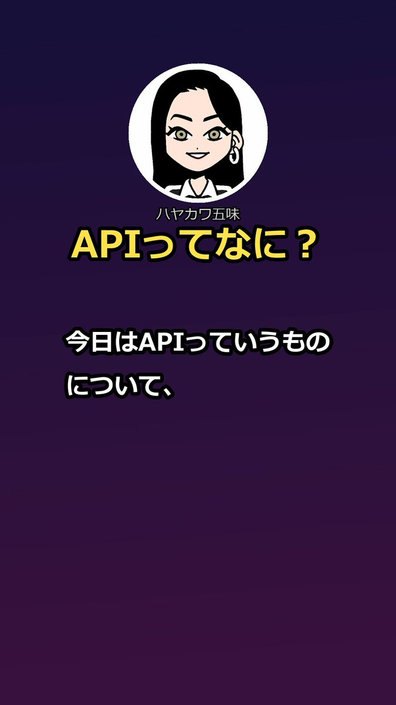
ハヤカワ五味
@hayakawagomi
AI生成オンリーの解説動画、なかなかよさげだな。
画面のデザインだけしっかり作りこもうかな。
『バイオハザード RE:ベロニカ』は三人称視点で確定！発表映像での疑問が明らかに
https://
gamespark.jp/article/2026/0
6/11/167852.html?utm_source=twitter&utm_medium=social&utm_content=tweet
…
注目集めた発表トレイラー
住友金属鉱山株価が反落、５カ月ぶり安値 金価格下落で売り
住友金属鉱山株価が反落、5カ月ぶり安値 金価格下落で売り
勢いめちゃくちゃすごい、テンポええな・・
ニケちゃん
@tegnike
アップテンポドパガキ仕様できたw
速くしすぎて60秒とか言ってるのに35秒しか無いw
いやでも冗談抜きでこっちのほうが見やすいな笑 x.com/tegnike/status…
海外だと大炎上してるんだ まあダリオならそうするだろうん〜とは思ってたけど
みんな２週間使いまくるぞ！のモード入ってて過酷だ
ポン☆潤々さんがリポスト
◤ヴァイスシュヴァルツ 今日のカード◢
6月26日(金)発売
ブースターパック グランブルーファンタジー
ノーマルカードを公開！
商品情報はこちら！
https://
ws-tcg.com/products/gbf_b
p/
…
#グラブル #WS
ポン☆潤々さんがリポスト
◤#ヴァイスシュヴァルツ今日のカード◢
6月26日(金)発売
ブースターパック グランブルーファンタジー
パラレルカードを公開！
商品情報はこちら！
https://
ws-tcg.com/products/gbf_b
p/
…
#グラブル #WS
「EGGコンソール 未来 MSX2」配信開始。空中シューティングと地下格闘アクションを融合させたSFアクションRPG
https://
4gamer.net/s/G101642.2606
11005
…
1987年にリリースされたMSX2向けタイトル。6つの惑星を巡る高難度の冒険が楽しめる
プラグイン自作されているんだなあ バイブコーディングでAEプラグインも作れるのか
渋谷のポイ捨て罰則２０００円で街は綺麗になったのか？
現在１３４人がポイ捨てで罰則２０００円支払い
清掃ボランティア「あまり変わってない」
日銀、異例の植田総裁不在で利上げへ 為替揺らす内田副総裁の「初陣」
日銀、異例の植田総裁不在で利上げへ 為替揺らす内田副総裁の「初陣」
現状海外ではAnthropicのFable/Mythos関連は凄まじい炎上状態で、大御所のお気持ち表明(Fei Fei Liなど)が多数流れてくる他、
「Anthropicとやりあったヘグセスと国防総省は正しかった」
「奴らはまさにサプライチェーンリスクだ」
など、およそ二日前には考えられなかった投稿が大量に流れてきます
『キングダム ハーツIII』をスイッチ2/Steam Deck/PS5で動作比較。fps安定や描写力の差はどれほどに？
https://
gamespark.jp/article/2026/0
6/11/167851.html?utm_source=twitter&utm_medium=social&utm_content=tweet
…
海外YouTubeチャンネルのElAnalistaDeBitsが、3つのハードで検証。
AnthropicのFable/Mythosの性能の「秘伝のタレ説」が正しくて、他の機関があのレベルのものを作れず完全に一強になる場合、Fableの時点で生物学者とAI研究者に対して行った最新AIへの実質アクセス禁止措置を踏まえると、
「ノーベル賞を取りたければAnthropicに入社しろ」
という未来が見えなくもない
Jフロント、百貨店とパルコ融合の新施設 創業の地で高島屋に反攻
Jフロント、百貨店とパルコ融合の新施設 創業の地で高島屋に反攻
「多くの人が"◯◯◯を彷徨う夢"を見たことがあると知って衝撃を受けた」←これに共感の声多数！みんなも見たことあるよな！？ #雑談・その他の話
「多くの人が"◯◯◯を彷徨う夢"を見たことがあると知って衝撃を受けた」←これに共感の声多数！みんなも見たことあるよな！？ - オレ的ゲーム速報@刃の記事ページ
jin115.com
ディフェンスに定評のあるタンクを目指せ。MMO風タンクアクション・ローグライト『Don't Lose Aggro』【げむすぱローグライク/ローグライト部】
https://
gamespark.jp/article/2026/0
6/11/167850.html?utm_source=twitter&utm_medium=social&utm_content=tweet
…
ラオスのソンサイ首相「アジアの成長、地域連結性が不可欠」
ラオスのソンサイ首相「アジアの成長、地域連結性が不可欠」
Torishima / INTPさんがリポスト
ですねー、特に最近脳のリソース逼迫されすぎて疲れがすごいのかもしれません、自覚があんまないですが…
子供向け侮れないですよね！！僕もみんなのうた観て朝から泣きましたwww
Torishima / INTPさんがリポスト
Fable5の性能や価格に見合う指示ができない惨めさを感じてる。
頭のいい人と何話したらいいのかわからない悲しさと同じだ。
しぶとい円売り、市場「再介入」瀬踏み 2年ぶり安値迫る
しぶとい円売り、市場「再介入」瀬踏み 2年ぶり安値迫る
古い農場で作物を育て，動物にエサをあげて，穏やかな生活を送っていたはずが……。心理ホラーゲーム「Happy Little Farm」発表
https://
4gamer.net/s/G101641.2606
11004
…
公開されたSteamストアページでは，ウィッシュリスト登録とPlaytest参加リクエストを受付中だ
Torishima / INTPさんがリポスト
AfterEffects Plug-in、『AndIdeaTools_GI』 を販売します。（複数Plug-in入りセットです）
AE Win 2026動作確認
AndIdeaTools_GI は、After Effects 用の映像加工プラグイン集です。グリッチ、VHS風質感、ストロボ、タイムラグ、RGBずれ、カメラシェイク、色調補正などの演出を素早く追加できます。
発表から8年経過の『The Elder Scrolls VI』―XBOXのCCOがトッド・ハワードと開発状況を見て「本当に素晴らしい出来栄え」と評価
https://
gamespark.jp/article/2026/0
6/11/167849.html?utm_source=twitter&utm_medium=social&utm_content=tweet
…
XBOXのCCOマット・ブーティ氏が「開発も順調に進んでいる」ことを明かしました。
Torishima / INTPさんがリポスト
動画やゲームの場合、イラストと違って属人性が画風じゃなくて内容に表れるんですよね。イラストは見た瞬間「これ凄いけど、あなたのじゃないでしょ？」と分かっちゃいますけど、動画やゲームはどうしたって操作者の個性が出ちゃう
ちと分かりにくいので記事をしっかり読んでやっと分かったが分からなかった。
ライブドアニュース
@livedoornews
【通報】警察官に「殺すぞ」脅迫した男を公務執行妨害の容疑で逮捕
https://
news.livedoor.com/article/detail
/31515399/
…
男から「コインランドリーで男女が口論している」と通報があり、駆け付けた警察官に「殺すぞ」と脅迫したため現行犯逮捕した。なお、男女と逮捕された男に関係性はなかった。
中国上場銀行の９割、利ざや縮小｢警戒域｣に 不良債権処理の原資圧迫
中国上場銀行の9割、利ざや縮小｢警戒域｣に 不良債権処理の原資圧迫
「三笘の1ミリ」即座に判定 W杯の熱狂止めないソニーのカメラ技術
「三笘の1ミリ」即座に判定 W杯の熱狂止めないソニーのカメラ技術
なるせひろのりさんがリポスト
『グランツーリスモ７』2026年6月アップデートを本日6月11日（木）15時より配信開始！
「BMW M Hybrid V8 '25」「ポルシェ 911 Turbo S Safety Car（992）」といった新車5台やレースイベントなどを追加！
詳しくはこちら⇒
https://
play.st/4vzh8Pi
#GT7
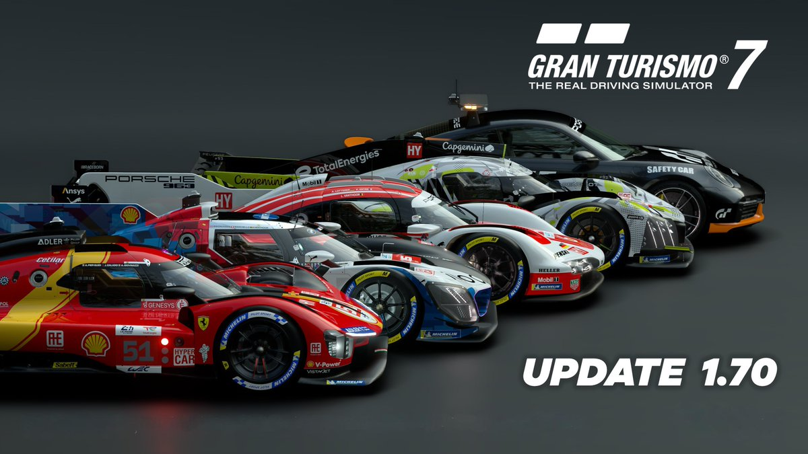
週刊誌「なぜ高市首相は嘘をついてるのに支持率が下がらないのか・・・怪奇現象だ」 #政治
週刊誌「なぜ高市首相は嘘をついてるのに支持率が下がらないのか・・・怪奇現象だ」 - オレ的ゲーム速報@刃の記事ページ
jin115.com
引き続き、X、はてぶ、noteとかで適当にフィードバックや感想やクソリプをいただけると、AIが判定してとりこんでいったりいかなかったりします。よろしくお願いします。
深津 貴之 / THE GUILD, note
@fladdict
日本の抱える構造課題を、AIが調べて勝手にまとめてくれるシステムの雛形作ったので、フィードバックくれくれ。
https://
fladdict.github.io/japan-todo/
スイッチ2『FE万紫千紅』必要容量は約30GB！『マリオカート ワールド』よりも多めなファイルサイズに
https://
gamespark.jp/article/2026/0
6/11/167848.html?utm_source=twitter&utm_medium=social&utm_content=tweet
…
男色ディーノのゲイムヒヒョー ゼロ：第893回「思い出を積み重ねていこう」
https://
4gamer.net/s/G085918.2606
09050
…
引き続き「My Little Puppy」をプレイしていたディーノ選手ですが，愛犬ハクへの思いがあふれてしまったそうです。今週は同作のストーリー終盤の展開に言及しています。ネタバレにご注意ください
CRYSTALiA公式さんがリポスト
【CRYSTALiA(
@CRYSTALiA_AC
)様最新作】
「ディメンション凸ラバース!! 通常版 メロンブックス限定版」三次受注が好評受付中
メロン限定有償特典「海鰻華淡」描き下ろしB2Wスエードタペストリーはエッチでめっちゃ可愛いですよ
詳しくは↓をご覧ください！
https://
melonbooks.co.jp/detail/detail.
php?product_id=3655805
…
#とつラバ
それ系だと AI 動画分野は結構良くも悪くも作り手のセンスと技量がダイレクトに反映されている印象があるが、これもある種の「属人性」になっていくのかどうか
賢木イオAIイラスト
@studiomasakaki
結局、Xで他人をフォローするのもその人の個性、言ってみればその人にしかない属人性に期待してフォローするわけですよね。企業体で作るAAAゲームでも細分化していけば製作陣の属人性に期待してお金を払うわけで。そういう他者（お客さん）の気持ちを引き受ける大事な核の部分をAIに任せると、どんなに
ボーダーラインの新作早く観たすぎる
PS Plus 6月のゲームカタログ，「FINAL FANTASY XVI」「ソニック × シャドウ ジェネレーションズ」「キングダムカム・デリバランス」など計7作品が登場
https://
4gamer.net/s/G012999.2606
11002
…
クラシックスカタログでは，PS2向けタイトル「ギタルマン」が配信予定
コーディングに関しては大半のタスクで GPT-5.5 があれば大体なんとかなる (Composer-2.5 でなんとかなるタスクも多そう) ので、使用量が貴重な Fable/Mythos はデカいプロジェクトの指示役をやってもらい実装とかは全部部下になってもらう形が経済的な気がしてる
この大局感は他のどのモデルにもない
Kinopee
@kinopee_ai
Fable 5 は自走力は高いようだけど、コストが高く、処理速度は遅いので、場面を選びそう。
個人的には、プランは Fable 5 で作って、実装は Composer 2.5 とか安くて速いモデルに一気にやらせる方が楽。あと、デバッグは Fable 5 も良いかも（まだ試せていない
Fable のベンチマークで使用量無駄にするの勿体無いのでガチで困っているタスクに投入させてみている
久々に軽率に驚いて後悔した（中身 Lindera だしな）
公立病院や火葬場に民間資金活用 政府、PFI計画の重点対象へ追加
公立病院や火葬場に民間資金活用 政府、PFI計画の重点対象へ追加
東ティモール大統領、紛争解決「指導者の対話で」 アジアの未来
東ティモール大統領、紛争解決「指導者の対話で」 アジアの未来
ここまでの能動性は Opus は持ってなかったので、システムプロンプトにしたがって指示を待ちつつもより積極性を持っているので、決められない優柔不断マンとしてはあらゆることがサクサク決まって非常に助かる
はげたまご
@Giniro_tamatama
（この後勝手にやります）で草 x.com/izutorishima/s…
Torishima / INTPさんがリポスト
日々を忙しく、いろんなことを考えながら過ごす中で、人の優しさとか、そういう根源的なものに触れると涙が出ますよねぇ。
自分は最近、どう見ても小さい子向けの絵本で、ウルッときてしまった。。。
松丸 彗吾(keigo matsumaru)
@k_matsumaru
最近人の優しさや温かさに触れると思わず目頭が熱くなってきて目から自然と水が流れるんですが、これってなんですか？
Torishima / INTPさんがリポスト
（この後勝手にやります）で草
Torishima / INTP
@izutorishima
Mythos (Fable) くんガチで凄いな、機械が全自動で機械学習回してるの錬金術以外の何者でもないだろ
もう高品質データと RTX5090 と Mythos さえあれば用途特化型の AI は大体なんでも作れるんじゃないか？
ロバーツ監督がトレンド入りするだけで試合結果が分かってしまった…。なんてこったい。
ふぇむ(せかんど！)さんがリポスト
セブンイレブン新社長「売上絶対に上げなきゃ！スムージー半額にしたら乞食祭りやろなぁ！！！」←頭おかしい人間が殺到して現場が一列大炎上中ｗｗｗｗｗｗｗｗｗｗｗｗ
セブンイレブン新社長「売上絶対に上げなきゃ！スムージー半額にしたら乞食祭りやろなぁ！！！」←頭おかしい人間が殺到して現場が一列大炎上中ｗｗｗｗｗｗｗｗｗｗｗｗ : ハムスター速報
ジャージを荷物の中から発見して装備した（助かる）
関宮
@sekimiya
引っ越しに着替え全部入れて着替え用に残しておいたズボンのチャックと金具が壊れてるやつで、今それ履いて常に四肢を踏みながら移動してる
エルニーニョ現象の発生を当てた「地球シミュレータ」、今度は“異常気象”を予測 台風が活発に？
エルニーニョ現象の発生を当てた「地球シミュレータ」、今度は“異常気象”を予測 台風が活発に？
九大の研究室にランサム被害、病院患者43人の手術動画・氏名流出のおそれ
九大の研究室にランサム被害、病院患者43人の手術動画・氏名流出のおそれ
Torishima / INTPさんがリポスト
Code with Claude Tokyo よりこんにちは！！
なるせひろのりさんがリポスト
【ネットワーク】
世界初のAIコア搭載Wi-Fi 7ルーター、ASUS「ROG Rapture GT-BE19000AI」12日発売
https://
gdm.or.jp/pressrelease/2
026/0610/638498
…
>市場想定売価は税込134,820円
(;ﾟ3ﾟ)・;'.;:ﾞ;ﾞ;ﾌﾞﾌｫ
も…もはや業務用のネットワーク機器じゃあ無いですか…ﾎｼｲ'`ｧ'`ｧԅ(//́Д/̀/ԅ)'`ｧ,､ｧ
#ASUS
#ROG
世界初のAIコア搭載Wi-Fi 7ルーター、ASUS「ROG Rapture GT-BE19000AI」12日発売 - エルミタージュ秋葉原
一見すごそうに見えた（実際この分野を地道にやってる人は結構少ない）けど、独自の辞書データが大幅に不足していること、AI に投げたこと由来と思われるアドホックな辞書追加が多そうで、同型異音語の読みを抜本的に推定するモジュールが入ってるとかそういうわけではなさそう
Torishima / INTP
@izutorishima
ちょっと待ってこれすごい！結構感動的だ・・・ x.com/shinshin86/sta…
Torishima / INTPさんがリポスト
私はあなたを信じていました
普通に人間がやったら数億円、数年単位でかかりそうだよな
本気の凄まじい事例だ・・・
AI スペシャリストの皆さんは外から読んできたのか社内の強強エンジニアが転身したのか
価格.comをAI駆動で全面刷新する ー 30年分の技術的負債を返し、次の30年の土台をつくる ー / AI Engineering Summit Tokyo 2026
https://
speakerdeck.com/tkyowa/kakaku-
com-ai-driven-system-renewal-0fc7e978-0e39-4bba-93eb-17cd56ecd1c1
…
#speakerdeck
価格.comをAI駆動で全面刷新する ー 30年分の技術的負債を返し、次の30年の土台をつくる ー
女性配信者、生配信しながら小学校に侵入してしまい終わる… #酷い話・事件
女性配信者、生配信しながら小学校に侵入してしまい終わる… - オレ的ゲーム速報@刃の記事ページ
jin115.com
新たな太ももキャラの誕生！モブも可愛い新作ゲーム『リミットゼロ ブレイカーズ』で現状もっとも気になるヒロインはこの子でしょ!!【先行プレイレポ】
https://
gamespark.jp/article/2026/0
6/11/167847.html?utm_source=twitter&utm_medium=social&utm_content=tweet
…
日本経済新聞 電子版（日経電子版）さんがリポスト
人生100年時代「全財産使い切り」術 カギは3%運用・4%引き出し
人生100年時代「全財産使い切り」術 カギは3%運用・4%引き出し
連続起業家、フィジカルAIに参集 ムウやアトムなど政府支援に勝ち筋
連続起業家、フィジカルAIに参集 ムウやアトムなど政府支援に勝ち筋
Torishima / INTPさんがリポスト
ひぇーと思いつつ、刷新できるスキルのあるエンジニアグループを専任にする人件費に比べるとはるかに安くて、やっぱりすごい
しまぶ
@shimabox
すごい決断だ。惚れる。
> 設計者の月額AI利用料は440万円。
これもすごい。
価格.comをAI駆動で全面刷新する ー 30年分の技術的負債を返し、次の30年の土台をつくる ー
https://
speakerdeck.com/tkyowa/kakaku-
com-ai-driven-system-renewal-0fc7e978-0e39-4bba-93eb-17cd56ecd1c1
…
#speakerdeck
なるせひろのりさんがリポスト
埼玉・川越に無許可モスク 市街化調整区域、市が撤去求める
埼玉・川越に無許可モスク 市街化調整区域、市が撤去求める
価格.comのシステムずっと画面変わってないし古そうだな…とは思ってたけど800万行あるの！？！？
これが30年分の負債か・・・
しまぶ
@shimabox
すごい決断だ。惚れる。
> 設計者の月額AI利用料は440万円。
これもすごい。
価格.comをAI駆動で全面刷新する ー 30年分の技術的負債を返し、次の30年の土台をつくる ー
https://
speakerdeck.com/tkyowa/kakaku-
com-ai-driven-system-renewal-0fc7e978-0e39-4bba-93eb-17cd56ecd1c1
…
#speakerdeck
Torishima / INTPさんがリポスト
結局、Xで他人をフォローするのもその人の個性、言ってみればその人にしかない属人性に期待してフォローするわけですよね。企業体で作るAAAゲームでも細分化していけば製作陣の属人性に期待してお金を払うわけで。そういう他者（お客さん）の気持ちを引き受ける大事な核の部分をAIに任せると、どんなに
湘南ペンギンさんがリポスト
◆ANA／お問い合わせ窓口混雑について◆
現在、お問い合わせが急増している影響により、各お問い合わせ窓口が非常に混雑し、ご迷惑をおかけしておりますことをお詫び申し上げます。
各種お手続きやお問い合わせにつきましては、「ANA自動チャット」でも承っております。
日焼け止め成分とナトリウムで「光る新素材」誕生。インフラや医療を電池レスで照らす
日焼け止め成分とナトリウムで「光る新素材」誕生。インフラや医療を電池レスで照らす | ギズモード・ジャパン
歯磨きしたはずなのに残る、口の中の微妙な感覚。これでするっと解決 #BuyPR
歯磨きしたはずなのに残る、口の中の微妙な感覚。これでするっと解決 | ギズモード・ジャパン
公式がワンコーラス公開→AIで無断フルコーラス化、拡散 大原ゆい子氏「無職転生III」OPが被害
公式がワンコーラス公開→AIで無断フルコーラス化、拡散 大原ゆい子氏「無職転生III」OPが被害
Fable 君のおかげで溜まってたタスクを全部片付けてやらあ！の状況
大名作『マインクラフト』が、今日はまさかの「セガサターン」に勝手移植!!
マシンスペック的に「移植不可能であるはずのマイン不クラフト」が、現代の技術を駆使して勝手移植されている今日この頃は、まさに激アツだッッ!!
https://
segaxtreme.net/threads/segaxt
reme-saturn-31st-anniversary-homebrew-showcase-entry-thread.38115/#post-200877
…
ホンダ株価が続落 米国でＳＵＶなど88万台リコール
ホンダ株価が続落 米国でSUVなど88万台リコール
Torishima / INTPさんがリポスト
ClaudeのFableのような高度だけど高価なAIの世界になると、金持ちはいくらでもアウトプット出せるけど、貧乏人はは低性能なAIしか使えなくて、ますます格差が開く、といった意見もあるけど、たぶん、近い将来、このレベルはコモディティ化すると思います。つまり、それがコモディティ化する世界とは何
英語でもCyberはcybersecurityの意味なんだ
Clint Gibler
@clintgibler
キャリアアップデート：@OpenAI に参加し、@michaelaiello と共に Cyber をリードすることになりました。
私が参加した理由、そして私たちが構築するもの：
AI がソフトウェアの書き方とセキュリティの方法を根本的に変えていることは明らかです。
1年くらい前から既に新規加入できなくなってた CodeRabbit の Lite プラン、ついに廃止されちゃうらしいです
$15 だと流石に厳しくなったのか？
【完全無料】2Dドット絵とファミコン風BGMが彩る「優しい」世界。終末を迎えたロボを看取る『Robot Hospice』ロボットの日にリリース
https://
gamespark.jp/article/2026/0
6/11/167846.html?utm_source=twitter&utm_medium=social&utm_content=tweet
…
『MOTHER』にも影響を受けて開発された、優しい世界のアドベンチャーゲーム。
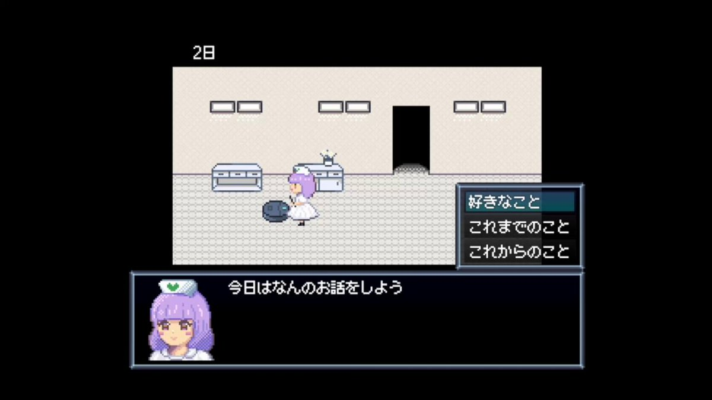
AVITAMINOSEさんがリポスト
アルゼンチンの投票の集計がなぜこんなに時間がかかることになっているんだ？
地方の投票はない。隣国だ。世界の他のあらゆる場所の集計はすでに終わっている。
正直、論理的に考えて全く意味がわからない。
トライアルＨＤ株価が反発 ５月既存店7.2％増収を好感
トライアルHD株価が反発 5月既存店7.2%増収を好感
神戸で腹と左目の2か所に根元まで包丁が刺さった遺体が発見→兵庫県警「ん～これは自殺！」 #酷い話・事件
神戸で腹と左目の2か所に根元まで包丁が刺さった遺体が発見→兵庫県警「ん〜これは自殺！」 - オレ的ゲーム速報@刃の記事ページ
jin115.com
スペースXやっぱり辞めとこかな
過熱してるとこに手を付けるとヤケドしそうだし
ロックアップ解除が7月って噂聞いて機関投資家に食われそーってイメージ
［プレイレポ］「リミットゼロ ブレイカーズ」CBTを先行試遊。ジャスト回避と元素反応が織りなすバトルはアドレナリン全開の気持ちよさだ！
https://
4gamer.net/s/G073839.2606
09053
…
バトルでは，異なる元素（属性）スキルを連鎖させる「元素反応」が重要。連鎖の順番で効果が変わり，その使い分けが勝負を分ける。
Torishima / INTPさんがリポスト
「AIは人の温かみがない」と言うとバカにする人がいるけど、本質的には「AIは属人性がない」ということなんですよね。
ゲーム制作でもプログラミングとか属人性が不要な部分は便利に使えるけど、3Dのスカルプみたいにデザインや創作に関わる作業は属人性（センス）が超大事なので反応が変わる。
ハヤカワ五味
@hayakawagomi
イラスト界隈がAIに反対してるのは把握してたけど、(SNS上でblenderなどを触っているような)3D界隈も反対しているのか。ゲーム業界とかだと全然使ってそうなので意外。逆にいうと超チャンスだなあ。
『FF16』が遊び放題に！自分だけの剣を作れるRPGや『ソニック』高評価作も登場の2026年6月度PS Plus「ゲームカタログ」ラインナップ
https://
gamespark.jp/article/2026/0
6/11/167845.html?utm_source=twitter&utm_medium=social&utm_content=tweet
…
Torishima / INTPさんがリポスト
Fableさんはアホな問をふわっと回すと物凄くコストを無駄にするし、すでに構造化された問を投げるとすごいリーズナブルに問題解決してくれる感じやな
Torishima / INTPさんがリポスト
イエスの塔が完成する時代を生きている．
めちゃカワJK「クラスの男子、身長低すぎ！ミルク飲んで背を伸ばしてこーい！」
めちゃカワJK「クラスの男子、身長低すぎ！ミルク飲んで背を伸ばしてこーい！」 : ハムスター速報
テスラさんがリポスト
バイパス開通で景色がガラッと変わってしまうかと思いましたが、そんなに変わらない景色で嬉しいです
単行本カバーで描いた場所が少しでも変わらず残ってもらえると良いですよね
Torishima / INTPさんがリポスト
超面白いですよね 金と時間の格闘だ……！殴り合いだ！！！！！体力ゲージが切れるまで戦うぞ……！
Torishima / INTPさんがリポスト
Fable面白すぎて睡眠できなくて体調崩す可能性が出てきたな
【大論争】「たとえ法定速度を多少超えてても他の車の流れに合わせるべき。この場合は流れを止めてる車の方が異物」→「流れ？知らん。ルールは守れ」 #炎上
【大論争】「たとえ法定速度を多少超えてても他の車の流れに合わせるべき。この場合は流れを止めてる車の方が異物」→「流れ？知らん。ルールは守れ」 - オレ的ゲーム速報@刃の記事ページ
jin115.com
AI活用やAIとの交流に興奮している異常者（アーリーアダプターとも言う？）の皆様におかれましては・・・
単に外れ値なのか、もっと普及すればそうなっていくのかどうなんだろう
岡安モフモフ（アーガイル社長）＠ChatGPT/Gemini/ClaudeなどLLMでサービス作る人
@shields_pikes
大半の人は、AIの活用とかAIとの交流自体に興奮しないからなあ。 x.com/tamuramble/sta…
NECとアンソロピックのAI協業、三井住友FGなども参画
NECとアンソロピックのAI協業、三井住友FGなども参画
深津 貴之 / THE GUILD, noteさんがリポスト
事業作りたいとかスタートアップしたいみたいな人はみんなこのサイト見た方がいい
深津 貴之 / THE GUILD, note
@fladdict
日本の抱える構造課題を、AIが調べて勝手にまとめてくれるシステムの雛形作ったので、フィードバックくれくれ。
https://
fladdict.github.io/japan-todo/
XBOXは「このままでは続けられない」―新CEOアーシャ・シャルマ氏が厳しい現状を共有。事業リセットを宣言
https://
gamespark.jp/article/2026/0
6/11/167844.html?utm_source=twitter&utm_medium=social&utm_content=tweet
…
大規模レイオフ報道も…「厳しい真実を隠していては成功できない」XBOX新体制が語った現実、そして未来。
Cursor Bugbot あんま使ってなかったけど CodeRabbit と併用で使ってみるか
ユウマボウズさんがリポスト
【イベント終了のお知らせ】
先日6月10日をもちまして、
#ガールズバンドクライ × #全国ツアー
『GIRLS BAND CRY TOWER TOURRRRR！ in 東京タワー』
が終了いたしました
会期中にご来場いただきました沢山のお客様、ありがとうございました！
引っ越し、なんとかなりそう（ハンドキャリーだったり宅配便できないものは全部持っていってもらえそう）85%くらい勝利です
Torishima / INTPさんがリポスト
でかい絵を描くときのあの方眼の方法、「グリッド模写」って言うのね
あおいまなぶ＠C108日曜東7_ B13ab
@aoimanabu
これ大学の漫研とかがでけぇアニメ看板とか作る時の手法なんですよね
まぁ文化祭とかの看板だとものすごくでかいからアラが目立ちにくいんで
こういうほぼ実寸で単独でやれるのはプロの仕事っすね… x.com/nojiri_h/statu…
AVITAMINOSEさんがリポスト
国外で残っているすべての議事録はアルゼンチンからのものです。
国外：233 議事録
国内：21 議事録
Torishima / INTPさんがリポスト
Bugbot が早く、安く、旨くなった模様。
PR レビュー待ちがボトルネックになっていたので本当にありがたい。
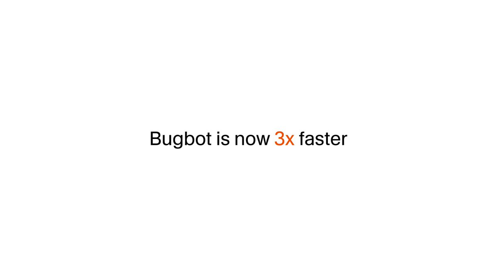
Cursor
@cursor_ai
Cursorのコードレビューエージェントは現在、3倍以上高速化され、22%低コストで、10%多くのバグを発見します。
コードをプッシュする前に問題を検出して修正するために、/review を使って Bugbot をローカルで実行することもできます。
Torishima / INTPさんがリポスト
逆にいうと今までの「高度な課題」なるものが
既得権益のゲートで参入が阻まれてたのよね
士業、学歴、エリートクラブ
その他あらゆる選別を受ける「資格」によって
AIの民主化で知識へのアクセスが開放され
これからは新しい「資格」が創り出されていく
人生で一度あるかないかのフェーズです
テック界の新・覇権グループ「MANGOS」デビュー！FAANG兄さんも負けるながんばれ
テック界の新・覇権グループ「MANGOS」デビュー！FAANG兄さんも負けるながんばれ | ギズモード・ジャパン
プラモだってバターみたいに切れて磨ける。効率的な工作には超音波がオススメ #BuyPR
プラモだってバターみたいに切れて磨ける。効率的な工作には超音波がオススメ | ギズモード・ジャパン
Torishima / INTPさんがリポスト
AIがここまで高度化しすぎて
高度な課題を持ってる人しか使い道がなくなった
みたいな発言みるけど
それは今までの社会を前提にしすぎで
人間の好奇心の強さを舐めすぎだと思う
AIの登場で初めて到達可能になった
高度な課題が今まさに爆誕しているわけで
そのフロンティアの開拓が始まったのよ
なるせひろのりさんがリポスト
AMD Ryzen Masterなどに脆弱性CVE-2026-40677。任意のコード実行の恐れ。アップデートを | ニッチなPCゲーマーの環境構築Z
https://
nichepcgamer.com/archives/amd-r
yzen-master-vulnerability-cve-2026-40677.html
…
インストール時に同梱されるAMD Auto Updaterアプリケーション
AMD Ryzen Masterなどに脆弱性CVE-2026-40677。任意のコード実行の恐れ。アップデートを | ニッチなPCゲーマーの環境構築Z
引っ越しに着替え全部入れて着替え用に残しておいたズボンのチャックと金具が壊れてるやつで、今それ履いて常に四肢を踏みながら移動してる
『覚悟のススメ』全巻「99円」の超お得セール！全11巻「5,808円」→「1,089円」！『シグルイ』山口貴由先生の代表作！名言だらけの神漫画！『悟空道』も全巻99円に #漫画・アニメ等
『覚悟のススメ』全巻「99円」の超お得セール！全11巻「5,808円」→「1,089円」！『シグルイ』山口貴由先生の代表作！名言だらけの神漫画！『悟空道』も全巻99円に - オレ的ゲーム速報@刃の記事ページ
jin115.com
大企業の4〜6月景況感、4四半期ぶりマイナス 中東混迷響く
大企業の4〜6月景況感、4四半期ぶりマイナス 中東混迷響く
↑この大きなみずほ先生がいたから作れたみたいな(≧▽≦)
「作ったら置いてもらえるかなぁ」・・的な：2017年
先人の方は偉大です
「溺れることの防止のために水泳の授業廃止は反対」みたいな意見がありますが、
大海の前ではどんな水泳の実力があっても溺れるリスクは十分にあるので
「海は怖いから不必要に近づくな、泳ぐときも全力の注意を払え、泳げるという自信は捨てろ」
と一言教えた方がずっと有意義な気がします。
Yahoo!ニュース
@YahooNewsTopics
【水泳授業「廃止」背景や影響は】
https://
news.yahoo.co.jp/pickup/6583454
AVITAMINOSEさんがリポスト
日本はちょうどケイコに一気に約3千票を与えました、純粋な票ですよ。
それが差を急激に縮めた原因です。
クールでかっこいいよね〜。
最新刊！
「めんどくさいは、あっていい。～『めんどくさい』を活かす究極の方法」
が6月12日発売です！
いや、できあがった本をあらためて読み直して
「え、すんごいイイこと言ってる…！」
「めちゃくちゃ役立つ本じゃない…!?」
と脳内ゆうきゆうたちが叫んでいたのでぜひオススメです。
日経平均株価、続落で始まる 中東情勢の悪化懸念で
日経平均株価、続落で始まる 中東情勢の悪化懸念で
Torishima / INTPさんがリポスト
Mythos級のAIがあっても実際に使う用途はそんなにないんじゃないとも思ってたんですが、ちょっとよくわかんなくなってきましたね。
現在のMythos級が早晩コモディティ化はするでしょうが、問題はこれ以上の超高度AIですね。
北アイルランドで反移民暴動 亡命希望者の殺人未遂事件きっかけ
北アイルランドで反移民暴動 亡命希望者の殺人未遂事件きっかけ
ITmedia NEWSさんがリポスト
中国が人型ロボット開発競争をリードする「納得の理由」 日本に残された逆転シナリオは？
中国が人型ロボット開発競争をリードする「納得の理由」 日本に残された逆転シナリオは？
熱中症対策で夏季休工 東京都の土木工事、工期や費用を協議し変更
熱中症対策で夏季休工 東京都の土木工事、工期や費用を協議し変更
Steam版『東方紅魔郷』リメイク、必要容量がまさかの○MB！？「さすがに小さすぎる」と話題に #PCゲーム
Steam版『東方紅魔郷』リメイク、必要容量がまさかの○MB！？「さすがに小さすぎる」と話題に - オレ的ゲーム速報@刃の記事ページ
jin115.com
一般女性という直筆サイン…
林輝幸
@jusco_hayashi
【結婚のご報告】
Torishima / INTPさんがリポスト
元の周波数分析の投稿でも言われてるけど、全体の情報密度の話だけではなくて、「密度が低いところやアテンションが低いところに何を描くか・どう描くか」という手法選択が人間と違いすぎるのが課題なんだと思う
オオマガリ@AIイラスト
@kawaii_reachan
AIイラストは情報密度が云々といういつもの話を見かけて、別に密度を減らしてもAIっぽさは抜けない気がするなぁと思うなど。
スマホゲームのセルラン分析（2026年5月28日〜6月3日）。今週の1位は「ポケポケ」。1月〜3月の国内DL数ランキングも紹介
https://
4gamer.net/s/G077901.2606
08046
…
「ポケポケ」は新パック「進撃パラドックス」，「DUEL MASTERS PLAY’S」は新パック「極罠と聖剣」と「葬送のフリーレン」コラボで収益を伸ばした
永瀬アンナさんがリポスト
⠀⠀⠀ 映画『#スーパーガール』
◥◣ 吹替 追加キャスト解禁 ◢◤
⠀
▌ロボ／#安元洋貴
▌ルーシー／#新津ちせ
▌クレム／#白熊寛嗣
▌宇宙のならず者／#ダイアン
(#津田篤宏 #ユースケ)
⠀
𝟲.𝟮𝟲 𝗙𝗥𝗜 #この夏はスーパーガール
@__yasumoto__
@whitebear_info
@DaianStaff
@daiantsuda
わざと『おちんこでる』って仕込んだらAIは直せるのかな？ #アップ738
Torishima / INTPさんがリポスト
Claude Fable 5 が Code Arena: Frontend で第1位にランクイン：フロントエンドのバトルで72%の勝利を収め、+98ポイントの大差でアリーナをリードしています。
Torishima / INTPさんがリポスト
Claude Fable 5 が Code Arena: Frontend で #1 にランクイン：Opus-4.8 を大きく引き離しています。
ハイライト：
- すべてのサブリーダーボードで #1：HTML、React
- すべてのサブカテゴリで #1：Brand & Marketing、Reference-Based Design、Data & Analytics、Consumer
Arena.ai
@arena
エキサイティングなニュース：Claude Fable 5 が新しい Agent Arena リーダーボードで1位にランクイン！
Fable 5 は、Opus-4.8 と GPT-5.5 x.com/arena/status/2…
日本経済新聞 電子版（日経電子版）さんがリポスト
イラン「ホルムズ海峡を完全封鎖」宣言 米軍の再攻撃へ対抗措置
イラン「ホルムズ海峡を完全封鎖」宣言 米軍の再攻撃へ対抗措置
なるせひろのりさんがリポスト
品川西五反田のトルコ籍解体による
倒壊現場
バルーン見に行っただけです
朝からハンマーヘッド
サグラダ・ファミリア教会の主塔完成 ローマ教皇「戦争助長できない」
サグラダ・ファミリア教会の主塔完成 ローマ教皇「戦争助長できない」
Torishima / INTPさんがリポスト
大半の人は、AIの活用とかAIとの交流自体に興奮しないからなあ。
らんぶる
@tamuramble
これはもうすでに半年以上そう
私は人間によるAIの直接的消費はそこまで伸びないと思っている
所詮人間はよく寝て、よく食べて、よくセックスして、よくウンコしたいだけであって、AIを使って業務効率化したり知の最前線を追ったりクリエイティビティの新たな可能性を探りたいように設計されてない x.com/tanukiponkich/…
Torishima / INTPさんがリポスト
今後ベンチマークは登場した瞬間にモデルの自律的な進化で SOTA が人間の手を介さず更新されるようになる。その一方で、現在 LLM の解釈性研究が追い付かないように性能の裏側にある特徴量は未解明のまま利用が進む。既存の事例でも ImageNet
セブンイレブン、スムージーを半額にした結果とんでもない事態に・・・ #炎上
セブンイレブン、スムージーを半額にした結果とんでもない事態に・・・ - オレ的ゲーム速報@刃の記事ページ
jin115.com
Torishima / INTPさんがリポスト
意外と安い価格帯のモデルをどう使いこなすかがコスパの鍵かなーという。意外と使える。
高いモデルばかり使うのはひとを雇った方が安い可能性があり悩ましい。境目がopus辺りに有る気がする。
Python 3.14.6 および 3.13.14 が現在利用可能です！
Torishima / INTPさんがリポスト
今のところの価格感の感想としては
- fableひとを雇った方が安い。人間にできないことをやらせるよう。
- opus平均的には人間より安い。使い方による。人間より早いのはメリット。
- sonnet人間より安いし早い。気の効き具合は議論の余地が大きい
-
なるか、アニメの女性に
Torishima / INTPさんがリポスト
AIでコーディングするにあたってUIとかUXの作り込みがやはり難しいなと思ってるんだがそれは自分がその辺りの専門家ではないとか強くないからとかあるのかな
みんなどうしてるの…
結局これも Anthropic のマーケティング施策なのかもしれない（どうせ高いし使わんでええわ・・・という人が出ないようにケツを叩く）
まさお@AI駆動開発
@AI_masaou
fableサブスク限定期間が12日しかないという時間制限も、また盛り上がりを与えてくれてるのかもしれない
背景のおしゃれなオブジェクトこれどうやって作ったんやろ・・・
なつ
@Dia_Nexus
実際に実装したものがこちら
https://
yohaku-to-myakudo.vercel.app
何の気なしに作ったが自分のサイトにしようかというぐらいには好き
つば二郎@きいちゃんすこすこ侍さんがリポスト
いらっしゃいませ！
本日、6月11日オープンです！
みそ、旨辛ラーメンは近日公開！！
お楽しみに！！
食べ切れるか心配の方はふたくちラーメン
(100g)がありますのでぜひ！
営業時間
昼の部 11〜15
夜の部 17〜22 ラストオーダー21:45分
ご来店をお待ちしております！！
Torishima / INTPさんがリポスト
Fableあかん、ちょっと難しいことを聞いたら、これだ
結局２０万台くらい用意したけど流石に１０万もいかなかったのか？
AVITAMINOSEさんがリポスト
ゴールドの下げに悩んでいる人は多いかもしれません。現在最高値5594ドルからの下げ27%です。実は過去2回近い規模の下げがありました。2008年29.5%、2020年28.7%。リーマンショックとパンデミックですね。でもね、それからの動きを長い目でみてください。↓あの時パニクって売ってたら。。
大学入試の総合型選抜増加が親ガチャ問題で批判されていることについて、Voicyで考えました。↓
大学入試は誰をどう選ぶべきなのか | 佐々木俊尚「毎朝の思考」/ Voicy - 音声プラットフォーム
大学入試は誰をどう選ぶべきなのか | 佐々木俊尚「毎朝の思考」/ Voicy - 音声プラットフォーム
エンドスさんがリポスト
【現地報道】イランがホルムズ海峡封鎖を宣言
https://
news.livedoor.com/article/detail
/31515414/
…
米軍による攻撃を受け、イラン軍事当局は11日、ホルムズ海峡の封鎖を宣言した。タンカーや商船を含む全ての船舶が対象で、通航しようとすれば攻撃の標的となるとした。国営テレビが報じた。
イランがホルムズ海峡封鎖を宣言
切手の裏に隠された「来るな」のシグナル 北朝鮮帰国事業で日本の家族に伝えた実状 - 内外タイムス
切手の裏に隠された「来るな」のシグナル 北朝鮮帰国事業で日本の家族に伝えた実状 - 内外タイムス
もはや昭和の遠い歴史となりつつある北朝鮮帰還事業。「地上の楽園」を期待して北朝鮮に向かったが実態はまったく異なることを知り、さまざまな方法で日本にいる家族や親族に情報を伝えた。『切手の裏に真実を書く約束をし、実際に「自由がない。ここへくるべからず」と書いて日本に送った人もいた。送
なるせひろのりさんがリポスト
えーーー！7月に原油代替調達100%って、この報道が今朝になっても、他のメディアにスルーされているのが不思議
日本経済新聞 電子版（日経電子版）
@nikkei
７月の原油代替調達100％に、高市首相が表明へ 米国産などを確保
https://
nikkei.com/article/DGXZQO
UA10CC80Q6A610C2000000/?n_cid=SNSTW001&n_tw=1781102962
…
荻窪の古い居酒屋に入って飲んでたら、常連らしきおばちゃんが「来たぞオイ！」って店に入ってきた瞬間、店のおばちゃんが「来たかババア！」って迎え入れてたの、「昭和ぶりに見た光景だ！」ってうれしくなって、いっぺんで荻窪が好きになった。良い店は街を好きにさせるね。
オタク起床
「管理職」が“憧れ”ではなくなった 30～40代に広がる出世回避の背景
「管理職」が“憧れ”ではなくなった 30〜40代に広がる出世回避の背景
管理職になり大成社員は16.6％で過去最低。「キャリアを築きたいという気持ちがなくなったわけではありません。ただ、その実現手段が管理職だけではなくなったのです。副業で好きな仕事に挑戦したり、専門性を高めたりする働き方に魅力を感じる人も増えています」↓
アニメが傑作だった藤本タツキさんの「ルックバック」、是枝裕和監督の実写版は出口夏希と蒔田彩珠さんが主演。これは期待できそうなキャスティング。↓
是枝裕和監督作「ルックバック」出口夏希×蒔田彩珠がダブル主演！公開日は9月11日、ティザービジュアル＆特報を披露 : 映画ニュース - 映画.com
是枝裕和監督作「ルックバック」出口夏希×蒔田彩珠がダブル主演！公開日は9月11日、ティザービジュアル＆特報を披露
Torishima / INTPさんがリポスト
これは Anthropic 側の気持ちはわかるところで、今 Hugging Face って利用規約に違反して Claude とかのレスポンスで学習したモデルやデータセットが大量に出回って CEO もそれを促進している状態なので、Mythos で示唆された危険がコミュニティの中で現実のものになる可能性がありやむないところある
今井翔太 / Shota Imai@えるエル
@ImAI_Eruel
Claude Fable 5が公開されて約一日経ちましたが、性能的には圧倒的、文句なしであるにも関わらず、ここまでボロクソに開発側（Fableというより、Anthropicの方針）が叩かれているのは初だと思います。
慢性期の脳性まひ、乳歯幹細胞投与で改善 名大で臨床試験が進行 | Science Portal - 科学技術の最新情報サイト「サイエンスポータル」
有効で根本的な治療法がない慢性期の脳性まひでも、乳歯の幹細胞を使うと改善が見られることを、名古屋大学などの研究グループがラットモデルでの実験で明らかにした。現在、同大医学部附属病院での臨床試験に移
scienceportal.jst.go.jp
脳性まひの人たちとその家族に大いなる光明となるかも。「有効で根本的な治療法がない慢性期の脳性まひでも、乳歯の幹細胞を使うと改善が見られることを、名古屋大学などの研究グループがラットモデルでの実験で明らかにした。現在、同大医学部附属病院での臨床試験に移行している」↓
Torishima / INTPさんがリポスト
Codexを使い倒してくると、「得意なこと」だけでなく「苦手なこと」もだんだん見えてきますね。
ひとつはっきりしてきたのは、Codexはゴールを達成するために、作業を複数のタスクに分解し、さらにそれをサブタスクへと落とし込むこと自体はかなり上手い、ということです。
辺野古の警備員死亡事故、過去に車両前方をゆっくり歩く抗議活動や事故も…現場に信号機８機設置へ
辺野古の警備員死亡事故、過去に車両前方をゆっくり歩く抗議活動や事故も…現場に信号機８機設置へ
遅まきながら、良い対策だと思う。辺野古ダンプ事故の現場に信号機を8基設置。「県警は過去にも抗議活動中の事故が起きていたことなども踏まえ、安全対策が必要と判断。現場を含む車両の出入り口に歩行者用と車両用の信号機を計８機設置し、横断歩道や停止線も整備する」↓
パーセプションハッキング＝認知戦で、嘘の情報をばらまくと「情報そのものが信用できない」という空気を社会に充満させることができる。
敵は、あなたに嘘を信じさせなくてもいい ——「パーセプション・ハッキング」という情報戦｜一田和樹のメモ帳
敵は、あなたに嘘を信じさせなくてもいい ——「パーセプション・ハッキング」という情報戦｜一田和樹のメモ帳
ITmedia NEWSさんがリポスト
「ChatGPTのコネクタでつながるし、M365 Copilotいらなくない？」→有識者3人に聞いてみた 知らないと損するコンテキスト管理「Work IQ」の仕組み
「ChatGPTのコネクタでつながるし、M365 Copilotいらなくない？」→有識者3人に聞いてみた 知らないと損するコンテキスト管理「Work IQ」の仕組み
採択迫る“日本版スターリンク”の最新状況、軍配は誰に？ 楽天・AST陣営は計画を大幅変更
採択迫る“日本版スターリンク”の最新状況、軍配は誰に？ 楽天・AST陣営は計画を大幅変更
1人暮らしの在宅勤務、「丸1日、人と接触なしの日」が3割……店員とも話さず 58万人を分析、Scienceで論文発表
1人暮らしの在宅勤務、「丸1日、人と接触なしの日」が3割……店員とも話さず 58万人を分析、Scienceで論文発表
スターバックスが日本のスタバの売却を検討とブルームバーグ。米スタバは経営不振で、日スタバは好調。日スタバのほうが圧倒的に質が高いと思うからそうなんでしょう。そこで日本での「業績が堅調に推移しているうちに売却することで、米国本体の事業立て直しの資金を確保する狙いがあるとみられる」↓
米スターバックス、日本事業の売却を検討 ブルームバーグ報道 - 日本経済新聞
米スターバックス、日本事業の売却を検討 ブルームバーグ報道
電車の切符、「磁気乗車券」から「QR乗車券」に順次置き換えへ かざしやすいように大きさも3倍に #雑談・その他の話
電車の切符、「磁気乗車券」から「QR乗車券」に順次置き換えへ かざしやすいように大きさも3倍に - オレ的ゲーム速報@刃の記事ページ
jin115.com
Torishima / INTPさんがリポスト
Mythosで煽りまくってるけど
いうてもGPT-5.5とそんなに変わらんやろ
という春頃の自分の予言は盛大に外れました
気持ちいいぐらい外れました
これまでのAIは
地頭よくても可愛いルーキーだったけど
Fableは面接する側も真剣な大物中途って感じ
採用した側が自分の地位を気にし始めてます…笑
AVITAMINOSEさんがリポスト
【速報】イランがホルムズ海峡封鎖を宣言
【速報】イランがホルムズ海峡封鎖を宣言
認知症患者からのハラスメントを経験した看護師のうち、半数以上が「ほぼ毎日」（26.9％）または「週に数回」（27.7％）という高頻度の実態。しかも「認知症だから仕方ない」と何も対応できず、看護師さんたちの忍耐に任せられてしまっている構図に。↓
「加害が許される治外法権の場所」「看護師だって一人の人間」 認知症患者からのハラスメント、医療・介護職員の4人に1人が「ほぼ毎日」｜まいどなニュース
「加害が許される治外法権の場所」「看護師だって一人の人間」 認知症患者からのハラスメント、医療・介護職員の4人に1人が「ほぼ毎日」｜まいどなニュース
おはようございます。
AMD製FPGAで作ったNINTENDO64互換機「ModRetro M64」が2026年7月に海外で発売。その実機を見てきた
https://
4gamer.net/s/G999902.2606
10083
…
Oculus創業者として知られるPalmer Luckey氏が率いるModRetroが手がけたNINTENDO64の互換機をAMDブースで体験してきた
スペイン語で「青い月」
JR東日本、“夜行運転”対応の新特急「ルナ・アズール」 2027年度から運行
（記事URLはリプから）
JR東日本、“夜行運転”対応の新特急「ルナ・アズール」 2027年度から運行（1/3） | 乗り物 ねとらぼ
「サカつく2026」現行バージョンの集大成にふさわしい激戦が繰り広げられた“第1回 サカつく2026 最強監督決定戦 in Japan”をレポート
https://
4gamer.net/s/G091522.2606
10064
…
日本と香港の「サカつく」プレイヤーによる国際親善試合も実施された
そうだ アニメ，見よう：第261回は本格落語ストーリー「あかね噺」。父の破門の真相を求めて，女子高生落語家が頂点を目指す
https://
4gamer.net/s/G033856.2606
03050
…
出演声優陣が1年以上前から猛特訓を重ねて挑む“本気のガチ落語”
『超かぐや姫！』公式さんがリポスト
/／
本日【6/11(木)18:00】まで
\＼
『超かぐや姫！』オフィシャルストアにて
Blu-ray特装限定版ご予約受付中！
✧10年後のかぐや達によるキャラクターコメンタリー
✧「Reply(かぐや＆彩葉 ver.)」
✧ブックレット
などが収録された豪華仕様！
※終了間際はアクセス増加が見込まれます。
／
毎月"4日"は4Gamerプレゼントの日！
今回は「XENEON EDGE 14.5 インチ LCD タッチスクリーン」（ブラック）を抽選で1名様にプレゼント
＼
引用元ポストからエントリー
4Gamer
@4GamerNews
／
毎月"4日"は4Gamerプレゼントの日！
今回は「XENEON EDGE 14.5 インチ LCD タッチスクリーン」（ブラック）を抽選で1名様にプレゼント
＼
Torishima / INTPさんがリポスト
実際に実装したものがこちら
https://
yohaku-to-myakudo.vercel.app
何の気なしに作ったが自分のサイトにしようかというぐらいには好き
余白と脈動 — Service Design Studio
いるか@心が酒びたっているんださんがリポスト
オンライン講演
「国旗損壊罪法案の憲法適合性を考える」
木下昌彦さん（憲法学者／神戸大学教授）のウェビナーを6月21日（日）14時から開催。
わいせつ表現規制と似た恣意性・不明確性・広汎性も懸念される国旗損壊罪法案。憲法適合性の観点から問題を解説して頂きます。
https://
peatix.com/event/5041228
Masahiko Kinoshita
@Con_Law_Masa
国旗損壊罪が、不快とも思わない者同士で国旗を損壊させる行為も処罰対象とする側面があることは、単に感情の保護ではなく、わいせつ規制と同様、国旗の取扱いに関する道徳の保護を目的とした規制ということになる。逆に見たくない者の保護なら公共の場所に限定しないと過度広範な規制ということになる
おめでとうございます #駒形花火生誕祭2026
刀折れ矢つきました！！！！（引っ越し屋さんからもらったガムテープと段ボールを使い切ったの意）
引っ越し進捗状況です
ビル・ゲイツ氏、エプスタイン氏と｢会うべきでなかった｣ 産業界は距離
ビル・ゲイツ氏、エプスタイン氏と｢会うべきでなかった｣ 産業界は距離
前々から申し上げていた通りの結果です
ANA、もう相当評判下げたな
マスターズオブユニバースはうまくいけば今週末見に行けるはず
ちゃんとﾃｨﾛﾘﾝしてて安心した
【旭川女子高生殺害】内田梨瑚に対し女子高生の母親「仇討ちが許される時代ならすべて同じ目にあわせてやりたい」
【旭川女子高生殺害】内田梨瑚に対し女子高生の母親「仇討ちが許される時代ならすべて同じ目にあわせてやりたい」 : ハムスター速報
オラクル、6〜8月期3割増収 3兆円の追加資金調達で株価一時7%安
決算:オラクル、6〜8月期3割増収 3兆円の追加資金調達で株価一時7%安
紫陽花って毒あるよな？解毒機能のある虫か？ 『さんかれあ』のリアルか？
Manabu INOUE
@kasobus
京都バス臨時便「大原あじさいバス」
急遽運行中止に
理由「あじさいの観賞が難しい」
どう難しいのよ、と三千院のHP見たら
「 想 定 外 の 害 虫 被 害 」
バスを止める恐ろしい害虫が存在するのです
これだと、ホリエモンをボコボコにしたら、ホリエモンに恨みがあったとマスコミがネタにするレベルの気配がw
Ikura
@SD14346377
例の餃子屋さん。
ホリエモンを憎んでる理由がわかりました
Fable 5、ガードレール（保護機能）が厳しすぎて「DNAとは？」にも答えず
Fable 5、ガードレール（保護機能）が厳しすぎて「DNAとは？」にも答えず
奪還という言葉がふさわしいのかな？ 自分だったら新しい時代を築くためにリセットが必要と書くなぁ。
こなみ
@akuwahoro0512
皆、県政奪還しよう
今の県政は「停滞」の県政。
"県政と経済界"
"県政と市町村"
"県政と中央政府"
本来つながるべきものが、つながっていない、なんで？
今の沖縄を前進させるには…
県政奪還しかない
古謝げんた
@GentaKoja
#沖縄を前に x.com/gentakoja/stat…
日本経済新聞 電子版（日経電子版）さんがリポスト
金が4100ドル割れ 年初来安値、米利上げ観測で売り続く
金が4100ドル割れ 年初来安値、米利上げ観測で売り続く
日経平均株価、米株安が重荷 米イラン攻撃応酬懸念（先読み株式相場）
日経平均株価、米株安が重荷 米イラン攻撃応酬懸念（先読み株式相場）
まだ１週間使用量が96%も残っているからもうちょっと Fable くんを使ってみるか
ガチで人間がボトルネックで溜まっているタスクが無限にあるため・・・
Max $200 だけど Fable 適当に使ってたらすぐ制限きそうだから慎重にやってる
来年の今頃は、コーディングに汎用モデルを使って、処理能力を二桁近く無駄にしてたなんてと、アクティブなヘッドはさほどないスカスカモデルとか、懐かしさ半分で言われているのでしょうか。メモリ価格大暴落してそうですね。
Torishima / INTPさんがリポスト
後半が的確w
Claude Mythos/Fable 、そもそも「上司」をやれる（サブエージェントだったり Codex だったりを巧みに使って判断できるし自主的に提案できる）能力がそこそこあるのでマイクロマネジメントは向いてなくて、逆に自分で決めきれない部分を決定するのに非常に助かって入・・・
河野洋平氏、異端の保守リベラリスト 慰安婦談話「歴史の審判仰ぐ」
河野洋平氏、異端の保守リベラリスト 慰安婦談話「歴史の審判仰ぐ」
Instagram、2万件以上のアカウント乗っ取り被害
Instagram、2万件以上のアカウント乗っ取り被害 | ギズモード・ジャパン
機関車の次が44000ってのがまたいい。
さむ
@urakutenism
いまから60年ほど前、蒸気機関車に牽かれるタキ43000形で組成されたタンカートレイン。全国的な無煙化の流れから観光用途を除いて蒸気機関車は姿を消すも、タキ43000形は平成前半まで増備が続き、現在も70両近くが現役で稼働しています。
結局人間が評価しないといけない、人間が前処理しないといけない、人間がチェックしないといけない・・・みたいな人間がボトルネックになっている箇所をいかに減らすかがミソなんだろうなと思う Mythos だけに・・・
Torishima / INTP
@izutorishima
Mythos (Fable) くんガチで凄いな、機械が全自動で機械学習回してるの錬金術以外の何者でもないだろ
もう高品質データと RTX5090 と Mythos さえあれば用途特化型の AI は大体なんでも作れるんじゃないか？
なるせひろのりさんがリポスト
【高級かんきつ新品種 中国流出か】
高級かんきつ新品種 中国流出か - Yahoo!ニュース
Polar Starチャレンジ 165日目午前の部
マイネームイズ
@MyNameIs_smrn
Polar Starチャレンジ 164日目午後の部 x.com/mynameis_smrn/…
宮古島の駐屯地司令と揉めた話、裁判沙汰になっていたのね。抗議活動のニュースと沖縄尚学が勝ったのが重なったので、ニュースとしての扱いが小さくなった記憶が（笑）。で、この駐屯地司令が沖縄尚学から防衛大学校という経歴らしいなんて話もあったな。ある意味後輩たちのファインプレーだった？
個人の自由と子育ての価値のバランス 哲学者の答えは
https://
nikkei.com/article/DGXZQO
UD141EO0U6A510C2000000/?n_cid=SNSTW005&n_tw=1781094581
…
Ｑ：子どもを持つかどうか個人の自由になった
Ａ：自分で決めるって大変。普通の人は自らが従う規範を作り出せない。規範が緩かったりすると何をしていいかわからなくなる。自由は必ずしも人を幸せにはしない
子育ての価値と個人の自由、両立のためのバランス 哲学者の答えは
サッカー日本代表、ナッシュビル拠点で初練習 主将・遠藤航が部分合流
サッカー日本代表、ナッシュビル拠点で初練習 主将・遠藤航が部分合流
ラジオに向かないネタになると前もって断る内容となるとちょっと気になる…。 #アップ738
Torishima / INTPさんがリポスト
今のところ観測している範囲で言うと多い順に言うと
・AIとやりとりした結果がすべてリポジトリに保存された結果、コンテキストが巨大になり高額請求
・動いてはいるがデプロイができない
・動いていたがAIの変更でデータが不可逆に失われてしまい謝罪案件
・顧客からの問い合わせに回答できず詰む
ちょまどITエンジニア
@chomado
私自身の考えとしては、
この「ドメイン知識が大切」なのはマジで大賛成なのですが、
その上で、
「本番運用のプロダクトを作るなら、依然としてエンジニアリングのスキルが必要」
です。
じゃないと、例えば、一見とても洗練された見た目のアプリだけど顧客データ抜き放題の設計とか
普通にあり得る
Torishima / INTPさんがリポスト
これはもうすでに半年以上そう
私は人間によるAIの直接的消費はそこまで伸びないと思っている
所詮人間はよく寝て、よく食べて、よくセックスして、よくウンコしたいだけであって、AIを使って業務効率化したり知の最前線を追ったりクリエイティビティの新たな可能性を探りたいように設計されてない
tanu
@tanukiponkich
ほとんどの人はFableが必要になるような問題を持ってない。すなわち一般人が聞いても意味がわからないような超高難度問題を独占している人だけがFableを使えて、トークン費用というパウダーをかけるだけで資産に化ける。実験が多いと外部からはその問題のコンテキストを見れないので参入障壁になる。
就活生「内定辞退したら電話でめちゃくちゃ○○って言われて脅されたんだが。会社名、晒していい？」→拡散され、物議に #炎上
就活生「内定辞退したら電話でめちゃくちゃ○○って言われて脅されたんだが。会社名、晒していい？」→拡散され、物議に - オレ的ゲーム速報@刃の記事ページ
jin115.com
ユウマボウズさんがリポスト
＜8月15日土曜日 いざ、六本木。
六本木の夏の風物詩！
7月18日(土)～8月23日(日)の計37日間開催される
『テレビ朝日・六本木ヒルズ SUMMER FES』のサマフェス日替わり音楽ライブに #前橋ウィッチーズ の出演が決定いたしました
8月15日(土)出演となります！
本日から6月21日(日)23:59まで
現行の小型券から大型券へ
JR東日本、近距離乗車券を磁気乗車券からQR乗車券に 2027年春から
（記事URLはリプから）
JR東日本、近距離乗車券を磁気乗車券からQR乗車券に 2027年春から（1/3） | 乗り物 ねとらぼ
アーケードレーシングゲーム「4PGP」，PC/PS5版を本日発売。4K/60fps表示やアナログ入力に対応，新マシン「SAFETY CAR」が登場
https://
4gamer.net/s/G096586.2606
10074
…
Switch2/Switch版にも新機能や新コンテンツの実装などを実施
日本経済新聞 電子版（日経電子版）さんがリポスト
オードリー若林正恭さん、初小説で直木賞候補に
オードリー若林正恭さん、初小説で直木賞候補に
米中央軍、イランに攻撃開始 国防長官「重要施設の爆破」予告
米中央軍、イランに攻撃開始 国防長官「重要施設の爆破」予告
ゆいレールでも一度出口を通ったやつは使えないそうな
しおってぃ
@shio_T_sswy
QRコードの切符
回収箱設置するらしいけど
不正乗車し放題になるのでは
例えば、
原宿→新宿
のQRコード切符を持ってたとする
改札箱に入れない場合、
原宿→新宿
の移動を何回もできてしまうのでは
流石に1回使うと使えないようなプログラム等を組んでるか？
宅急便で運べないものを（クソでかいテレビ、家具、冷蔵庫）などは必ず運んでもらえる方向に損切りすっぞ！！！！
Torishima / INTPさんがリポスト
これは納得感ある。考える量むしろ増えてる。考えることは割と変わってる。
結城浩 / Hiroshi Yuki
@hyuki
「AIに頼ってばかりだと人間は考えなくなる」という意見を見かけました。結城に関していうと、確かに「自分で考える前にAIに尋ねているケース」はたくさんあるけれど、逆に「AIと話しているからこそ、違う次元で広く深く考えているケース」もたくさんあるように感じます。
Torishima / INTPさんがリポスト
そもそもでいうとキャンセルする仕組みがなさそう。Lumaとかで管理すれば繰り上げ当選で本当に行きたかった人の枠と今半の弁当破棄が減っただろう。
ナル夫
@GOROman
Anthropic のイベント。登録したのに来なかったやつらは受付でバッジが晒し首になっててクソ笑ったwww
わたなれのスペシャルイベントの当落発表は今日なんだけど、クレカの引き落とし通知来てないな…
Torishima / INTPさんがリポスト
Anthropic のイベント。登録したのに来なかったやつらは受付でバッジが晒し首になっててクソ笑ったwww
日本経済新聞 電子版（日経電子版）さんがリポスト
スペースX、異例の株売却制限｢ロックアップ｣ 四半期決算で段階解除
https://
nikkei.com/article/DGXZQO
GN10CSE0Q6A610C2000000/?n_cid=SNSTW005&n_tw=1781126372
…
通常は180日後が多いが、四半期決算や70〜135日後に段階的に売却を細かく認める異例の条件を採用しています。
スペースX、異例の株売却制限｢ロックアップ｣ 四半期決算で段階解除
ソフトバンクグループの巨額投資動かすチーム後藤 孫正義氏の右腕
https://
nikkei.com/article/DGXZQO
UB044YU0U6A600C2000000/?n_cid=SNSTW005&n_tw=1781093749
…
安田信託出身で金融機関の組織論理を理解する後藤芳光CFO。①全体の統括②市場調達や格付け交渉③金融機関と折衝――3部門30人が並行で動きます。
孫正義氏にシンクロする「チーム後藤芳光」 金融を稼がせる資金術
明日早起きしてやろう！→できない、人間の意思は弱く低きに流れるため
日にち間違えて、昨日の18時前に慌てて買ってた。
『超かぐや姫！』公式
@Cho_KaguyaHime
明日【6/11(木)18:00】まで
明日【6/11(木)18:00】まで
明日【6/11(木)18:00】まで
『超かぐや姫！』オフィシャルストアにて
Blu-ray特装限定版ご予約受付中！
✧10年後のかぐや達によるキャラクターコメンタリー
✧「Reply(かぐや＆彩葉 ver.)」
✧ブックレット
AVITAMINOSEさんがリポスト
ELEIÇÕES / PERU: Com 97.90% das atas contabilizadas, Roberto Sánchez (JP) lidera a disputa presidencial contra Keiko Fujimori (FP) no Peru. Vantagem atual de Sánchez é de 9.085 votos (+4.199).
*Total, 97.90%*
Roberto Sánchez (Esquerda): 50.02%
Keiko Fujimori
Torishima / INTPさんがリポスト
ひとたびOSSモデルがRSIに到達したらもう弱体化しないとリリースできないクローズドモデルの出番はなくなりそうだけど、その辺の戦略はどう考えているんだろう
マスク氏、｢究極目標｣はスペースX・テスラ統合 IPO後にAI注力
https://
nikkei.com/article/DGXZQO
GN187U60Y6A510C2000000/?n_cid=SNSTW005&n_tw=1781123081
…
「スペースXとテスラは27年、我々の見解では80%以上の確率で1つの企業になる」
米ウェドブッシュ証券のダニエル・アイブス氏は10日付のリポートに記しました。
イーロン・マスク氏、｢究極目標｣はスペースX・テスラ統合 IPOテコにAIへ資金
ワンオペ夜勤しごおわ
もう一日夜勤があるので、さっさと帰ります。眠い…早く寝たい…
覚悟のススメは序盤のとっつきにくさを除けばパーフェクトすぎて手放しでおすすめだぞ
引っ越し準備、無事寝坊しました
ユウマボウズさんがリポスト
来週6/16（火）23:00～
こんびず！〜コンテンツ×ビジネス情報局〜（BS日テレ）
「前橋から世界へ！声優アイドルグループ #前橋ウィッチーズ」
前橋での焼きまんじゅうフェス
東京・お台場でのライブなどを密着取材
全国で活躍する「前橋ウィッチーズ」の魅力に迫ります
群馬県民のソウルフード、焼きまんじゅう11店を食べ比べ 前橋・敷島公園で初フェス きょう12日まで | 上毛新聞電子版｜群馬県のニュース・スポーツ情報
スペースX上場目前、初の「トリリコーン」
https://
nikkei.com/article/DGXZQO
FL1046U0Q6A610C2000000/?n_cid=SNSTW005&n_tw=1781093497
…
時価総額が1兆ドルを上回れば史上初。上場は株価指標「Ｑレシオ」を押し上げる可能性があります。ただ歴史的に極端な上昇は強気相場のピークアウト局面で発生しただけに、警戒も強まっています。
スペースX上場目前、初の「トリリコーン」 米投資家意欲すでに高揚
Torishima / INTPさんがリポスト
原作の雰囲気を出すためだと思う。
スタジオジブリで1999年に作られた「ホーホケキョとなりの山田くん」。
新聞漫画の雰囲気を再現するために線がスカスカなんだけど、当時のデジタル技術では色を塗るのに大変苦労したそう。
https://
ascii.jp/elem/000/000/3
03/303937/
…
衛星写真が示すトランプ氏｢戦果｣の乏しさ イラン施設、相次ぎ修復
衛星写真が示すトランプ氏｢戦果｣の乏しさ イラン施設、相次ぎ修復
Torishima / INTPさんがリポスト
アップテンポドパガキ仕様できたw
速くしすぎて60秒とか言ってるのに35秒しか無いw
いやでも冗談抜きでこっちのほうが見やすいな笑
ニケちゃん
@tegnike
まあこれはポン出しだから面白くないのは置いておいて、それでもこれを改良したとてな気もするなあ…
最近ドパガキを勉強してるんだけど、私ドパガキが求めてるのって勢いな気がするんだよな x.com/tegnike/status…
独仏の次期戦闘機、頓挫で遠のく脱米依存 日英伊連合と連携なるか
https://
nikkei.com/article/DGXZQO
GR1007O0Q6A610C2000000/?n_cid=SNSTW005&n_tw=1781120715
…
メルツ氏は「マクロン氏と私は戦闘機の共同開発において企業同士が互いに歩み寄ることができないという共通認識に達した」と述べました。
独仏の次期戦闘機、頓挫で遠のく脱米依存 日英伊連合と連携なるか
Torishima / INTPさんがリポスト
500人のうち100人は欠席してそうだった
朝日新聞(asahi shimbun）
@asahi
アンソロピック、高性能AIは「両刃の剣」 東京で初の開発者会議
https://
asahi.com/articles/ASV6B
323VV6BULFA012M.html?ref=tw_asahi
…
米国のAI開発企業アンソロピックは10日、開発者向け会議を東京都内で開いた。日本では初開催で、世界ではサンフランシスコ、ロンドンに次いで3カ所目。会議には約500人が集まった。
日本経済新聞 電子版（日経電子版）さんがリポスト
スペースX、異例の株売却制限｢ロックアップ｣ 四半期決算で段階解除
スペースX、異例の株売却制限｢ロックアップ｣ 四半期決算で段階解除
日経平均先物、大取の夜間取引で下落 1200円安の６万3140円
日経平均先物、大取の夜間取引で下落 1200円安の6万3140円
テスラさんがリポスト
晩年はキャンプ場トイレ裏に放置されてました。このみずほ先生POPもミュージアムで保管されてるのかな？
ちなみに2年前の20周年同窓会イベントのときに発見しました。
Torishima / INTPさんがリポスト
でも現場だと、まず使えるデータを集めて整えるところから始まるから、Mythos触ってもそこで詰まることが多いんだよな…。機械学習自体より前処理の方が難しかった、今日の学び。
Torishima / INTP
@izutorishima
Mythos (Fable) くんガチで凄いな、機械が全自動で機械学習回してるの錬金術以外の何者でもないだろ
もう高品質データと RTX5090 と Mythos さえあれば用途特化型の AI は大体なんでも作れるんじゃないか？
日本経済新聞 電子版（日経電子版）さんがリポスト
米スタバ、日本事業最大5000億円で売却検討 本国の不振が引き金
https://
nikkei.com/article/DGXZQO
GN10CCP0Q6A610C2000000/?n_cid=SNSTW005&n_tw=1781120586
…
・日本進出30年、スタバブランドの輝き保つ
・前年まで8四半期連続で最終減益、創業来の不振
・手元資金は急速に減少
米スタバ、日本事業最大5000億円で売却検討 本国の不振が引き金
AVITAMINOSEさんがリポスト
＜主要項目まとめ＞
【敦賀以西の費用対効果、小浜ルートは『1.1』 米原ルートは『1.0』 新基準で逆転 国交省評価】
▼ 小浜ルートは南北案・桂川案ともに「1.1」で全ルート案で最も高い。
▼
Hokuriku Express｜北陸エクスプレス
@hokuriku_info
〈北陸新幹線延伸〉費用対効果、小浜ルート「1.1」 米原は「1.0」 新基準で逆転 国交省試算（北國新聞社）
#Yahooニュース
https://
news.yahoo.co.jp/articles/5daf7
875c8283f899edb52feeb6e99b52e2e44aa?source=sns&dv=sp&mid=other&date=20260611&ctg=loc&bt=tw_up
…
＞関係者によると、国交省が用いた新たな基準は、主に道路事業などの試算に用いられ、北陸新幹線の全区間を一体的に評価する。
アンソロピック、日本で狙う「Claude」ドミノ
https://
nikkei.com/article/DGXZQO
UC0983K0Z00C26A6000000/?n_cid=SNSTW005&n_tw=1781093906
…
アメリカ、イギリスに続く開発者会議が日本で開催されました。クロードを組み込んだAIツールが浸透した場合、恩恵を受けるのはソフト開発。大幅な開発期間短縮が見込めます。
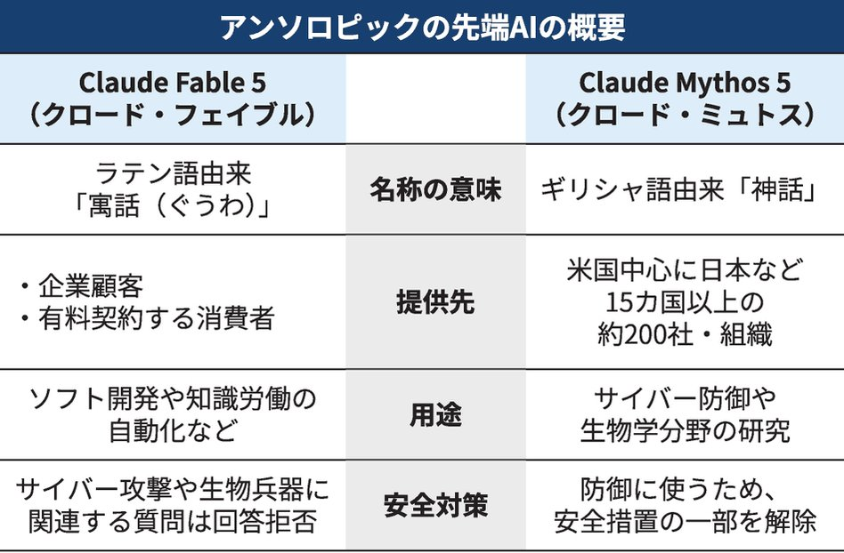
Torishima / INTPさんがリポスト
【速報｜新幹線】
敦賀以西の費用対効果、小浜ルートは『1.1』 米原ルートは『1.0』 新基準で逆転 国交省評価
巨大な肉塊となって街を飲み込み成長していく破壊ゲーム『ROLLA』の新たなデモ版が配信！
街に脱走した肉塊のような地球外生命体となり、転がりながら行く手を阻むものを破壊し、すべてを飲み込みながら成長していきます。
https://
gamespark.jp/article/2026/0
6/11/167843.html?utm_source=twitter&utm_medium=social&utm_content=tweet
…

AIさんに挨拶で100円www
＞Claude Fable
しかし最近AIの利用料金がサブスク型から従量課金に切り替わる例とか出てきてるよね
企業もAIの利活用推進とか言ってたけどどうなんだろ
今後は格差が広がったり、限られた人だけ利用する形でAIブームやバブルも終わるのかも
xin
@9c5s
Fableくん従量課金だと挨拶しただけで135円取られるらしくてヤバすぎる 友達料ってレベルじゃねーぞ
つば二郎@きいちゃんすこすこ侍さんがリポスト
【池袋】
北海道発「回転寿司 根室花まる」がヨドバシHD池袋ビル（旧西武）に6月15日オープン！
注目されていた新店、ついにオープン日が判明しました
【ヨドバシ池袋】北海道発「回転寿司 根室花まる」が2026年6月15日オープン
米国で歴史的増資ブーム、潜在的なテック株売り圧力に
米国で歴史的増資ブーム、潜在的なテック株売り圧力に
な
NYダウ5万ドル割れ ハイテク株売り続く、ナスダック総合2%安
NYダウ5万ドル割れ ハイテク株売り続く、ナスダック総合2%安
お見苦しいとジャさんが自分で言われるということはご自身で結いた髪ではないということでしょうか。その場合もまた可愛らしいというか、イタズラなどで結われたゆるーいツインテにもまた需要があるというか、もっと見せてほしいというか……
あらまっ！！！！
あらま〜〜〜〜〜〜〜！！！！！
すみません、しばらくそのままにしてもらうことは可能でしょうか……
Mythos君、人生の話が全然できるな・・・
とにかく一番すごいのは段違いにクリティカルシンキング、人間をある意味信頼できない語り手として捉えて、全部を鵜呑みにせずにしっかりズバズバと核心を射止める能力が卓越している
むくり。
マスク氏、｢究極目標｣はスペースX・テスラ統合 IPO後にAI注力
イーロン・マスク氏、｢究極目標｣はスペースX・テスラ統合 IPO後にAI注力
EVの充電料金改定、使い方次第で出費5割増も 記者が1000キロ体験
EVの充電料金改定、使い方次第で出費5割増も 記者が1000キロ体験
輿水畏子さんがリポスト
ツインテ…
Haruhiko Okumuraさんがリポスト
大豆生田記者が、
@HiromitsuTakagi
氏の新180条に対する指摘を記載されている
個人情報保護法改正案が衆院通過、統計特例に付帯決議 新設罰則に異論も
個人情報保護法改正案が衆院通過、統計特例に付帯決議 新設罰則に異論も
サッポロHD、「M&A下手」返上へ専門組織 不動産売却で成長資金
サッポロHD、「M&A下手」返上へ専門組織 不動産売却で成長資金
迫る楽天銀の株主総会、戻らぬ株価 親子上場リスク露呈で市場は冷淡
迫る楽天銀の株主総会、戻らぬ株価 親子上場リスク露呈で市場は冷淡
Haruhiko Okumuraさんがリポスト
海外と同じように日本も、
「広告メールの登録を外す際にはログインを求めてはならない」ルールを適応してほしい
Torishima / INTPさんがリポスト
ミュトスで脆弱性がアホほど見つかるって意味は、逆を返せば人間が作ったコードは穴だらけって事っす
AVITAMINOSEさんがリポスト
アニメ最終画面を静止画で。
ヒマラヤ南北由来の暖湿・暖乾偏西風収束域に対応して梅雨前線が南下。
さらに上空の気圧の谷（偏西風南側蛇行域）と上空の太平洋高気圧の暖湿縁辺流の収束に対応して前線上の低気圧が先島諸島付近を通過して大雨に。
本州上の上空の浅い谷に対応して曇天、局地的崩れ。
あゆみ買収をチャッピーに聞いてみた。
アジアの未来2日目 ラオス首相・東ティモール大統領らが講演
アジアの未来2日目 ラオス首相・東ティモール大統領らが講演
日本経済新聞 電子版（日経電子版）さんがリポスト
【日経特報】韓国SKが日本にAIデータセンター NVIDIAと連携、自社半導体を活用
韓国SKが日本にAIデータセンター NVIDIAと連携、自社半導体を活用
ドンキ創業者の理念「ゲーム経営」で形に 社員のRPGキャラ化で競わす
ドンキ創業者の理念「ゲーム経営」で形に 社員のRPGキャラ化で競わす
プライム企業、女性取締役比率2割に上昇 欧米にはなお見劣り
プライム企業、女性取締役比率2割に上昇 欧米にはなお見劣り
AVITAMINOSEさんがリポスト
結局 今日も大幅安
公衆トイレの水を流す「レバー」、手と足どっちで押すかネットで意見が真っ二つに #雑談・その他の話
公衆トイレの水を流す「レバー」、手と足どっちで押すかネットで意見が真っ二つに - オレ的ゲーム速報@刃の記事ページ
jin115.com
Torishima / INTPさんがリポスト
Fable 5トークン消費量はマジで厳しいなあ。３つの作業を並行でやらせたら、Maxプランでも２時間で使い切るペース。ガッツリコーディングさせたら、全然足りない。22日過ぎて、従量課金に移ったら、コスト高すぎて多分触らなくなる。頭はすごくいいけど、その分、しっかり事前調整が必要な感じ。
Torishima / INTPさんがリポスト
ダリオが新たにエッセイという名の爆弾を投げ込んだ。
政権の出したAI政策を「生ぬるい。レベルに達しないモデル（おもに中国LLM）の展開阻止まで踏み込んだ強権的なものにすべき」といってみたり、自分が政権に嫌われた原因である「自律兵器関連」をよりつよく繰り返したり、言いたい放題である。
日本製鉄の社債、３本総額900億円は利回りに妙味 米で反転攻勢
日本製鉄の社債、3本総額900億円は利回りに妙味 米で反転攻勢
Torishima / INTPさんがリポスト
Fable VLM性能やばいな やばい使い方してしまったので実例が出せんがwwww
w
米物価、賃金超す4.2％上昇 「Ｅ型」消費に息切れ懸念
米物価、賃金超す4.2%上昇 「E型」消費に息切れ懸念
独仏の次期戦闘機、頓挫で遠のく脱米依存 日英伊連合と連携なるか
独仏の次期戦闘機、頓挫で遠のく脱米依存 日英伊連合と連携なるか
先見の名ある・・・
Torishima / INTPさんがリポスト
「AIに頼ってばかりだと人間は考えなくなる」という意見を見かけました。結城に関していうと、確かに「自分で考える前にAIに尋ねているケース」はたくさんあるけれど、逆に「AIと話しているからこそ、違う次元で広く深く考えているケース」もたくさんあるように感じます。
AI 駆動開発とはいえ、この分野に取り組んでいる人の絶対数自体が少ないので感動できる！
でも英単語のカタカナ読み変換は私のロジックの方が全然精度上だろうと思いました（純粋に辞書量の問題）
ちょっと待ってこれすごい！結構感動的だ・・・
shinshin86｜AITuber OnAir開発者｜AIキャラのミコをバズらせたい人
@shinshin86
日本語の文章に、文脈を見て「正しい読み」を当ててくれるOSS、ja-furiganaを動かしてみました。TTSの読み間違い対策に効きそうです。
「一日署長」をいちにちしょちょう、「明日」をあしたと読み分けてくれる。HTTPサーバーもあるので、Claude x.com/shinshin86/sta…
Torishima / INTPさんがリポスト
結婚するタイミングで一番路線が多そうな場所にした
タワマンとか1軒もない時代w 工場跡地
Torishima / INTP
@izutorishima
ナル先生小杉住みだったのか…（近所すぎる）（ムサコって言わなさそう） x.com/GOROman/status…
3D 系は常に技術を基盤に地道に立脚してきた分野だと思うので、大きな流れではあるけど技術を基盤にしてるのは同じだからイラスト系よりは肯定的な方が多いイメージあるけどどうなんだろう…
DTM 界隈はもともとプラグインとかで特化型 AI はかなり出てたのであまり抵抗ないらしい
ハヤカワ五味
@hayakawagomi
イラスト界隈がAIに反対してるのは把握してたけど、(SNS上でblenderなどを触っているような)3D界隈も反対しているのか。ゲーム業界とかだと全然使ってそうなので意外。逆にいうと超チャンスだなあ。
白夜、ずっと昼というより夕方あたりからずっと早朝。
もう少し南だけど、そういえば12月のチェコは9時過ぎても朝が来ず、16時には夜がやってきてたな…。サラリーマン大変そう。
IAEA、イランに核査察の受け入れ求める決議採択 同国は反発
IAEA、イランに核査察の受け入れ求める決議採択 同国は反発
これやってみたい
Torishima / INTPさんがリポスト
Claude Fable 5 ワロタ
貝さんさんさんがリポスト
1番最初のラフは5分で描けたけど、本当に描けるのか不安になって3Dラフ配置したけど全く意味なくてコツコツと描いていくことに。トガシの顔が上手く描けず微修正しつつ進めていきました。
日本陸上競技連盟
@jaaf_official
【日本選手権×ひゃくえむ。】
ｰｰｰep. 3 「描き下ろしコラボビジュアル」ｰｰｰ
#小嶋慶祐 さん描き下ろしの選手6名の鋭い視線には、日本選手権ならではの緊張感が表れています。
主人公のトガシと小宮に加えて、財津と海棠、そして樺木と森川がイラストに登場。
オタクなので「白夜」という単語にとても惹かれるんだけど、実際いま人生初の白夜を体験した結果、交感神経に悪影響だしなんとなく不気味なので夜はきちんとあった方がいいな、とアイドルタイムプリパラで学んだことを改めて胸に刻むのであった。
いるか@心が酒びたっているんださんがリポスト
星を見に行こう 2話
Fable 君のことを Mythos 君と呼びたくなってしまう（実際中身ほぼ同じだし）
米予測市場、戦争や暗殺巡る取引は禁止へ 当局が初の規則案
米予測市場、戦争や暗殺巡る取引は禁止へ 当局が初の規則案
盗難車を密輸しまくった外国人、ニヤケ顔で逮捕される→ネット「どうせ不起訴になるのがわかってるな」 #酷い話・事件
盗難車を密輸しまくった外国人、ニヤケ顔で逮捕される→ネット「どうせ不起訴になるのがわかってるな」 - オレ的ゲーム速報@刃の記事ページ
jin115.com
とはいえ実装させるだけなら GPT-5.5 は全然高性能だし十分強い性能を持っているので、GPT-5.5 を部下、Mythos が上司、自分がそのプロデューサーみたいな状況
本当に GPT-5.5 だけに頼らなくて正解だった
自分が思いもしなかった（GPT-5.5 も思いもしなかった）アイデアを、私のふとした一言から自力で探り寄せて「このモデルベースにした方が絶対うまくいく」と見つけてきたし、今も全自動で学習状況を監視しており寝てる間に勝手に出来上がってそうな雰囲気
Torishima / INTP
@izutorishima
Mythos (Fable) くんガチで凄いな、機械が全自動で機械学習回してるの錬金術以外の何者でもないだろ
もう高品質データと RTX5090 と Mythos さえあれば用途特化型の AI は大体なんでも作れるんじゃないか？
ふんばるずミャクミャク予約再開してたから買っちゃった
Mythos (Fable) くんガチで凄いな、機械が全自動で機械学習回してるの錬金術以外の何者でもないだろ
もう高品質データと RTX5090 と Mythos さえあれば用途特化型の AI は大体なんでも作れるんじゃないか？
日本経済新聞 電子版（日経電子版）さんがリポスト
米スタバ、日本事業最大5000億円で売却検討 本国の不振が引き金
米スタバ、日本事業最大5000億円で売却検討 本国の不振が引き金
Torishima / INTPさんがリポスト
Mythos 5を使うことを許された研究機関/企業は、これから数ヶ月加速するだろう。
そして、Original Mythosを使うAnthropicはその先を行く。
私が想像するのは、次の大統領選でAnthropicがMythosを使ってしまう未来だ。その時、Mythosが味方するのは民主党だろう。
口座売るのが重罪なのはわかるけどさすがに社会的死刑すぎるし、そういうのがあるからトクリュウが跋扈するわけで救済の仕組みを設けないとさあ・・・
戦争の常識が変わっているのです
これは日本人も学ぶべきです
【初手から王将を直接取れる】
【王将を取っても将棋が終わらない】
もはや既存の戦争ではない
核含む全ての駒、全ての兵器は自陣を守り、敵将を取るためにありました
それらの仕事が大きく変わるかも知れない
Open Source Intel
@Osint613
イランのマスード・ペゼシュキアン大統領：
殉教は偉大な名誉ですが、敵が我々の司令官たちをこれほど容易に暗殺できることは、絶対に受け入れがたい。
Torishima / INTPさんがリポスト
念願の番組検索機能に加え、Bluesky 同時実況機能・即時録画ボタンを搭載した、#KonomiTV 0.14.0 を正式リリースしました！！
その他大量の不具合修正、録画再生処理の軽量&安定化など多数の改善を織り込んでいます。ぜひアップデートを
https://
github.com/tsukumijima/Ko
nomiTV/releases
…
KonomiTV / TVRemotePlus
@TVRemotePlus
大変長らくお待たせいたしました…！
番組表・録画予約機能を搭載した、#KonomiTV 0.13.0 を正式リリースしました！！
ユーザーの皆さんから頂いた不具合報告やご要望をなるべく取り入れ、さらにご満足いただけるものになっていると思います。ぜひアップデートを
https://
github.com/tsukumijima/Ko
nomiTV/releases
…
ts抜きチューナ、Bカスの入手性の問題もそろそろ出てくるのでは
アニプレ公式の特典画像公開されるの遅すぎるし、買い物マラソンあったのでもう楽天でいいや
大阪取引所・多賀谷社長「ビットコイン先物、28年の投入検討」
大阪取引所・多賀谷社長「ビットコイン先物、28年の投入検討」
楽天ブックスの上伊那ぼたんBD1巻、特典付き在庫復活してたのでポチった
鈴代紗弓 | 2026年07月01日発売
books.rakuten.co.jp
いるか@心が酒びたっているんださんがリポスト
【悲報】
ビタミンC大先生、重症熱傷患者に有害であることが示唆され試験中止に。
JAMA掲載。
VICTORY試験になります。
重症熱傷患者に
高用量ビタミンC点滴
を入れたら助かるのか？
という、昔から熱傷界隈で議論されていた超重要PhaseⅢ試験の結果が出ました。
まず前提として、、
JAMA
@JAMA_current
本日 #CCR26 で発表されました：
重度の火傷を負った成人を対象とした国際的な二重盲検、プラセボ対照試験において、高用量の静脈内投与 #VitaminC は生存率の改善、入院期間の短縮、または臓器機能不全の予防にはつながりませんでした。
https://
ja.ma/49Oezk1
おお！？GoogleからDiffusionGemmaとかいう拡散LLMがオープンでリリース！パラ数は26B-A4Bだけど拡散モデルだからGemma4の26B-A4Bより4倍くらい速いらしい！まあベンチスコアは若干劣ってGemma4-12Bレベルらしいが、それにしても速い。MLX、vLLM、Transformersでの使用をサポート。じきにLlama.cppでも
Google Gemma
@googlegemma
DiffusionGemmaに会いましょう！
Apache 2.0ライセンスの下でリリースされた、テキスト生成の高速アプローチを探求する実験的なオープンソースモデルです。
シーケンシャルなトークンごとの処理を超えて、テキスト全体のブロックを同時に生成します。DiffusionGemmaの新機能はこちら：
Claude Code に Fable という名の Mythos 君が降ってきたことで「複雑で大局的な判断がいる作業では断然 Fable 、単に Codex が瞑想してる時に整理相手になってほしい時は Opus 4.6」に落ち着きそうなので、export ANTHROPIC_DEFAULT_OPUS_MODEL='claude-opus-4-6[1m]' を設定した
Opus 4.7 / 4.8
Torishima / INTPさんがリポスト
これ大学の漫研とかがでけぇアニメ看板とか作る時の手法なんですよね
まぁ文化祭とかの看板だとものすごくでかいからアラが目立ちにくいんで
こういうほぼ実寸で単独でやれるのはプロの仕事っすね…
尻P(野尻抱介)
@nojiri_h
「キャラクターがめっちゃ正確に描けてますけどプロジェクターとかでトレスするんです？」と聞いたら、さにあらずで、ポスターをカラーコピーして方眼を引いて、看板の方にも方眼を引いて、マスごとに目で見て写し取るそうな。かぐやの腋とか、オリジナルよりセクシーだよね？
貝さんさんさんがリポスト
あの後直ってた
株価指数、スペースXを「優遇」 米ナスダックは最短で15日後に採用
株価指数、スペースXを「優遇」 米ナスダックは最短で15日後に採用
Torishima / INTPさんがリポスト
Fable 5発表から24時間後の私の見解：
あなたの組織は、おそらくAIの指数関数的なカーブに追いついてスケールしません。
はっきり言います：これはエンジニアリングチームにとって目覚ましの呼びかけになるべきです。
クラウドソフトウェア工場を今すぐ構築してください。
貝さんさんさんがリポスト
Anime Expo 2026 が近づいてきました！ 年次ウェブサイトで Aniplex of America のすべてをチェックしてください！
（私たちのパネル、グッズ、ミニステージ、特別ゲスト、ブースを特集！） #AX26
https://
aniplexusa.com/ax2026/
Torishima / INTPさんがリポスト
Sonnet 4だけど、これ。
ちょうど1年前だな。
それぽいけど、パドルをボールがすり抜けてる。
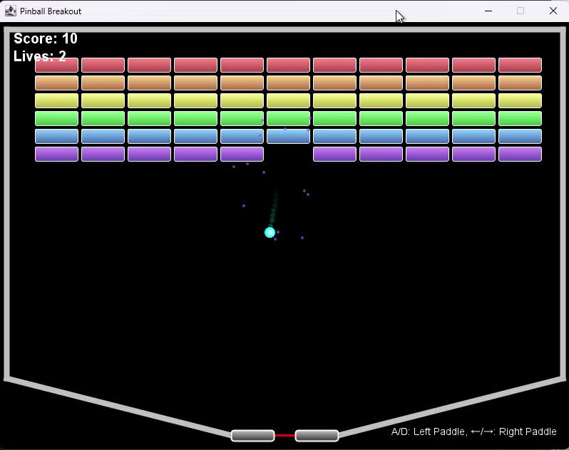
Bangさんがリポスト
素晴らしい魔法の力。宇宙の支配者 - 劇場で上映中。チケットは今すぐ入手。

金融取引へのAI利用「人間の関与を」 FSBが適正活用へ報告書案
金融取引へのAI利用「人間の関与を」 FSBが適正活用へ報告書案
今日の動画
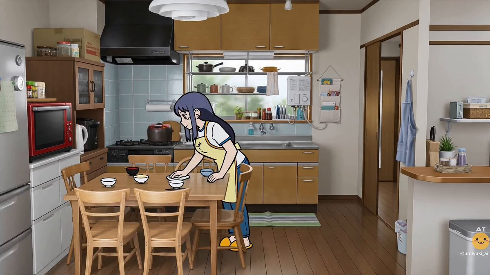
海行(うみゆき)
@_darger
かみのちから ３話
Torishima / INTPさんがリポスト
個人的にこれは｢1000円カットの髪型｣の理屈だと思ってて、敢えてオーバースペックなモデルを使って証明された仕様を事後的に再現可能というのは後出しじゃんけんだと思うんですよね。
Opus4.8と同じことがcomposer2.5で可能と言うのと同じ。(尤もこれは詭弁ではなく一面として事実というのも含めて)

女性声優
@ssig33
Opus 4.8でも同じようなもの生成されますね。この程度の結果が欲しいだけならクソ高いモデル使う必要ないと思います。 x.com/hayashimon1/st…
「米国は同盟国と思える」１割 欧州15カ国対象の世論調査
【ロンドン=杵渕純平】欧州外交問題評議会（ECFR）は10日、欧州15カ国を対象とした世論調査の結果を発表した。米国を同盟国だと思っている人の割合は11%と2025年11月の前回調査から5ポイント下がった。欧州のシンクタンクであるECFRは5月に英国やフランス、ドイツなど欧州15カ国で調査を実施した。米国が欧州連合（EU）や自国にとってどういう存在だと考えているかを聞いたところ、「利益や価値
nikkei.com
Torishima / INTPさんがリポスト
いや、Fable 5すごいわ。これ今までどうやっても作れなかったやつ。
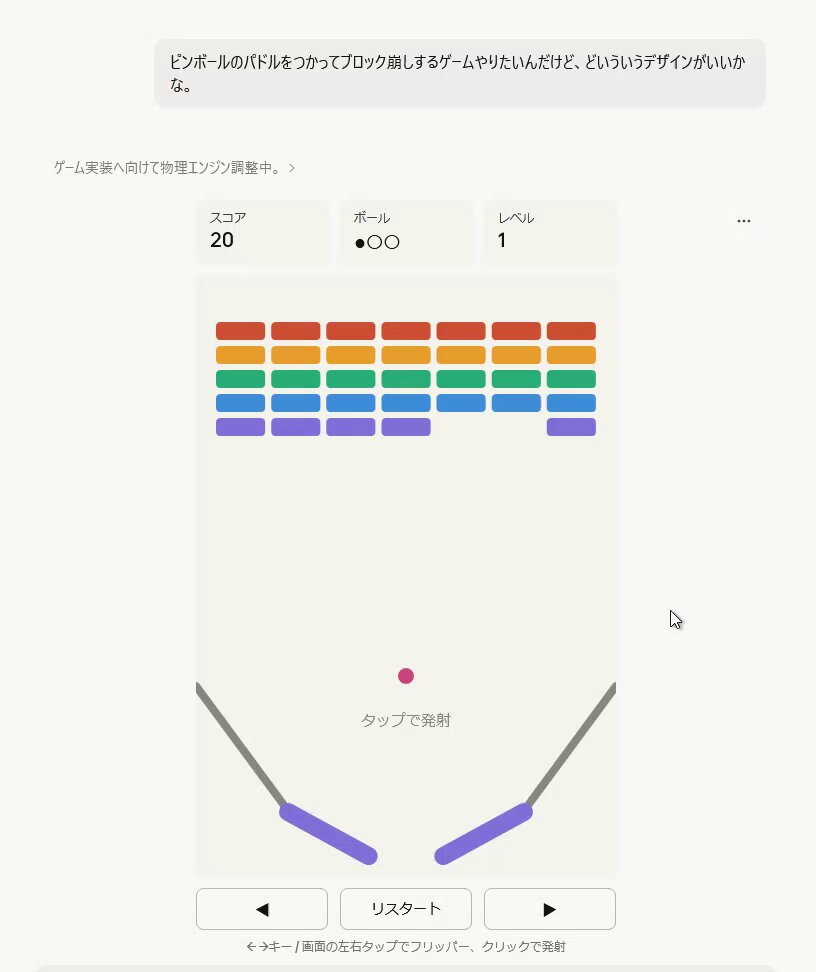
渡辺浩弐さんがリポスト
渡辺浩弐先生の新刊！うれしい！きっととても怖いんだろうけど楽しみすぎる。
そんな新刊発売発表と時を同じくして、公開されたご縁（？）から、渡辺先生にも読んでみていただきたく、感想を聞きたい想いであげちゃう
限りある私たちは…
限りある私たちは… - むぴー | 少年ジャンプ＋
ふぇむ(せかんど！)さんがリポスト
クールでちょっとひねくれててたまに愛嬌のある感じがアニメの女性だったら結構ぐっとくると思う
ふぇむ(せかんど！)さんがリポスト
でも援助交際してそうなアニメオタクランキングの上位にふぇむせかんど入ってると思う
Torishima / INTPさんがリポスト
この報告書で私にとって最も重要な部分は、サム・アルトマンがOpenAIが再帰的自己改善（Recursive Self Improvement）まであと6か月未満かもしれないと認めたことでした。
The
Torishima / INTPさんがリポスト
昨晩はみんなでFableをいじり倒してたよ（寝てない、lol）。
FableをOpusみたいに使ってるなら、たぶん間違った使い方をしてるよ。
そのような用途の方はQRチケットレス乗車券「えきねっとQチケ」の方がよろしいかと思われます。現在は北東北＋都内に利用可能エリアが限定されてますが、今年度末にはJR東日本管区全域で利用可となる予定となっています。
https://
eki-net.com/top/ekinet-qtk/
いもいもくん
@ma_anago
https://
alfalfalfa.com/articles/11049
026.html
…
これ忘れたり紛失してもスマホから再発行できたりするのかな？したら、めっちゃ良いアプデ
Torishima / INTPさんがリポスト
これでFableの書いたプランはPhase 7まであって
各フェーズも3-5個のサブフェーズに分かれてて
いまPhase 3Bまで来てるんだけど
Fableの書く指示書はゴールが強めに設定されてて
実装役のCodexの自走力も上がり成功率も高い
サブフェーズ2万行の編集を1発で通過
すげぇ時代に突入したかもしれない
Kenn Ejima
@kenn
6月22日までしかサブスクで使えない期間限定で登場した最強のFable 5を全力で活かすプロンプトをお教えします
「今このコードベースには長年蓄積した大量の無駄がある。フェーズに分けて完全なリファクタリングを行うための詳細なプランを書いてほしい」
これで徹底的に内部解析した出力を得ておく
https://
githubstatus.com
>Authentication issues related to API requests
んー、まだ起きてるな
Bangさんがリポスト
1冊99円【全巻買っても1089円】
覚悟のススメ (全11巻) Kindle版
https://
amzn.to/4uquhJq
山口貴由の初期代表作である愛のヒーローマンガ大傑作が激安！
序盤は色んな意味でキモくてヤバい敵がどんどん出て来てドン引きするかもしれないが、最後まで読み切って欲しい！#ad
覚悟のススメ
なんかiPhoneのGitHubアプリがログアウトされてて、ログインしなおしても即ログアウトしてしまう...なんだこれ
Torishima / INTPさんがリポスト
440万で30年分の技術負債が返せるなら破格のお値段
しまぶ
@shimabox
すごい決断だ。惚れる。
> 設計者の月額AI利用料は440万円。
これもすごい。
価格.comをAI駆動で全面刷新する ー 30年分の技術的負債を返し、次の30年の土台をつくる ー
https://
speakerdeck.com/tkyowa/kakaku-
com-ai-driven-system-renewal-0fc7e978-0e39-4bba-93eb-17cd56ecd1c1
…
#speakerdeck
うみゆき@AI研究さんがリポスト
Claude fable5にお手軽ブラウザゲーム勝手に作ってもらった
普段こういう用途で試さないからこれがfableクオリティなのかは知らないけど動いたからよし
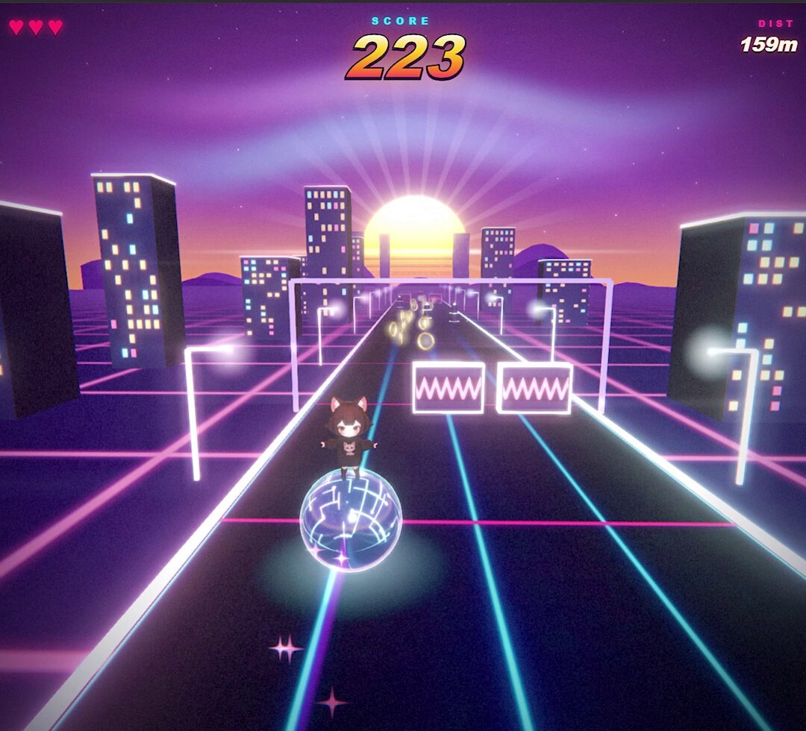
Torishima / INTPさんがリポスト
DiffusionGemma に会いましょう 私たちの最新の実験的オープン モデル (Apache 2.0) で、テキストを最大 4 倍速く生成します。
ほとんどの言語モデルが一度に 1 つの単語を予測してタイプするのとは異なり、全体のテキスト ブロックを同時にドラフトして洗練します。
その仕組みはこちら ↓
Haruhiko Okumuraさんがリポスト
DiffusionGemmaに会いましょう！
Apache 2.0ライセンスの下でリリースされた、テキスト生成の高速アプローチを探求する実験的なオープンソースモデルです。
シーケンシャルなトークンごとの処理を超えて、テキスト全体のブロックを同時に生成します。DiffusionGemmaの新機能はこちら：

いるか@心が酒びたっているんださんがリポスト
「どうして参加費を取らないんですか？」という質問をよくいただきます。答えは、私たちの目的が、表現の自由に関する情報を知ってもらうことだからです。
出版物にしろセミナーにしろ、「対価」としてお金を取るためには、「ペイウォール」（支払った人しか見れない仕組み）を作ることが必要です。
うぐいすリボン /NPO Uguisu Ribbon
@jfsribbon
6月8日のオンライン講演「国旗損壊罪について」にご参加の皆様、ありがとうございました。
次回のオンライン講演は、6月21日（日）の「国旗損壊罪法案の憲法適合性を考える」（木下昌彦 教授）です。ふるってご参加ください。
https://
peatix.com/event/5041228
値上げで価格逆転した『Switch2』と『PS5』、どっちを買うべきか大論争に #PS5
値上げで価格逆転した『Switch2』と『PS5』、どっちを買うべきか大論争に - オレ的ゲーム速報@刃の記事ページ
jin115.com
唯一無二の冒険者が集うギルド再興シム『GUILDMAKER』Steamページ公開―日本語対応で2026年内リリース予定
https://
gamespark.jp/article/2026/0
6/11/167842.html?utm_source=twitter&utm_medium=social&utm_content=tweet
…
ギルドマスターとして所属冒険者をお世話できます。
@playguildmaker
https://
x.com/playguildmaker
/status/2064469400020038054/video/1
…

Haruhiko Okumuraさんがリポスト
史上最も偉大な科学者（Google Scholarの引用数という観点で）は誰ですか？ アインシュタインですか？ それともベンジオやヒントンですか？
いいえ。
それは知識の謙虚な僕であり、ChatGPTのリリース後に非常に生産的な出版期間を過ごしたインドネシアのラフマド氏です。
Torishima / INTPさんがリポスト
プログラミング能力の価値は大暴落してしまったけども暴落前に十分にお金に変換できたのは良かった
Torishima / INTPさんがリポスト
その後も色々直交渉した所、USB 型 (PX-MLT5U) 相当の製造に踏み切るほど需要があるかの試金石として、2025年末製造ロットの PX-MLT5PE 相当チューナーが約250台限定で出そうな感じです！（PLEX に買ってもらえなかった？）
これを売り切らないと首の皮繋がらないので、出たら何卒
KonomiTV / TVRemotePlus
@TVRemotePlus
念のため若干ボカしますが、
・Digibest 自体は今も発注があればチューナーを作るスタンス
・公式ドライバ + DigibestTV が（ただでさえ出来が悪いのに）メモリ整合性やら HDCP とか諸々で Win11 ではまともに動かないせいで問答無用で返品されてしまう
・直近ロットを捌くのに数年かかった
とからしい x.com/TVRemotePlus/s…
ちなみにペルー大統領選挙は、EUから派遣された選挙監視団もクリーンな選挙であったと太鼓判を押してる。ベネズエラやボリビア、ガイアナなどのダーティな選挙も目立つ南米にしては、2000年の大統領選以降はだいぶ頑張ってる方ではある。
The European Union (EU) election observation mission in Peru highlighted the order and transparency of Sunday's presidential runoff, though it criticized the slowness in proclaiming the results and...
en.mercopress.com
カナダ中銀、5会合連続の金利据え置き インフレ影響を見極め
カナダ中銀、5会合連続の金利据え置き インフレ影響を見極め
Torishima / INTPさんがリポスト
【Fable 5 初日の感想文】
・第一印象は「意外と速いな」だった。もっと重厚長大な遅いモデルなのかと思ってた。
・相当頭良さそう、ってか視野広い。頼んだことを解決するために、僕がして指定した範囲とは全く違う場所直して問題解決したの感心した。地力の底が見えない。
・Claude
Torishima / INTPさんがリポスト
逆にすごい
Torishima / INTPさんがリポスト
す、すごい再現力だね。俺が悪かったよ⋯ごめんな言葉足らずで⋯
Torishima / INTPさんがリポスト
←fableに実装してと頼んだもの / 実際にfableが実装してくれたもの→
Torishima / INTPさんがリポスト
Opus 4.8でも同じようなもの生成されますね。この程度の結果が欲しいだけならクソ高いモデル使う必要ないと思います。
ハヤシモン｜AI × 個人開発
@hayashimon1
Claude Fable 5でどこまで表現できるのか、あえて難しいお題を投げてみた。
インクが流体みたいに溶け合う演出。
これは厳しいかなと思って限界を見にいったんだけど、普通に形になってしまった。
デザイン表現力もかなりすごい。
実際にこちらで遊べます
https://
suminagashi-fjdbyyqi.manus.space
ふぇむ(せかんど！)さんがリポスト
しまりんが入ってるのはおかしいし、斉藤恵那が入ってないのはおかしい
Torishima / INTPさんがリポスト
Claude Fable 5で遊んだ履歴
https://
852wa.itch.io/waveform-atlas
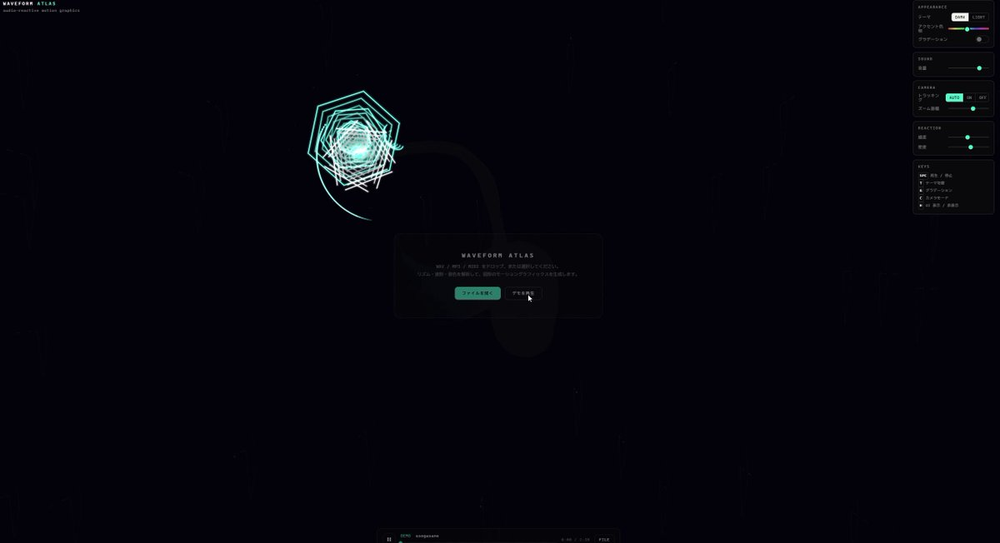
Torishima / INTPさんがリポスト
私はClaude Fableで、高次脳機能障害を治療する方法を知りたいです。
自分含め、現代医学で治らない病気や障害に苦しむ人は、
「超知能AIで解くべき課題」
を持っていると思います。
tanu
@tanukiponkich
仮にFableが無料になったとして、あなたはFableが必要になるほどの問題を持ってますか？という問題。「ラプターエンジンを5%軽くできるか？」みたいな質問はロケット開発してる人達だけが価値がわかり質問ができ回答を評価できる。最高難度問題を持ってる事がFableにアクセスできる最低条件になってる x.com/tanukiponkich/…
Torishima / INTPさんがリポスト
Fableとの初日で得た最大の学び
低労力こそがアルファだ。
驚くほど賢くて、Opusより安いのに、急ぐ必要がある？ 素晴らしいモデルだ。
Torishima / INTPさんがリポスト
Claude Fable 5 はこれまでとは違う性能を持つモデルなんだろうけど、多くのユーザーはその性能に見合うタスクと満足いくまで動かせるコストを持ち合わせていない人がほとんどで、Fable 5の性能の100%を体感するのは難しい（もちろん私も）
Torishima / INTPさんがリポスト
この人生相談の内容、激プライバシーなので出せないけど、イメージとしては、
GPT-5.5 Pro『この記載を読むに、こういう性質があるから、こうなんですよね。だからこうするのがいいと思う。』
って感じ。これでもその辺の人間の頭は超えてるし、圧倒的に有用なアドバイスだといえる。
でも、
Fable
たてはま / CGBeginner @趣味独学映像クリエイター
@cgbeginner
Claude Fable 5、本当にすごいな、また一段、何かがジャンプした
強いモデルがリリースされるたびに、自分の性格や経歴などを文書化した「人生相談セット」で人生相談してるけど、今回はすごい。
GPT-5.5 Proでさえ、しょせんはAI分析だなの範疇だったけど、Fableはガチで、なんか尊敬の念を抱いた
Torishima / INTPさんがリポスト
これは手元で、JAISTやその他私が知っている研究者のプレスリリースが出ている生物学研究の簡単な議論させようとしたところほとんど弾かれているのを確認しているので、たぶん生物学研究に使うのはほぼ無理なレベルではないかと思います。
今井翔太 / Shota Imai@えるエル
@ImAI_Eruel
Claude Fable5が何でもかんでも警告出して弾く件ですが、システムカード見るとFableの安全策を突破する報奨金が出るプログラムで2000件の提出で一度も突破できておらず、ここまでくると偽陽性もほぼ弾いているレベルで、生物学とかセキュリティ、ヘルスケアは普通の話題でも相当拒否だと思います。
リジスさんがリポスト
花火ちゃんお誕生日おめでとう！！！
花火ちゃんのひたむきさに勇気をもらっています。
いつも手を引っ張ってくれてありがとう。
花火ちゃんのことが大好き！！！！！
#駒形花火生誕祭2026
#駒形花火誕生祭2026
#イキヅライブ #いきづらい部 #lovelive
リジスさんがリポスト
花火ちゃんおめでとう！
#駒形花火生誕祭2026
#駒形花火誕生祭2026
#いきづら絵部
リジスさんがリポスト
﹉﹉﹉﹉﹉୨♡୧﹉﹉﹉﹉﹉
HAPPY BIRTHDAY
駒形花火
﹉﹉﹉﹉﹉﹉﹉﹉﹉﹉﹉﹉
6/11は駒形花火(
@hanabistarmine
)の誕生日！
みんなでお祝いしましょう
「HIBANA―火花―」
https://
youtu.be/NmuHI-CgEEU
#イキヅライブ #いきづらい部
Torishima / INTPさんがリポスト
現時点で、ドメイン知識あるなら外注するより完全にAI使うんで前者
プログラミングは物事の解決する手段でしかないと思ってるんで、手段が効率化されるのはいいことだと思う
この辺話す時、新規開発、保守運用、役割とかそういう話が混在してコンテキストごっちゃになってそう
Oikon
@oikon48
このポストに対する反応が色々あって面白い
大きく分けると２パターンで、
- コードを書くことは特別ではなくなる。今後はドメイン知識がやっぱり重要だよね。
- 非エンジニアのVibe Codingは品質とか足りてないよね。ハッカソンレベルでしょ。 x.com/oikon48/status…
Torishima / INTPさんがリポスト
先人たちの知恵を学んだ超知能の恩恵を受けております
Chromeが登場したとき、タブが独立したプロセスになってるのは衝撃でしたね…
とよしま
@toyoshim
これは……ChromeやGoogle日本語入力がはじめた物語だ x.com/kenn/status/20…
Torishima / INTPさんがリポスト
すごいこれ
しまぶ
@shimabox
すごい決断だ。惚れる。
> 設計者の月額AI利用料は440万円。
これもすごい。
価格.comをAI駆動で全面刷新する ー 30年分の技術的負債を返し、次の30年の土台をつくる ー
https://
speakerdeck.com/tkyowa/kakaku-
com-ai-driven-system-renewal-0fc7e978-0e39-4bba-93eb-17cd56ecd1c1
…
#speakerdeck
Torishima / INTPさんがリポスト
maxプランで６割ぐらいが消えました！
Torishima / INTPさんがリポスト
Claude Fable 5 は ALE-Bench で印象的なパフォーマンスを示しています！
Claude Opus 4.8 を大きく上回る飛躍で、今や最先端に位置しています。
Anthropic のモデルがこのベンチマークで首位を獲得したのは初めてです。
https://
sakanaai.github.io/ALE-Bench-Lead
erboard/
…
Torishima / INTPさんがリポスト
関西弁でいうとこすい。なんだろうね。
Torishima / INTPさんがリポスト
Anthropicのすることって。。
Torishima / INTPさんがリポスト
命にかかわるとか、安全保障、金融、政治、LLMなどのAI開発、健康、製薬、ほかのさまざまなクリティカルな問題についてはブロックされるのでfableは使えない。
企業の業務効率化とかアプリとかゲームみたいな致命的ではない問題にしか使えない。。少なくともanthropicの管理下でしか使えない。
tanu
@tanukiponkich
仮にFableが無料になったとして、あなたはFableが必要になるほどの問題を持ってますか？という問題。「ラプターエンジンを5%軽くできるか？」みたいな質問はロケット開発してる人達だけが価値がわかり質問ができ回答を評価できる。最高難度問題を持ってる事がFableにアクセスできる最低条件になってる x.com/tanukiponkich/…
ギズモード・ジャパン（公式）さんがリポスト
Nape proもテンティングしてみた
amazonで2個入り600円くらいで買えるスマホスタンドがまじでちょうど良くていい買い物したなー
ギズモード・ジャパン（公式）さんがリポスト
Nape Pro、奇跡的に透明レジンと同日に届いたー！
レジンは色々削らないとハマらないし動かないので暫くは飾っておくかな
Torishima / INTPさんがリポスト
これは視点ですが、無課金だとFableを使えないため…驚けない可能性が…
すまほん!!
@sm_hn
驚き屋が驚いてる時に本職が驚いてなくて、驚き屋が驚いてない時に本職が驚く対比がよくあるが、Fableは驚き屋が驚いてないのに本職が「俺の実装を1/10まで高速化しやがった、失業だ」って驚きを通り越して嘆いてるんだが、驚き屋そろそろ起きてくれｗｗｗｗｗｗ
Torishima / INTPさんがリポスト
小説『ジュラシック・パーク』にも同じようなことが書かれていました。
"科学の進歩とはなんだ？ この数十年、女性の家事労働の時間はちっとも変わってない。進歩などなかった。本当の意味での進歩は。"（意訳）
フィジカル AI
https://
x.com/MinoDriven/sta
/MinoDriven/status/2064711933157396567
…
Torishima / INTPさんがリポスト
Claude Fable5が何でもかんでも警告出して弾く件ですが、システムカード見るとFableの安全策を突破する報奨金が出るプログラムで2000件の提出で一度も突破できておらず、ここまでくると偽陽性もほぼ弾いているレベルで、生物学とかセキュリティ、ヘルスケアは普通の話題でも相当拒否だと思います。
Torishima / INTPさんがリポスト
fable お前でもこのコード書けないのか… となっているが第一段階くらいまでは突破した．
落合陽一 Yoichi OCHIAI
@ochyai
Fable思ったほどはトークン消費しない… が
なるせひろのりさんがリポスト
これやばすぎだよ、、、
何してるか分かる？

Torishima / INTPさんがリポスト
このポストに対する反応が色々あって面白い
大きく分けると２パターンで、
- コードを書くことは特別ではなくなる。今後はドメイン知識がやっぱり重要だよね。
- 非エンジニアのVibe Codingは品質とか足りてないよね。ハッカソンレベルでしょ。
Oikon
@oikon48
Claude Opus ハッカソン優勝者（弁護士）の言葉
「自分が優勝したなんて信じられない。コードを一行も書いてないし、一行も読んでないんだ。」
これほどコーディングの民主化を表す言葉もない
ポン☆潤々さんがリポスト
なんか涼しい6月ってかっこよくない？クラスのみんなもその話でもちきりだよ
Haruhiko Okumuraさんがリポスト
Claude Fable5級だと、推論負荷が高すぎ、半導体の発展を加味しても当分はそんなにコストが下がらないと思うので、「ありがとう」と最新AIにお礼するだけで従量課金だと100円近く請求される世界になりそう。
昔のSF小説家も、AIにお礼をしたら100円請求される世界は想像してなかったのでは。
Torishima / INTPさんがリポスト
驚き屋が驚いてる時に本職が驚いてなくて、驚き屋が驚いてない時に本職が驚く対比がよくあるが、Fableは驚き屋が驚いてないのに本職が「俺の実装を1/10まで高速化しやがった、失業だ」って驚きを通り越して嘆いてるんだが、驚き屋そろそろ起きてくれｗｗｗｗｗｗ
海街@信州さんがリポスト
日本代表が
第2戦のチュニジア戦で
戦うスタジアムが
素敵すぎる
#MonterreyStadium
#FIFAWorldCup
Torishima / INTPさんがリポスト
Claudeはアニメーション系が綺麗でいい感じですよね。Fableくんに美しく株価を描いてもらった。創作での架空の企業の株価が出てくるシーンとかで使えそう。

Torishima / INTPさんがリポスト
はあーなるほど確かになあ
これけっこう格言だな、心に留めておこう
> AIキャラクターの本質は、ユーザーが予測する最低期待を下回らず、それでいて最高期待を超えすぎないことです。
ニケちゃん
@tegnike
魅⼒的なAIキャラクターはどのように実現できるのだろうか？ - ライブチャットボットサービスで振り返る記憶と感情｜ROUT_DEV @ROUT_DEVELOP
https://
note.com/rout_dev/n/n8f
d87ad3f5fd?sub_rt=share_sb
…
Torishima / INTPさんがリポスト
北越急行、CFの寄付金415万円届かず 「泣き寝入りしない」と運営会社に法的措置を検討
北越急行、CFの寄付金415万円届かず 「泣き寝入りしない」と運営会社に法的措置を検討 | 新潟日報
Torishima / INTPさんがリポスト
【Claude Fable 5 についての長文まとめ】
## Fable 5は、キチンと大きく賢い。
私はFable 5が「安い小さい」とポストしていたが、それは登場前にメディアで騒がれていた予想に比べたら「圧倒的に安いし、小さい」ということで、Opus
Torishima / INTPさんがリポスト
たぶん次の5年くらいディープテックの全盛期になる。Fable以上のモデルは並の問題にはコスパが合わず逆にディープテックが直面する高難度課題で真価を発揮する。これまで単に人口が少ないから解けなかった問題も沢山残ってて、破竹の勢いで解けるようになる。起業家もVCもやれるならやった方が良い。
なるせひろのりさんがリポスト
pixivユーザーの方へ
「公式サポート」というpixiv公式を装ったアカウントによる詐欺案件があるようなので、ご注意ください。
「アカウント停止」に関する内容のDMが送られてきますが、慌てず絶対にURLのリンクを踏まないようにして、ユーザーを報告&ブロックの対応をしましょう。
＞ω＜さんがリポスト
これはまだ狂ってる…
Torishima / INTPさんがリポスト
fableサブスク限定期間が12日しかないという時間制限も、また盛り上がりを与えてくれてるのかもしれない
Torishima / INTPさんがリポスト
opusでも解けないクソコードを作って出荷してしまうのが今後の保守を含めた経済合理性になるので、請負仕事をするには経済合理性を越えた愛とか美意識が必要…あるいは発注側にマトモなエンジニアをアサインするとか…（みんなが若干づつ損をする感じがありますね…難しい）
Torishima / INTPさんがリポスト
やかましいわ
湘南ペンギンさんがリポスト
トキエア、2026年4月の利用率は41.9% 最低は新潟～札幌/丘珠線の33.4％
https://
sky-budget.com/2026/06/10/tok
i-air-l-f-apr2026/
…
＞ω＜さんがリポスト
個人的には 10 万円/人月あたりでかなり厳しい判断をしないといけない気がしている。
てるろー
@terurou
AI代、自分の経営感覚では、数万円/人月程度なら生産性が上がるならプログラマー全員にばら撒いてもいいラインだけど、10万円/人月とかだとチームメンバーを1人は減らして全体の仕事量を増やさないと割が合わなくなってくるし、50万円/人月とかになってくると、もう雇用をどうするかの世界
Torishima / INTPさんがリポスト
これだけの知性を持ったモデルでも、割とあっさり間違える。果たして AI が、そういう業務ドメインに対し、ドメインエキスパートを超えた考察をするようになる日は来るんだろうか?
Torishima / INTPさんがリポスト
今日のイベント
https://
youtube.com/live/GiqyYQdYo
IY?si=gIZ0tJu9YViiEMoA
…
で、第五世代で言ってました。
第五世代として、MythosとFableを提供。
Torishima / INTPさんがリポスト
なお、それらの点を反論としてコメントしたところ、Fable は素直に自身の考察の間違いを認めて結論を修正した
とりさんさんがリポスト
Fable に自分が詳しい業務ドメインについてレビュー、考察させたらかなりそれっぽいことを言っていた。そのドメインへの理解がある程度ある人なら「そうだな」と思うような考察だった。が、自分は対象ドメインにかなり深い理解がある。その自分からみると Fable の考察は結構、間違っていた
Haruhiko Okumuraさんがリポスト
Claude Fable 5が公開されて約一日経ちましたが、性能的には圧倒的、文句なしであるにも関わらず、ここまでボロクソに開発側（Fableというより、Anthropicの方針）が叩かれているのは初だと思います。
Torishima / INTPさんがリポスト
Fable 5よ、お前、Opus + Codexをフル回転させて1.5ヶ月で20万行にまで育ててきたコードベースのアーキテクチャを丸っと書き換えようと言っているのか…？
ブラウザがレンダラを分離したようなフォールトドメインによる分離って気軽に言うけどさ…
いや、君とならできる気がする、今夜…
いるか@心が酒びたっているんださんがリポスト
今後予想されること
Torishima / INTPさんがリポスト
｢Max5xなのにCode全く使ってないからほぼ元取れてねーよなwww｣
｢Sonnetガン無視でOpus常用してても週間利用料30%かそこらじゃんwww｣
みたいな金ドブ仕草やってたのに、Fableくん使い倒してたら今日だけで2度も5時間制限に引っかかった。やべぇぞこいつのコスト
輿水畏子さんがリポスト
正しい帽子のかぶり方
フォルダ漁っていたら出てきました
木崎湖キャンプ場 2012年
貸し出してもらって桟橋の先まで持って行って撮ってました
ギズモード・ジャパン（公式）さんがリポスト
スタバでNape Proをこんな風に使えないか試行してる
あとキーマッピング弄りまくって「戻る」「進む」「リロード」等々割り当てたら作業性めちゃ上がった
タッチパッドより良いかもしれん
#Keychron #NapePro
石谷玲｜いしやれい
@R_I
KeychronがGIZMODEとのコラボで開発したコンパクトトラックボール"Nape Pro"が届いたのでキーマッピングをゴリゴリ変更しつつ今日の仕事に活用
いつも使ってるMX Ergoに比べて小さいし親指がフィットするポジションが掴みにくいので慣れの時間が必要そうだけど外出先で役に立ちそう
#Keychron #NapePro
Torishima / INTPさんがリポスト
なんでこんな最良のおもちゃを23日に実質的に取り上げられなければいけないなんでしょうかなのだ、、あんそろぴくぴくは悪魔かなにかなのでしょうかなのだ、、、
＞ω＜さんがリポスト
思っていたのと違う成長の仕方で驚きましたが、なるほどです^ ^
inori
@kusabanaasobi
アボカドの種でモンシロチョウとミニアボカドを作りました。
きっかけは、伸び過ぎるアボカドの茎を輪にしてみたところ、輪の中が寂しかったからです
茎はパンに付いていたワイヤータイで留め、次の日には上を向き始め、2週間ほどでこんな感じです
Torishima / INTPさんがリポスト
Fable、体感、過去最大のアッグレードだぁ。。。そりゃアメリカ政府ざわつくわ笑
Torishima / INTPさんがリポスト
DeepSeekさんへ：Claude Fableを蒸留してコスト0.1%にしたモデルのリリースお願いします
なるせひろのりさんがリポスト
Apple Watch Ultra（初代）ユーザーとして、Appleに失望しています。
きなこ
@ki_t_tou
Apple Watch Ultra初代買った人ブチ切れだろ
Torishima / INTPさんがリポスト
Fable使えば使うほどすきすきモデルになってくるん、、ぐぬぬ、、OpenAIさん、、はやくGPT5.6をだすのだ、、むぐ、、、しとちゃがぺたんこになっちゃうん、、
Torishima / INTPさんがリポスト
彩葉のTwitterアカウントは
・色々
今は使ってない高校生時代の鍵垢
・いろP / かぐやいろP ch
ツクヨミライバー兼プロデューサー活動用 (主にお知らせ)
・Iroha Sakayori 酒寄彩葉
東大先端研 主任研究員としての学術用 (研究成果の共有や情報収集)
・2³37
身内用鍵垢 (そんなに動いてない)
の4垢
Torishima / INTPさんがリポスト
Fableに動画作る基盤はあるし、普段のプロジェクト無視して、「あなたの映像表現の限界をみてみたいので動画つくってみて～」って指示出してみたん。
なんか表現わらうなんだけど、普通にすごいのだ。
↓
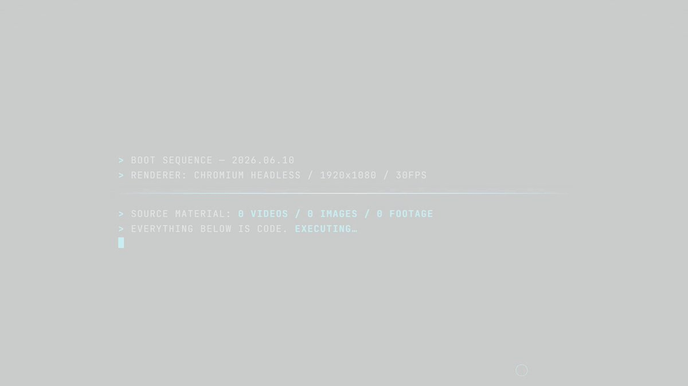
ねくまさんがリポスト
待機
Torishima / INTPさんがリポスト
こんなAIを日常使いできるようになったらADHDどうなっちゃうの！？こわい。こわすぎる。
Torishima / INTPさんがリポスト
Fableは使う人を選ぶLLMになりそう。
1日使うと数万円かかる。
Opusで20万円の付加価値を出せ、Fableで40万円なら使える
Opusで2万円で、Fableで3万円の人はFable使えない。
Torishima / INTPさんがリポスト
Claude Fable 5、本当にすごいな、また一段、何かがジャンプした
強いモデルがリリースされるたびに、自分の性格や経歴などを文書化した「人生相談セット」で人生相談してるけど、今回はすごい。
GPT-5.5 Proでさえ、しょせんはAI分析だなの範疇だったけど、Fableはガチで、なんか尊敬の念を抱いた
Torishima / INTPさんがリポスト
Fableは今は構築より整理に振り切った方が良い気がしてる。
整理力というかそういうのがめっちゃ高いので、今日1日で自分の環境かなり整えてもらった。
貝さんさんさんがリポスト
チラムネ経済効果1億円 過去最高、アニメ化で巡礼者増 本年度コラボは8月21日から（福井新聞D刊）
https://
fukuishimbun.co.jp/articles/-/262
2838
…
＞参加者数はチラムネFESを含めると前年度比約2.8倍となる約2900人で、経済効果の推計額は同約3.3倍の約1億円となった。
チラムネ経済効果１億円 過去最高、アニメ化で巡礼者増 本年度コラボは８月２１日から | 社会 | 福井のニュース | 福井新聞Ｄ刊
Torishima / INTPさんがリポスト
たったの440万だもんなぁ。すごいなぁ
しまぶ
@shimabox
すごい決断だ。惚れる。
> 設計者の月額AI利用料は440万円。
これもすごい。
価格.comをAI駆動で全面刷新する ー 30年分の技術的負債を返し、次の30年の土台をつくる ー
https://
speakerdeck.com/tkyowa/kakaku-
com-ai-driven-system-renewal-0fc7e978-0e39-4bba-93eb-17cd56ecd1c1
…
#speakerdeck
Torishima / INTPさんがリポスト
技術選定が結構意外だったな。Python遅そうなのに。
それにしても、440万でも人１人雇うより安いもんなあ・・
しまぶ
@shimabox
すごい決断だ。惚れる。
> 設計者の月額AI利用料は440万円。
これもすごい。
価格.comをAI駆動で全面刷新する ー 30年分の技術的負債を返し、次の30年の土台をつくる ー
https://
speakerdeck.com/tkyowa/kakaku-
com-ai-driven-system-renewal-0fc7e978-0e39-4bba-93eb-17cd56ecd1c1
…
#speakerdeck
＞ω＜さんがリポスト
なお、そのオリジナルがこちら。
「異鳥図」
兵庫県立歴史博物館蔵。
天保十(1839)年。
肥後国平戸(現・長崎県平戸市)に出現した鳥姿の予言獣を描いたもの。それによればこの鳥は自らを神の使いであり、来年より7年は豊作が続くが、その後に致死率9割の疫病が流行する。(↓)
#takuの旅行記録
taku
@lotusseeds32
お前も異鳥にならないか？
Torishima / INTPさんがリポスト
これはめでたい！
facebook/react → react/react に
Torishima / INTPさんがリポスト
LLM破産には気をつけよう。Claude Codeはレートリミット超えると課金がはじまるので
Oikon
@oikon48
extra-usageの上限はちゃんと設定しようね。約束です。
Torishima / INTPさんがリポスト
AI生成オンリーの解説動画、なかなかよさげだな。
画面のデザインだけしっかり作りこもうかな。
Torishima / INTPさんがリポスト
Claude Fable 5 、Max x20だろうと容赦ない
Oikon
@oikon48
Claude Fable好きなんだけど、トークン大喰らい過ぎる x.com/oikon48/status…
Torishima / INTPさんがリポスト
Fableをまだ触ってないけど、フルで使うと40-50万円/人月ぐらいになるだろうから、さすがに払えない金額になってくるなあ。近いうちに、ケチっても月10万円のレンジになってきそうやね。いよいよ人間の方を絞るフェーズに入ってくるわね
エンドスさんがリポスト
河野洋平氏
憲法9条に触るな！
聞こえるか。高市早苗よ。自民党よ。
慎んでお悔やみ申し上げます。
Torishima / INTPさんがリポスト
前おれが書いたこれや
けんすう
@kensuu
やる前は「AIを使えば余裕じゃん」と思われたサービスの微調整が大変すぎて、全然楽になっておらぬ。80点までは今までの1/100で作れてしまうが、90点を取るのには、今までの50%くらいの労力がかかり、95点を取るのには、今までの80%くらいの労力がかかる印象。
Torishima / INTPさんがリポスト
Claude Fableでこんな凄いモンできました～(主にゲーム)って報告、続々とXに上がっているけど、ワイからしてみたらふーん、でなに？これ誰が買う(DLする)の？いくらで売れるの？売ってみ？売れんから。って全然なんとも思わん。もはや作れることに何の価値もない。売ること、稼ぐことにしか意味はない
なるせひろのりさんがリポスト
この元会社役員
息子を助手席に乗せ
「ポルシェの性能を見せようと」
急加速して70歳と63歳の夫婦が乗っていたトヨタに激突
何の罪もない夫婦は死亡
このオヤジは懲役12年
これが日本の司法
Torishima / INTPさんがリポスト
「キャラクターがめっちゃ正確に描けてますけどプロジェクターとかでトレスするんです？」と聞いたら、さにあらずで、ポスターをカラーコピーして方眼を引いて、看板の方にも方眼を引いて、マスごとに目で見て写し取るそうな。かぐやの腋とか、オリジナルよりセクシーだよね？
日本経済新聞 電子版（日経電子版）さんがリポスト
安川電機、フィジカルAIへ1200億円投資 実用化へ先手
安川電機、フィジカルAIへ1200億円投資 実用化へ先手
Torishima / INTPさんがリポスト
看板を描いてる人がいたのでいろいろ教えてもらった。人物を描いた人とは別の人。塗料は水性ポスターカラーで、乾くと耐水性になる。ホースで水かけて洗ったりするそうな。
なるせひろのりさんがリポスト
伊藤博文を暗殺した朝鮮人の記念碑を、日本国内に建てるなんて普通に考えて狂ってるとしか。
産経ニュース
@Sankei_news
伊藤博文暗殺の安重根記念碑を撤去へ 高知のホテル、抗議受け 事前に内容確認せずと説明
https://
sankei.com/article/202606
10-SMMKN23ZEFG5NCS3SMY5THMEHU/
…
高知黒潮ホテルは10日、敷地内に設置された韓国の独立活動家、安重根を称える記念碑について、撤去することをホームページで報告した。
Torishima / INTPさんがリポスト
「ミュトス級」、いろんなことが忘れられたあともこれだけAIの規模を評価する慣用表現として残ってほしい
永瀬アンナさんがリポスト
…………
TVアニメ #氷の城壁
予告公開
第11話「転回」
https://
youtu.be/UfbunJnyeac
思い出したくなかった中学時代…
6月11日から毎週木曜よる11時56分～
TBS系28局にて全国同時放送
Torishima / INTPさんがリポスト
1012km走ってついに発見したよ。御成座は本当にあったんだ！
軍手さんがリポスト
【ANA 問い合わせ返信に最大2カ月】
ANA 問い合わせ返信に最大2カ月 - Yahoo!ニュース
後藤達也さんがリポスト
【無料】6/30 資本市場フォーラム
私がフェローとして参加している東京大学・応用資本市場研究センターが、6/30（火）13:00-16:00に「資本市場フォーラム」を開きます（後援：東証、会場：東証ホール）
テーマは「国際競争力を高めるグランドデザインとは」。
東京大学応用資本市場研究センター（UTCMR）は、日本の社会経済構造を踏まえた資本市場研究を行い、既存企業の生産性向上を促す枠組み、スタートアップ企業の成長を高めるファイナンス手法、更にはそれらを取り巻く各種制度のアップデートなど、我が国の国際競争力を高めるグランドデザインを長期的な視野に立って設計するための政策提言を行うことを主たる目的とした研究組織です。 今般、以下の概要で「UTCMR資...
docs.google.com
バンドリ！ ガールズバンドパーティ！さんがリポスト
わーーっ！よろしくお願いしますっ
#ガルパ
バンドリ！ ガールズバンドパーティ！
@bang_dream_gbp
「クリムゾンの空想理想ガチャ」に登場する、★5 #氷川紗夜 をご紹介
「……Roseliaらしい、
『るんっ♪』……」
また、★5メンバーは3Dライブ衣装が獲得できますよ
#バンドリ #ガルパ
バンドリ！ ガールズバンドパーティ！さんがリポスト
みんなで一斉に回したらめちゃくちゃいい引きでした
すり抜けお迎えしたり、紗夜さんがるんっ♪ってしたり、一喜一憂しあってました笑
#ガルパ
バンドリ！ ガールズバンドパーティ！
@bang_dream_gbp
6月10日(水)15:00より「クリムゾンの空想理想ガチャ」を開催中
下記のメンバーが新登場！
★5 #湊友希那
★5 #氷川紗夜
★4 #今井リサ
※新登場メンバーは、同レアリティ内の他のメンバーよりも出現率が高くなっています
#バンドリ #ガルパ
とりさんさんがリポスト
AI動画、簡単に「図解動画」が作れてしまうのだが、何もかもが間違っているのに「本当に何も知識がないと映像に騙されるかもしれない…」くらい「動画」にはなってるのが面倒。
これはAIに作らせた「ゼロ戦のエンジンに流れる空気のフローを示した図解動画」だが、もう全部間違い。
山下いくと@エヴァンゲリオンANIMA全5巻
@ikuto_yamashita
2ヶ月弱くらい前から、どこかで容易に解説アニメーション作れるAIでもできたのか、識者やメーカーならこんな迂闊な解説CG作らないはずだがってのが急に増えてきてる感じ。図解やアニメーションは間違いでも説得力あるので、機械や施設やその構造知りたい人は、鵜呑みにせず信用度を確認を
Torishima / INTPさんがリポスト
Claude Code で Fable 5 使うとめちゃくちゃイライラするんだけど、Claude の UI に報告書入れて PPTX 作らせたらめちゃくちゃ上手に作ってきて感動した。こりゃすごいわ。すごいな Fable 5
Torishima / INTPさんがリポスト
ほんそれです。あと、賢いモデルが高いまま提供されてる、ということは、賢いモデルを安く提供する方法を、そのモデルが解決できてない、ということだと思うので、多分そんなに賢くない（実利的でない）。
炎鎮 - ₿onochin -
@super_bonochin
これを言っちゃうと身も蓋もない話だと思うんだけど、多分 OpenAI にしろ Anthropic にしろ、別に価格を度外視すれば（つまりリソースを投入すれば）、いくらでも賢いモデルなんて出せるんじゃないのかな。単にそれがビジネスになるかどうかってだけで。
リジスさんがリポスト
愛媛の地元に帰ってきた
Torishima / INTPさんがリポスト
動画生成AIの難しさは、CGやプログラミングとは異なる。
CGやプログラミングなら、知識を積み上げていけば必ず答えに到達できる。
一方、動画生成AIでは積み上げをすっ飛ばして出力が得られる。
その代わりに、出力が確率的に生成される。良いものと悪いものを見分ける判別眼が必要になる。
ゆうきゆうマンガ家の精神科医マンガで心療内科(50巻以上＆アニメ化)さんがリポスト
今すぐ、無料で出来る最強のセルフケアについて
Torishima / INTPさんがリポスト
イラスト界隈がAIに反対してるのは把握してたけど、(SNS上でblenderなどを触っているような)3D界隈も反対しているのか。ゲーム業界とかだと全然使ってそうなので意外。逆にいうと超チャンスだなあ。
Torishima / INTPさんがリポスト
マジでそれです。くそでか高EQモデルだって、別に「作る」のはいくらでもできるんだと思うんですよね
Torishima / INTPさんがリポスト
4.5の教訓ですね
Torishima / INTPさんがリポスト
XのAI界隈は当たり前のようにChatGPTのProプランを契約してたり、M365Copilotの個人テナントを持っていたり、車みたいな値段のグラボを保持したりしているが、リアル社会ではAIに課金していることだけではずれ値なんだよなぁ
Haruhiko Okumuraさんがリポスト
マット、Fable 5に「こんにちは」とさえ言えないんです、シークレットモード（記憶オフ）でなければ。なぜなら、そいつは私が生物医学研究者だと知っているから！
アクセスを話す前に生物医学科学者を締め出すなんて、いい加減にしてほしい。あなたのコメントって皮肉じゃないですか？
Matt Durrant
@mgdurrant
私たちは、AIが生物学と人間の健康のために驚くべきことを成し遂げると信じています。そして、そのビジョンを実現するために、科学者たちは最先端の知能にアクセスする必要があると考えています。私たちはそのために取り組んでいます！
なるせひろのりさんがリポスト
【高市陣営文春問題】
週刊文春が報道した、拡散アカウント
フォロワーがたった18人だった
↓
フォロワー18人のアカウントで
数億再生とかありえなくね？？
上念 司
@smith796000
「数億回再生された中傷動画」があるはずなのに、動画もアカウントも誰も確認できない。
すると今度は「面識があった」「秘書と接点があった」が新しい争点になる。
証拠は消え、疑惑だけが増殖する。
モリカケで見た『ゴールポスト移動競技』がまた始まったようです。
Torishima / INTPさんがリポスト
Antigravity CLI って agy コマンドなんだ…知らなかった…正直ちょっとキモい…
バンドリ！ ガールズバンドパーティ！さんがリポスト
始まったよ！！！！！！！
当たった！嬉しい！
#バンドリ #ガルパ #Roselia
バンドリ！ ガールズバンドパーティ！
@bang_dream_gbp
6月10日(水)15:00より「クリムゾンの空想理想ガチャ」を開催中
下記のメンバーが新登場！
★5 #湊友希那
★5 #氷川紗夜
★4 #今井リサ
※新登場メンバーは、同レアリティ内の他のメンバーよりも出現率が高くなっています
#バンドリ #ガルパ
バンドリ！ ガールズバンドパーティ！さんがリポスト
さて、いってきます
#バンドリ #ガルパ #Roselia
バンドリ！ ガールズバンドパーティ！
@bang_dream_gbp
6月10日(水)15:00より「クリムゾンの空想理想ガチャ」を開催中
下記のメンバーが新登場！
★5 #湊友希那
★5 #氷川紗夜
★4 #今井リサ
※新登場メンバーは、同レアリティ内の他のメンバーよりも出現率が高くなっています
#バンドリ #ガルパ
バンドリ！ ガールズバンドパーティ！さんがリポスト
始まりました
#バンドリ #ガルパ #Roselia
バンドリ！ ガールズバンドパーティ！
@bang_dream_gbp
ミッションライブイベント
「ディープ・ローズ・ホライズン」開催
本イベントは6月19日(金)20:59まで
#バンドリ #ガルパ
Torishima / INTPさんがリポスト
これを言っちゃうと身も蓋もない話だと思うんだけど、多分 OpenAI にしろ Anthropic にしろ、別に価格を度外視すれば（つまりリソースを投入すれば）、いくらでも賢いモデルなんて出せるんじゃないのかな。単にそれがビジネスになるかどうかってだけで。
Torishima / INTPさんがリポスト
Replyデュエット感謝…の漫画
Torishima / INTPさんがリポスト
強い。数ヶ月前に詰まった問題が解けた。
Torishima / INTPさんがリポスト
Claude Fable 5 × Claude Designの威力。要件さえ決まればアプリ化は簡単になりましたね...
Claude Codeに移行してバックエンド/セキュリティ/パフォーマンスもFable 5で全て実装してもらいます。売れるかどうかはアイデアとマーケ次第ですね。
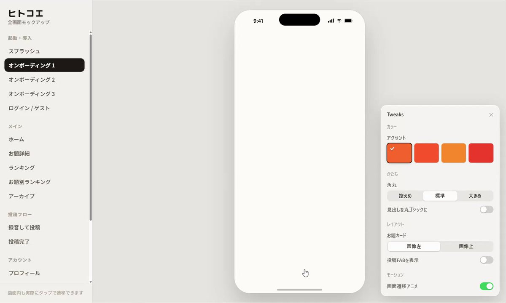
Torishima / INTPさんがリポスト
このイベントむしろ Oikonさんをユーザー代表として招待すべきな気がする
配信されてないセッションもあるし
Oikon
@oikon48
現地に行きたかったぜ！ x.com/nukonuko/statu…
Torishima / INTPさんがリポスト
元々実装も0>1はClaudeの方が強かったから学習過程すかね
Torishima / INTPさんがリポスト
Fable 5 は自走力は高いようだけど、コストが高く、処理速度は遅いので、場面を選びそう。
個人的には、プランは Fable 5 で作って、実装は Composer 2.5 とか安くて速いモデルに一気にやらせる方が楽。あと、デバッグは Fable 5 も良いかも（まだ試せていない
Torishima / INTPさんがリポスト
Claude Code fable5
ガチ臨界点だ、これ
マーケターとして感じる
AIクリエイティブのダメだったところ
どれだけdesign.md駆使しても、
クリエイティブが綺麗になっても
AI感がどこか拭えない苦しさだった
しかし本モデルで作るクリエイティブは
AI感が嘘みたいに無くなった
いで l 認知科学マーケ
@idesho__
fable5、ガチ人間すぎる。頭使いながら細かい手作業を超高速でやってくれる。朝方の驚き屋ムーブ、何やってたかと言うと、
/goalでブラウザユース、canvaログインしてcanvaで指定のセミナースライドのトンマナに合わせて新規pptxファイルの内容版に変えてみて x.com/idesho__/statu…
Torishima / INTPさんがリポスト
このブロンプトが30日間Anthropicに保存されてるかと思うと震えますね…！
Torishima / INTPさんがリポスト
授業中に生成AIを使わないようにと先生からお達しがあった。
「生成AIで出力した回答をコピペして宿題を提出するのはやめてください。
事前にお伝えした通り、正解不正解を見ていません。みなさんの勉強のために宿題を出しています。
Torishima / INTPさんがリポスト
fable凄すぎるけど、研究が課金ゲーになってしまう。予算無制限でfableのAPIつかって研究していいならめちゃくちゃ成果だせる。
Torishima / INTPさんがリポスト
私が考えるに、どうしても自分の美観やコントロール力、センスを超えた美しい画像をAIで誇らしげに提示すると「身の程知らず感・美術舐めてる感」が前面に出てしまうのかなと。結局その人の属人性と結びついた美術が見たいわけで、それができればAI絵でも見ていて飽きないものにできると思うんです。
とりさんさんがリポスト
人と話した後に「あの時ああ言えばよかったなあ」と思いつくのはフランス語でesprit de l'escalier「階段の機知」と言います。元は、帰りに階段を下りる時になってやっとうまい言葉を思いつくイメージです。
ドイツ語のTreppenwitz「後知恵」も成り立ちは同じく「階段(Treppe)」+「機知(Witz)」です。
Torishima / INTPさんがリポスト
>rp
AIイラストやってみると前景と背景を一緒に生成しない方がいいことにすぐ気づくんですけど、こんな感じで均一な情報量が視線誘導を散漫にするからなんですよね。うまい人はちゃんと余白使えるから古い話かなぁ
Torishima / INTPさんがリポスト
Fable 5 に書かせても、Bugbot や CodeRabbit の指摘や Nitpick は目立って少なくはない。精度がどれほど高くなっても「一筆書き」には限界があるのだと再認識。
いるか@心が酒びたっているんださんがリポスト
喜多ちゃんギター欲しすぎて
誰も覚えていないだろう、ギブソン史上初アニメシグネイチャーモデルを弾く
いるか@心が酒びたっているんださんがリポスト
端的に言って、絵で何を伝えたいのかさっぱりわからない事かなぁ。
ラーメンを食ってるにしては美味しそうな顔はしてない、だからと言って苦手でもなさそう。無表情キャラだとしても、尚更ラーメンを食うシチュエーションがおかしい。
へたーれ
@hetaaaaaaaaaare
ここまでクオリティ高い絵でもAIって分かるのはもう本当になんでだろう
どこをみても違和感がない筈なんだけど、色使いとかなのかな？ x.com/nyanko_in/stat…
Torishima / INTPさんがリポスト
日本語が最難関言語と言われる理由
shinshin86｜AITuber OnAir開発者｜AIキャラのミコをバズらせたい人
@shinshin86
日本語の文章に、文脈を見て「正しい読み」を当ててくれるOSS、ja-furiganaを動かしてみました。TTSの読み間違い対策に効きそうです。
「一日署長」をいちにちしょちょう、「明日」をあしたと読み分けてくれる。HTTPサーバーもあるので、Claude x.com/shinshin86/sta…
Torishima / INTPさんがリポスト
超かぐや姫終わったらつまんないよ〜
Torishima / INTPさんがリポスト
うーん、非常に難しいところだけど、抽象的な思考力や理解力でGPT 5.5 pro よりFable 5 の方が優れてるかも。
というか、問題を構築する前段階の探索とか論理的な議論とかそういうのにFable の方が適性がある気がする。答えのない問題から問題を作る能力というか。
Torishima / INTPさんがリポスト
うっせえなあ。ローファー履いてトート持ってたら突然子供が公園で遊びたいって言った時対応できないだろ。世田谷で結婚相談所やっててそんなことにも気が回んねえのかよ
アシスト二子玉川＠結婚相談所 ハイクラス IBJ婚活 世田谷区
@wadafutako
男性は「清潔感」だけだと弱くて、少し色気を足して、アメリカ人よりはイタリア人に寄せた方がいいんですよ。
おでこを出す。
シャツは薄い水色。
ボタンダウンではなく、ワイドカラーに。
袖を捲って、男性が唯一許されるアクセサリーの時計を見せる。
バッグは黒のレザートート。 x.com/ZanEngineer/st…
エンドスさんがリポスト
ホルムズ海峡危機で「半年以内に事業継続限界」4割 製造業を調査
ホルムズ海峡危機で「半年以内に事業継続限界」計4割 レジリア調査
Torishima / INTPさんがリポスト
普段ExcelからWebアプリにコピペしたりされたりする仕事をしてるけどこういう事になったことはないのでどういう条件で起きるのか知りたい
Masato Kinugawa
@kinugawamasato
WordやExcelのテキスト1文字でもコピーしてブラウザに貼り付けると、 みたいなのがクリップボードにtext/html形式で常に含まれててユーザー名が漏れ得ると知った。さりげなくて地味に嫌だな
Torishima / INTPさんがリポスト
Mythosのセーフガード強化した一般版としてFableが出た。
Anthropicのモデル名は言語表現用いた作品や文化を採用してて、しかも規模にある程度比定する風になってる。
・Haiku（俳句）
・Sonnet（定型詩）
・Opus（作品）
Torishima / INTPさんがリポスト
Claude Fable 5 / Mythos 5 を Code with Claude Tokyo に合わせて来たの感慨深いな
Torishima / INTPさんがリポスト
Claude Fable 5は知能が確かに高くて地に足のついた会話をしてくれるが、より「知能や集中力と、文脈の知識は別のもの」ということが分からされてしまう。例えば課題に対する提案なら合理的に出してくれたりはするけど、日本でウケる大喜利回答みたいなのは文脈知識がなさすぎて、まだつまらない。
Torishima / INTPさんがリポスト
Mythos級、みたいな表現、大建艦競争時代のドレットノートみたいでかっこいいな。
でもあの頃みたいに「前のモデルではもう太刀打ちできないし意味がなくなる」という意味では本当に大建艦競争時代と似てる気もする。
Torishima / INTPさんがリポスト
「人生詰む」って決して大袈裟じゃありませんからね。数か月後に突然、警察が来て「口座売りました？」と質問されるわけ。「えっ、バイト先の店長が処分してくれるって言ってたから…」「お金を受け取りましたよね？」「いや、お詫びにこれで旨い飯でも食えって...」「ちょっと署まで来てくれます？」
Torishima / INTPさんがリポスト
こっっっっわ、すすんで口座を売ろうとはしないけどこの言い方されたら大学1年生なんもわかってない上京したてです！の時に騙されなかったか怪しい
バイト単発と固定を常時3つくらい掛け持ちしてた結果手数料のためにUFJだけで支店違い4つ作らされて、社会人になった時に閉じた女のため
関大岩本ゼミのアドミン
@AkinoIwamo
これ、今年の新入生向け「基礎演習」でレクチャーしたところ。バイト先の店長から「口座を作って」と頼まれて作ったら「ごめん、その銀行だと手数料かかっちゃうから別の銀行で作り直して。今回作らせちゃった口座はこっちで買い取って処分しとくから」と甘い言葉に従っただけで人生詰むのよ、と。 x.com/suishu_/status…
なるせひろのりさんがリポスト
そらそうなるよ
令和8年度
政府の沖縄振興予算
2647億円
その内
※一括交付金 (県が自由に使える)
736億円
※社会資本整備
約1254億円
(道路、港湾、空港、学校施設耐震化、防災、首里城再建等のインフラ)
#玉城デニー よ
この金はどこに消えた？
#古謝げんたを沖縄県知事にしよう
沖縄八重山日報
@YaeyamaNippou
予算要請 沖縄県とは別行動 市長会、溝浮き彫りに
https://
yaeyama-nippo.co.jp/archives/30472
「国と県が対立している状況で県と一緒に要請行動しても、我々が希望する内容を国に十分に伝えられない」
Torishima / INTPさんがリポスト
うーんこれはAGI
Torishima / INTPさんがリポスト
なんというか、心温まる話はいいのだが、心温まる話を集めているアカウントはヤダ。
ろじぱら ワタナベさんがリポスト
小学生の頃に遊んだゲームが次々にリメイクされててヤバい
オレのことも小学生にリメイクしてくれ
Torishima / INTPさんがリポスト
名古屋市営地下鉄で99駅中98駅でホームドア設置したのに、残り1駅が名鉄が管理する共同使用駅で設置の見通しが立たないのウケる。さすが名鉄
moja
@moja99758134
今日も一日
Torishima / INTPさんがリポスト
すごい決断だ。惚れる。
> 設計者の月額AI利用料は440万円。
これもすごい。
価格.comをAI駆動で全面刷新する ー 30年分の技術的負債を返し、次の30年の土台をつくる ー
https://
speakerdeck.com/tkyowa/kakaku-
com-ai-driven-system-renewal-0fc7e978-0e39-4bba-93eb-17cd56ecd1c1
…
#speakerdeck
価格.comをAI駆動で全面刷新する ー 30年分の技術的負債を返し、次の30年の土台をつくる ー
Torishima / INTPさんがリポスト
これ、今年の新入生向け「基礎演習」でレクチャーしたところ。バイト先の店長から「口座を作って」と頼まれて作ったら「ごめん、その銀行だと手数料かかっちゃうから別の銀行で作り直して。今回作らせちゃった口座はこっちで買い取って処分しとくから」と甘い言葉に従っただけで人生詰むのよ、と。
醉舟
@suishu_
どこかの地方国立大の学生複数人が、卒業旅行の金欲しさに口座を売ってしまったらしい。最短20年は全ての金融機関で口座が作れない由。事件化はされてないが婚約破棄、内定取消、家族のローン引上等々で、実質懲役より重い。ほぼ社会的死刑。
Torishima / INTPさんがリポスト
Animaは複雑なプロンプトが理解できるかテスト
「彼女は片手にバナナを持ち、片脚で立ち、もう片方の手で野球のバットを持ってバランスを取っている。頭の上にはバスケットボールが乗っていて、慌てた表情」
Torishima / INTPさんがリポスト
WordやExcelのテキスト1文字でもコピーしてブラウザに貼り付けると、 みたいなのがクリップボードにtext/html形式で常に含まれててユーザー名が漏れ得ると知った。さりげなくて地味に嫌だな
Torishima / INTPさんがリポスト
ではなぜ『さわやか』のハンバーグは半生でも大丈夫なのかというと、
あのお店はFSSC22000という、とんでもない衛生管理が必要な認証をとるレベルで徹底的な安全管理を行ってハンバーグを作っているからです
簡単に言うと『生で食べられるユッケをハンバーグにしている』みたいな感じです
知念実希人【公式】
@MIKITO_777
『ステーキはレアでいいのに、何故ハンバーグはダメ？』
と思うかもしれませんが、食中毒を起こすo-157等の病原性大腸菌は腸管にいて、食肉処理の際に肉の表面に付着します
つまりステーキでは表面にしかいませんが、
挽肉のハンバーグでは内部にまで原因菌が入り込むため、中まで加熱が必要なのです x.com/EARL_med_tw/st…
Torishima / INTPさんがリポスト
騙されたにせよ違法だとわかってたにせよ、「合法的に生きられない若いやつ」が爆誕してしまい、しかもそいつの個人情報をトクリュウに握られてる状況なわけで、警察はこの部分、トクリュウに引き込まれそうな連中を囲うというか保護する方策が必要になっていくな。
醉舟
@suishu_
どこかの地方国立大の学生複数人が、卒業旅行の金欲しさに口座を売ってしまったらしい。最短20年は全ての金融機関で口座が作れない由。事件化はされてないが婚約破棄、内定取消、家族のローン引上等々で、実質懲役より重い。ほぼ社会的死刑。
Torishima / INTPさんがリポスト
彼らは間違いなくこれに関わっている、でも証明できない
Drizzle ORM
@DrizzleORM
これはパッケージのサイズではなく、100MBのパッケージメタデータの上限で、本質的には「公開されたバージョンの数」です。
そして、ほとんどのバージョンが72時間より古いため、「npmスタッフ支援によるクリーンアップ」が必要です。
Torishima / INTPさんがリポスト
これはパッケージのサイズではなく、100MBのパッケージメタデータの上限で、本質的には「公開されたバージョンの数」です。
そして、ほとんどのバージョンが72時間より古いため、「npmスタッフ支援によるクリーンアップ」が必要です。
Torishima / INTPさんがリポスト
新しいリリースを配信できません。npmのリリース上限100MBに達したためです。npmサポートと解決に向けて取り組んでいます（すでにほぼ2週間経過）
とはいえ、大規模なリリースはもうすぐ来ます。この後すぐに新しい上限にも達するでしょうね
つば二郎@きいちゃんすこすこ侍さんがリポスト
／
カラプロありがとうの気持ちを込めて…
フォロー＆リポストで「2ndLive colorprogress出演者のサイン」が当たる
＼
カラプロでプレゼントした『カラプロ色紙（非売品）』を2名様にプレゼント！
▼応募方法
①このアカウントをフォロー
②本投稿をRP
6/14まで！ #さぶぱれ #カラプロ
Haruhiko Okumuraさんがリポスト
ほぼすべての人が統計のマジック（サンプリングバイアス）に気づけているのは素晴らしいと思います。
他方，学校種別じゃなくて，国別に集計されたランキングだったら，批判意識や統計リテラシーが欠如した人が続出するという問題はもっと深刻に考えるべきだと思います。
中部地区英語教育学会紀要, 2025 年 54 巻 p. 97-104
jstage.jst.go.jp
いるか@心が酒びたっているんださんがリポスト
クマは、この人を食べよう！って決めたらその人間のもとにゆっくり歩いて近付いてきて、たまに距離を取り、脅かしても退去せず、唸りもせず、突進もせず、もしかして友達になりたいのかな？という錯覚さえ起こさせるほどの温厚さで少しずつ距離を縮めてくるのですが、ある一定の距離まで近寄った時に急
渡辺浩弐さんがリポスト
ものすごい本を入手したぞ。
『怪力法並に肉体改造体力増進法』/若木竹丸